| ザ・マネー 7つの原則 | |
| 竹井 佑介 | |
| NEXT LEVEL (2018) | |
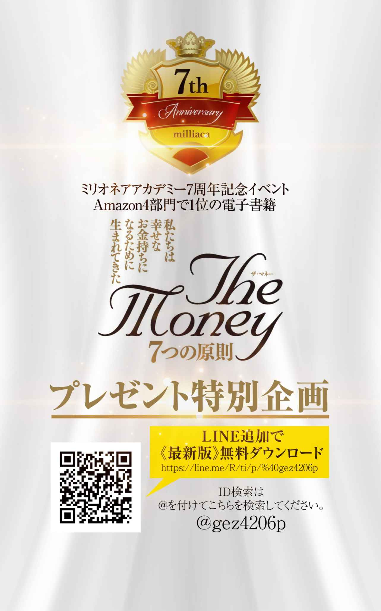
第１原則 お金の本質と愛し方
１ー９ 必要な時に必要なだけ、必要な場所にやってくるのがお金
第２原則 富保有意識 お金持ちと心持ち
２―５ 全てを学びととらえる お金は唯一目に見えるスピリチュアル
第３原則 お金の稼ぎ方 事業編
３―２ 会社員、公務員となり信用をつけ 投資用不動産を購入する
第４原則 お金の稼ぎ方 トレード編
４―３歴史を学ぶ 歴史は繰り返すから、人は歴史から学んでいない
４―４トレンド 皆がギャーと騒いでいる時にチャンスが転がっている
第５原則 お金の守り方 資産構築の５つのステップ
ｃｏｌｕｍｎ４ なぜ私は４年落ちのベンツではなく４年落ちのポルシェのパナメーラを選んだのか
第６原則 お金の活かし方 社会投資
ｃｏｌｕｍｎ５ ONENESS と ONE PIECE 最高の先生は誰？ どこに？
第７原則 真のお金持ちの 考え方
７−１０ 全て身の周りに起きていることは 本当の自分を取り戻すための 神様からのメッセージ
７−１１ メメントモリ 人はやったことと同様に、やらなかったことで人生は決まる
ｃｏｌｕｍｎ ６ ７０億人全員の幸せの達成につながるマザー・テレサ
はじめに
お金持ちと聞いてあなたはどのようなイメージを抱きますか？
ビル・ゲイツのような事業家、ウォーレン・バフェットのような投資家など、様々な方が頭に浮かぶことかと思います。ただ中にはお金持ちに対して悪いイメージを持っている方もいらっしゃるでしょう。
そもそもお金というものをほとんど理解しようともせず、ただイメージでお金持ちや稼ぐこと自体を毛嫌いしてしまっている金融リテラシーの低い方もいます。
私自身も幼少の頃、おじいちゃん、おばあちゃん子で一緒に水戸黄門を見て「越後屋、お主も悪よの〜」、「いえいえ若ほどでは」といったやりとりから、お金持ちとはどこか悪いことをしないとなれないものと思っていました。２０００年頃にはヒルズ族が生まれ、間もなくその凋落ぶりが報道されたため、お金持ちに対するイメージもさらに悪くなりました。
今、六本木ヒルズの中にはお金を稼いでもすぐに失う方もいれば、稼ぎ続けてしっかりと資産を構築する方もおられます。これまで国内外、また歴史上の人物含め色々なタイプのお金持ちを自分なりに分析してきました結果、「私たちはお金持ちにならなければならない」という結論に達しました。
お金は目に見える唯一のスピリチュアルと言ってもいいかもしれません。お金は、私たちの現在の状況や夢を叶えるために、足りないこと、必要なメッセージを伝えてくれています。
満月になればお月様に向かって財布を振り、新月になれば目標設定をして金運を上げようとする方もいます。しかし、具体的な行動の方法が分からない人もいます。そのため結果が出ないで、パワースポット巡りをするようになったりします。永遠に目標を未来に置き続ける生き方をしてしまう。スピリチュアルと現実との橋渡しを上手く出来ていない方がほとんどです。
異次元とも言うべき金融緩和と共にアベノミクスがスタートし日経平均株価は急騰。政府側からの投資呼び込みで、ＮＩＳＡもスタートする中、安易に投資の世界に首を突っ込み損失を出してしまっている人、また、今は利益が出ていても数か月に一度定期的にやってくる株価調整の急落、４年から５年に一度起きる大暴落のことなどを全く想定せずに、株やFXなどを持ちっぱなしにして、遅かれ早かれ大損してしまうであろう人があまりにも多いのです。
コツコツと長い期間を経て稼いできたお金を安易に巨額の住宅ローンとして組んでしまい、終身雇用は既に終わってしまっていることにも気づかず、「ゆとり返済」ならぬ「おとり返済」の罠にはまっている方も多いのです。
特に団塊の方々は、住宅ローンの残債が退職金では足りなくなり、活路としてNISAだったりするわけです。一見金融リテラシーが高そうなお医者様も、ふたを開けると、高い年収にも関わらず、いきなり黒字物件となるような一棟買いをしています。
結果、利益のほとんどを税金の支払いに充てることになり少しの空室にも耐えられないような不動産経営をしていることが多いのです。
これは先進国のお金に対する知識として極めて危機的な状況ではないでしょうか？
しっかりとお金というものについて、学んでおくことができれば、コツコツ貯金したお金を安易に住宅ローンや、一部の先物営業、海外投資などの投資詐欺に引っかかってしまうこともなくなるのではないでしょうか？
逆に、ロバート=キヨサキ氏の『金持ち父さん貧乏父さん』の中にある「ＥＳＢＩ」の考え方、つまり、Ｅ=従業員、Ｓ=自営業者、Ｂ=ビジネスオーナー、Ｉ=投資家のBIの考え方を身に着け、世界一の投資家ウォーレン=バフェットが言うように最大のレバレッジである時間を使い、アインシュタインが言うように人類最大の発明である複利を使って資産を構築することが出来るのではないでしょうか。
その構築した資産のキャッシュフローによって社会に役立つ投資、つまり社会投資をして世の中に貢献しつつ、しっかりと次世代へ資産と知恵を継承していくことが大切だと私は考えています。
私たちの人生はたったの８０年しかありません。
だからこそ祖先の方々が築いてこられた知恵、財産のバトンを受け継ぎ、世の中に貢献し、次世代にバトンタッチ、継承していかなければなりません。
その使命を持ったうえで共に手を取り合い、お金のレベルを上げ、しっかりと世界中で資産構築し、世の中のために投資をする社会投資家の仲間が、この本をきっかけに全国に広がることを祈っています。
竹井佑介
私たちがいつも何気なく使っているお金。多くの人がお金持ちになりたいと思っている一方で、お金は悪だと言う人もいます。お金が貯まれば貯まったで、強盗が来ないかと不安にもなる人もいます。お金がないが為に命を絶つ人もいます。
一体お金とは何なのでしょうか？
お金持ちは何か悪いことをやっているんじゃないか、お金のために働きたくはない、と言いつもやりたくもない仕事をやって一所懸命お金を稼いでいる方がいます。そういう人は稼ぎたいというアクセルを踏みつつ、稼ぎたくないというブレーキも同時に踏んでいます。アクセルを踏みながらブレーキを踏んでいたら当然ながらその車は壊れます。でもそんな風にお金をとらえている方がいかに多いことでしょう。
私たちはお金のことを理解し、心から愛することで稼ぐことへのブレーキを外すことが出来ます。そのためにも身近にあるこのお金について理解を深めていく必要があります。
お金の基本は「信用」です。
多くの人が自分の口座残高をベースに自分のお金の能力だと勘違いし、その残高の範囲内で様々な計画を立ててしまっています。レジャー、遊びのために使うお金であればそれで良いでしょう。しかしながら、多くの場合はそうではありません。
たとえば自宅を購入される際、全額現金で購入される方はどれほどいらっしゃるでしょうか？ほとんどは銀行からの借り入れを活用するかと思います。同様に不動産購入でも同じように銀行からの借り入れを活用する方がほとんどです。また株やFXなどのトレードでさえも証拠金という実際に自分が証券口座に振り込んだ金額の３倍から２５倍ものお金を運用することが出来ます。
また、事業を起こす際には例え自分の口座残高では足りなかったとしても周りの有志から出資を募って会社を興すことが出来ます。政策金融公庫などの創業支援融資などを活用して国からお金を借りて起業することも出来ますし、返還の義務がない助成金なども存在します。
より大きな金額が必要な時はベンチャーキャピタルを使って資金を集め上場を目指すことも出来ますし、もっと大きな額を集め事業を拡大させるために株式を上場させ、より一般の方々から投資、出資を募り次のビジネスをより大きく広大に仕掛けることも出来ます。
これらに共通することはあなたやそのチームの信用によって、あなたの口座残高以上のお金を集め活用することが出来るということです。
また、あなたに信用があれば提供するサービスや本なども売れることにもなります。ちなみに株式取引では自分が持っている以上のお金を使ったトレードのことを信用取引といいます。
以上のことからわかることはお金持ちになることは、世の中から信用を得ることと密接な関係があるということです。
愛という側面でお金を観てみましょう。時計や洋服、建物などの物質はこちらが「大好きだ」といくら伝えてみてもこちらに愛情を返してはくれません。
しかしながら人間や動物は愛情を注げば返してくれます。自分自身でも実験したのですが、切り花も「ありがとう」、「愛している」などの言葉を投げかけたり、ラベルに書いて貼ることでより長く生き、枯れるスピードも通常よりもずっと遅くなります。
人は特に顕著で幼少の頃から親や周りの人たちによって心から愛情を受けて育った人は愛に溢れ、恨んだり攻撃したりすることを知らず、感謝の気持ちをベースにどのように恩返ししようかと日々考え生きておられる方がほとんどです。
これはそのままお金の性質に当てはまります。人のようにお金は恨み攻撃するために使うと離れていき、逆にお金を愛し大事に使うことでより多くの仲間を伴って返ってきてくれます。ではどのようにしてお金を愛するのでしょうか？
それはお金に対して「感謝」を示すことです。
自分の元に来てくれたお金は発行されてから実に様々な人々の手に渡りながら巡り巡ってあなたのところに来てくれています。お金を受け取った人々おひとりおひとりに幸せを与え、人々を笑顔にしながら次はあなたに幸せを与えるためにやってきてくれています。
もしあなたの財布の中に昭和５５年のものがあれば、何と３０年以上も人々を喜ばせ続け、次に選ばれたのがあなたというわけです。この壮大なお金の流れを頭に描くだけでもお金に対する感謝の念が生まれ、顔が少しほころんできませんか？そしてこのやってきてくれたお金に対するお礼として、よりよいもの、世の中のためになることに使うことを心がけること。その行為がまさにお金を愛するということにつながり、そのような使われ方をしたお金は喜んで多くの仲間たちとともにあなたの元へとまた戻ってくることでしょう。
しかしながらどんなに愛情を示してもお金、口座残高が増えないということも実際に起こります。それは２つのパターンが考えられます。
１つ目は、残高が増えないことによって、もしくは減ることによってこれまでのやり方は間違っており、新しいやり方を模索しなさいというメッセージを与えてくれている場合。
２つ目は、自分のお金だけで行動しようとするのではなく多くの人の力を借りてやりなさいという一馬力から多馬力へと飛躍しなさいというメッセージを与えてくれている場合です。愛情表現の仕方が多岐に渡り、ただ単にこちらを喜ばせようとするのではなく、時に厳しく返してくることによって本当の道を探らせる深い愛情表現があるという意味で動物と物質の間の性質をお金は持っているのでないでしょうか。
このお金からのメッセージをしっかりと受け止めることが出来ないと、お金は何て悪いものなんだと安易に感じてしまいます。例えば口座残高が減るのをみて会社の給料が安いことを恨んだり、騙された相手を恨んだりしてしまいがちです。
しかしながら会社の給料が安いからこそ、会社の業績が不振なのではないかと考え必死に打開策を考え、会社内のチーム力をより強固にし、売上アップのために全力を尽くすことも出来ますし、客観的に観て不当な評価だった場合にはこれを機に転職することも出来ます。また騙された相手を恨む暇があったら自分の脇の甘さとお金を大事に扱えていなかったことを反省し、次回から大きなお金を動かすときには自分とは別の専門家たちの意見も聞きながらより慎重に行動することが出来るようになります。
こう考えると、そもそもお金自体に良い悪いといったことは無く、お金が増えたり減ったりした状況をどのように判断するのかが大切なのか分かります。変えられない過去に対していつまでも誰かを恨んだりグチグチ言ったりしてお金に執着すること自体が問題なのです。 それよりもその変えられない経験をどう将来に活かすのか、自分の弱点はどこなのかをしっかりと認識することが鍵になります。過去は変わりませんが過去に対する解釈はいかようにも変えられます。
思考は現実化するという有名な言葉がありますが、お金に良いイメージを持っている人は良い形でお金を稼ぎ、使っており、逆にお金に悪いイメージを持っている人は自分が納得しない形でお金を稼いでいたり、使っていたりしています。
ただ、大事なことをお伝えします。
実は、お金自体に良いも悪いもありません。使う方自身にそれは依ります。問題なのはお金に対して執着を持ってしまうことです。
人は執着心を持つと偏見をもってしまうことになります。これまで起こってきた経済危機の原因はお金に対する執着によって起きたものとも言えます。必要以上に自国の利益、自社の利益、自分の利益に執着することで、他を排斥し敵を作り、結果的に金融危機という大ダメージを受けこれまでの利益を一気に吹っ飛ばしてしまうことになります。自分のことだけではなく全体の利益になることを考え行動することがとても大切です。当たり前のことを当たり前にやれば当たり前に成功します。
この自然の流れを常に意識し、執着から離れ、お金に最も喜ばれるような自分も周りの人も皆喜ぶような使い方を日々追究することが大切なのです。
私たちは元々生まれてすぐにお金に対して執着していましたでしょうか？
生まれてすぐにオギャーオギャーと泣きながら、
「お金って良いものだよね」
「お金持っている人は何か悪いことをしているはずだ」
なんて思ってはいませんでしたよね。
人によっては１万円札をビリビリに破り親御さんに叱られた、なんて経験もあるかもしれません。つまり私たちが持っているお金の価値観は後天的につくられたもので、これまでの人生経験の中から形成されています。
親御さんからの教えや口癖の中から生まれた価値観、テレビなどのメディアの影響から生まれた価値観、過去の先人たちが書き残してくれた書物の中から得られた価値観、ビジネス、資金調達など自分自身の経験に基づいた経験によって得られた価値観もあるでしょう。
ただ、どのような価値観であれ、全てはあなたが生まれた後に出来たものであって、その価値観は先天的なものではないということです。
つまり、あなたはお金に対してどのような価値観でも持つことが出来るのです。言い方を変えれば夢を叶えるために必要な金の価値観は何かを考え、その価値観を意識して持って日々行動することで夢実現に大きな一歩を踏み出すことが出来るようになるということです。夢を叶えるためには「やり方」と同様に「あり方」のマインドセットも大切だからです。
今一度、お金の価値観はじめ、自分自身が持っている余計な価値観、つまりこだわりについて見直してみられても良いのではないでしょうか。
大事なのは自分の夢をかなえるために必要な価値観を持つことでそれはこちら側で自由に決めることが出来ます。その意味でお金自体には「良い」、「悪い」といったものはそもそもありません。次は具体的なお金の稼ぎ方についてみていきましょう。
お金の稼ぎ方には基本的に次の３つの種類があります。
①夢のお手伝いをして稼ぐ
②自分のビジネスで稼ぐ
③投資で稼ぐ
ひとつひとつみていきましょう。
①夢のお手伝いをして稼ぐ
こちらはサラリーパーソンの方も該当します。現在お勤めの企業を創業された方の夢をお手伝いしていることになるからです。
もちろんそれが自分自身の夢と合致して好きでやっているという方もいらっしゃいますので、創業者のお手伝いをしているという意識を持っておられない方も多いかと思います。もっと近い立場で創業期から関わっておられた方であれば創業者の夢をお手伝いし、応援しているという意識も強いでしょう。
②自分のビジネスで稼ぐ
起業しオーナー社長または個人事業主として稼いでいる状態です。
ほとんどの方が自分のビジネスを持つために大企業やベンチャーなどに入られてノウハウを学びつつ、資金の準備をして独立されます。ここで意識して欲しいのが会社に入って人の応援をしていたのが、今度は自分自身が応援される立場になっているということです。
自分がして欲しいことを先にする。実際、元々従業員の立場から起業された方のほとんどが、従業員時代に記録的な結果を残し、会社に多大なる貢献をされていた方です。まさに成功するためには与えることだということを示す良い例でないかと思います。
③投資で稼ぐ
投資とはお仕事やご自身のビジネスを通して創った資金を資産に変えていくという意味です。お金持ちの方々の多くは現金が出来たらこれを不動産など節税しながらキャッシュフローを生むような資産や不当に評価され価格が下落している株に変えようとします。
結果、景気が良くなると、不動産価格や株は上昇し、お金持ちの資金はより潤沢になります。特にアベノミクスのようにインフレターゲットを２％においているということは資産価格もそれ以上に上昇することとなり、逆に現金価値は２％ずつ下がっていきますので、現金を資産に変えようとします。
そして投資によって得た資金を元手に更に不動産などの資産を購入していくことで世の中の資産の価格が更に上昇していきます。
これが格差社会との主な要因です。不動産など資産を持っている人たちはインフレによってより資産価値は上昇していきます。しかし資産を持っておらず現金しか持っていない方々はインフレによってその預金価値は毎年２％ずつ減っていきます。結果的により格差は拡大するということです。
投資についてもうひとつ言及しておくと、リーマンショックなどの金融危機や東日本大震災といった大災害などで引き起こされる相場の大暴落時、皆がパニックになっている時こそが株や不動産など資産を購入する時期であることをおさえておいてください。
パニック時には冷静な判断を欠いてしまうことで、良いものも悪いものもまとめて値下がりする為、こういった時に優良銘柄や不動産購入などを進めると一時的には低迷しても後ほど大きな利益になることが多々あります。
その意味で相場暴落時に自宅、不動産、株など買うものリストなどをあらかじめ作成しながら普段から意識して生活していると、世の中の投資のリズムが見えるようになります。お金を稼ごうと思ったら世の中の上下の景気のリズムとそれに伴うお金の流れをみれば良いということです。
そして当然のことながら稼ぐと必ず発生するのが税金です。そのため投資で稼ぐときに大切なことは節税をしながら効果的に投資をして資産を構築していくことです。また後ほど詳しく説明していきます。
お金は大事なことを教えてくれます。
「稼ぎ方によって知恵が分かり、使い方によって人格が出る」
ということです。
お金を稼ぐためには、時代の流れを読み、その時最も重要なトレンドを読み、知識を身に付けることがとても大事です。その意味で稼ぐことが出来たということはその人がいかにお金、経済、時代の流れなど多岐に渡り学び、それを知恵として昇華し自分のものとし実際に行動できたかが分かります。そして、次のポイントは使い方です。
お金はエネルギーです。お金を持つということはその人の願望を叶える力がより増すことを意味します。そのためお酒が好きな方はよりお酒を飲むようになり、食べるのが好きな方はよりおいしいお店に通うようになり、学ぶことが好きな方はより本を読み、セミナーに行くようになり、旅行が好きな方はよりたくさんの国に旅行し、社会貢献に興味がある方はより寄付をするようになります。お金を持つと人生の自由度が拡大し好きなことをよりたくさんしようとするため、その行動がその人の性質、性格をより濃いものにさせるということです。
つまり、お金はその人が本来持っている性質を助長させる効果があるということです。その意味でお金を持つ前の段階から、自分の人生の指針を立て、どこに向かっていくのかをしっかりと意識しておかなければ、お金を持ったせいでとんでもない方向にも行ってしまうことにもなりかねません。その意味でお金とは諸刃の剣とも言えます。
全ては使う人次第です。使えば使うほど人生は良かれ悪かれ、その方向に向かうことになります。だからこそ方向性をしっかりと意識し、人格を磨き人間性を高めるようなお金の使い方をしなければなりません。お金自体に良い悪いはありません。要は使う人によって大きく左右されるということです。
包丁も料理人が持つのか犯罪者が持つのか、ピストルも警察官が持つのかマフィアが持つのか、同じものでも使う人によって大きく変わってくるということです。
お金と時間はどちらがより大切なのでしょうか？
時間を使うことでお金を作ることは出来ます。
お金を使うことで時間を作ることも出来ます。
それは人を雇うことによって、自分ひとりでは時間がかかることを、はるかに短い時間で行うことが出来ます。また自分ひとりの時間をどれほど使っても出来ないようなこと、例えばビルの建設なども、たくさんの人々の力を借りることで出来るようになります。
ただ、人に動いてもらうときに必ずしもお金が必要というわけではありません。かつてのギリシャ人がアッティカ地方のラウリオン銀鉱山でトラキア人を奴隷として強制的に使役していたように、オランダ人が３５０年間インドネシアを植民地支配したように、お金を使わずとも人を動かすことは出来ます。
それとは逆にイギリスの植民地からインドを独立させるために非暴力不服従運動を指導したマハトマ=ガンジーのように、南アフリカ共和国における白人と非白人の諸関係を規定する人種隔離政策の撤廃を成功まで導いたネルソン=マンデラのように徳とその信念に人が賛同し、お金を受け取ることなく人が動くことがあります。
そこには金銭的関係は無く、心からの賛同によってひとりひとりの限られた人生の時間を提供しています。つまりお金がなくても時間を得られることがあるということです。では逆に時間を使わなくてもお金は得られるのでしょうか？
これは不可能です。
お金を増やすためには必ず時間が必要です。お金は与える価値に応じて増加します。新たな価値が世の中に生まれれば、それに応じてお金は増えていくことにつながります。事実、世の中に流通しているお金の額は増え続けています。
しかし、永遠の寿命の時間をお金で買うことは出来ません。
その意味においてお金よりも時間の方が大事と言えるでしょう。
ただし、人を雇うことでひとりの寿命と比べれば永遠とも思える時間を買うことが出来るでしょう。
それでは次に命とお金についてみてみましょう。命とお金はどちらがより重いのでしょうか。
日本には「金は命の親、命の敵」ということわざがあります。お金のために命を救われることもあれば、お金のために命を落すこともあるという意味です。
例えばお金を使って食料を購入し命を維持し、暗殺者はお金によって人の命を奪います。
前者はお金によって命を長らえ、後者はお金によって命を失っています。
武者小路実篤の『人生論』には次のような一節があります。「しかし金というものは魔物であることはたしかだ。その奴隷にならないことが大事である。」
お金に支配されている方がこの世の中には多いのは紛れもない事実です。ギラギラ系と呼ばれるような方々は自分が如何にお金を持っているかを見せびらかし、見栄にお金を使い、その匂いを嗅いで集まって来たロクでもない仲間（連中）によって身を滅ばします。また借金苦で自殺してしまう方もいます。
この方々はまさにお金に翻弄されており、お金によって命を落とす方に至っては紛れもなくお金よりも命を軽くみている証拠です。
イギリスの哲学者フランシス=ベーコンが次のような言葉を残しています。
「お金は良い召使でもあるが、悪い主人でもある」
これはお金を扱う人によってお金は良くも悪くもなることを示す大切な教えです。
お金を良い召使とし決して命よりもお金が重くなるようなことにはならないようにしなければなりません。くれぐれもご注意ください。一旦お金が悪い主人となったとき、そのお金はあなたの命を奪う可能性がありますので。
大事なことはお金を稼ぐと一旦決めたら、徹底的に突き進むことです。何かを成し遂げようとするとそれに見合った自分をつくりあげるために様々な試練が待っています。時に嫌がらせや、友達、両親など事故や事件が起きるかもしれません。しかし、やると決めた以上は何事も徹底的にスピードを緩めることなく突き進むことです。
そして大事なことは、ひとりでどうにもならなくなったらチームを構築することです。
結局終わってみればその時は辛くて嫌に思えたことも、全てがベストタイミングで必要な経験を与えてくれていたんだということに気づくことが出来ます。これら一連の流れは夢を叶える時にも同じです。しかしながら多くの人たちは夢を目標半ばで諦め、行動を止めてしまいます。それはなぜかと言うと、
「お金をなぜ稼がなければならないのか」
その理由が極めて脆く弱いからです。試練が来た時にそれを乗り越えられるかどうか、そしてブレーキを踏まないようにするためには何が何でも稼がなければならない理由が必要です。しっかりとした理由さえあればどんなことがあってもあなたが行動をやめることは無いでしょう。
例えばあなたの子供がテロ組織に拉致されてしまい身代金として、この１年以内に１千万円ビジネスを構築して用意するよう要求された場合、あなたはどのような行動を取るでしょうか？少々ビジネスに失敗したからと言って簡単に諦めてしまうでしょうか？お金が嫌いだからと言って稼ぐのを止めてしまうでしょうか？
お金を稼ぐということに一転の曇りも無くなった時、あなたの本来の力が発揮されます。しかし普通に生活をしていて拉致されるといった極端なことはそうそう起こるものではありません。
では、億万長者になるような方々は、お金を稼くぐことに対してどのようにして一点の曇りも無い状態まで自分を持っていっているのでしょうか。
お金を稼がなければならない理由は人それぞれあるかと思います。多くの社長様は従業員の皆様を露頭に迷わせるわけにはいかないと言って、粉骨砕身頑張っておられます。自分の子供を環境の良い学校にいれてあげたいという気持ちで頑張って働いておられる親御様もいます。また面倒を見ている孤児院の子供たちの生活を支えるためにお金を稼ぎ支援しているという方もいます。
１００％あなた自身の誇りが持てるような使い方、そして絶対に稼がなければならい理由を持ったうえで行動することがとても大切です。しかも出来ればあなたが稼がなければ困る人がいるとそれはやめられない理由となることでしょう。なぜなら人は自分のためよりも自分の以外の人のために動く方がより大きな力を発揮するからです。
何事も「やる理由」と「やめられない理由」の２つが揃って初めて、一点の曇りも無いと言えるのではないでしょうか。
多くの人々が持つ夢のひとつに名声を残したいというものがあります。
「功成り名遂げて身退くは天の道なり」
という日本のことわざがありますが、成功して名声を得て、更にそこに安住して老害とならず道を後世にバトンタッチしていくという意味ですが、なんともアジアらしい考え方です。過去に大金持ちになった人はそれこそ星の数ほどいるでしょう。しかしその当時仮に世界一の大金持ちになったとしても、ただそれだけでは後世に名を残すことは出来ません。いくら稼いだかよりも、どうそのお金を使ったかの方がずっと大切です。お金持ちで後世に名を残した代表的な人物は鉄鋼王の名を持つアンドリュー・カーネギーではないでしょうか。
事業で成功を収めた後、ニューヨーク市へカーネギーホールを寄贈し、教育振興財団、国際平和基金、カーネギー工業大学など文化や教育の分野へ多くの寄付を行ったことから、亡くなられて１００年近く経つ今日でも慈善活動家としてよく知られています。
また、１８８９年執筆の『富の福音』は今なお、フィランソロピーを志す人々への啓蒙書となっています。フィランソロピーとは人類への愛にもとづき、人々の幸福、健康をはじめ人生の質の向上、改善を目的とした。利他的奉仕活動を指します。カーネギーの言葉で最も有名なものは、
The man who dies thus rich dies disgraced.
金持ちのままに死ぬのは不名誉なことだ。
でしょう。そういう哲学を持っていたからこそ、このようにたくさんの社会貢献をされ、結果名声を得られたのでしょう。名声はお金で買うことは出来ませんかが、適切な使い方をすることによって後世に名声を残すことが出来ます。
お金は必要な時に必要なだけ、必要な場所にやってきます。
それがまだ無いとしたら無いことがあなたにとってベストな状態であって、無いからこそ学べることを今あなたは学んでいるということです。お金が必要だからこそ、ちゃんと使ってくれるだろうと期待されたからこそ、あなたに預けられたお金です。更に突っ込んだものの見方をすれば、そのお金はあなたのものではないということです。
身体も親から与えられたものであり、お金も天から与えられたもの。
全てこの肉体を持った世界は借り物によって出来ているという意味において私たちは仮初 のバーチャルの世界を生きているのかもしれません。逆に言えばバーチャルであるが故にそこには制限が無く、自由に思い通りに夢を生きることが出来るとも考えられるのではないでしょうか。ただ、神様の視点と私たちの視点はしばしば異なります。描いた夢をかなえる方法が必ずしも口座残高が増えることではなく、減らすことによって内面が鍛えられ、考え方をより工夫し、仲間を作るようになるものです。そして試練を乗り越えた結果、その額を使いこなしてくれるだろうと期待され、実際にお金があなたの元に入ってくるようになります。
そのため自分がいくら持っている、稼いでいると自慢している人は大きな勘違いをしていることに他なりません。なぜならばそのお金はうまく活用してくれるからと期待され集まってきたものだからです。聖書にもあるようにお金をもって高ぶってしまうことを戒めなければなりません。そもそも、口座残高を自慢することがどれほど、神様からの期待を裏切っていることになるのか一度考えてみてください。
そのためにも自分に預けられたそのお金をどのように世の中に還元していくのかを考え、ビジョンを構築し世に発信することです。それによってあなたの現在の口座残高をずっと超えたお金や、人、モノの力が集まってきます。
入ってきたお金を富に変えていくためにはどのようにしたら良いのでしょうか？
その前に、そもそも富とは何を指すのでしょうか？
ウィキペディアでは次のように書かれています。
富 （英： Wealth ）は、価値ある資源または物的な財産が豊富にあること、またはそのような資産を支配することである。そのような財産または資源を豊富に持つ個人、コミュニティ、地域または国は、富んでいる（豊かである）とされる。富の概念はすべての経済学、特に開発経済学の領域で重要である。しかし、富の意味はコンテクストに依存し、明確な一般的合意は存在しない。（注コンテクスト=文脈）ここで大事なことは、一般的合意は存在しないということです。そのため、私なりの解釈で富について話をしていきます。富とは次の６つを指します。
①お金（キャッシュフロー）
②人脈
③経験
④直感力
⑤決断力
⑥判断力
です。ひとつずつ観ていきましょう。
①お金（キャッシュフロー）
こちらは口座残高にいくらあるかよりもキャッシュフローの方を指します。自分の時間を使わなくても入ってくる収入を指します。株の配当金、不動産賃貸収入などもこれに含まれます。まず目指すべきはあなたが月に使っている平均の支出を月のキャッシュフローが超えることです。
②人脈
お金を含む多くの問題はひとりの力でやってしまおうとすることに原因があります。
お金が足りないのであれば出資者が納得するビジョン、リターンなどを提案し投資家を集め、時間が足りないのであれば人の力を借りることですぐに問題は解決します。デール・カーネギーの『人を動かす』という本がありますが、あなたのビジョンのために動いて下さる人々の力をどれほど集められるかが、ひとつの富の基準となることが分かります。たくさんの方々のお力を借りるためには、素晴らしいビジョンとあなたの人格が求められます。
③経験
たくさんの経験を積んでいるということは次の３つの効果をあなたにもたらしてくれます。
１つ目は、ラポール（心が通じ合い、互いに信頼し、相手を受け入れている状態）の構築です。同じ経験をしたことがある方とはすぐにラポールを築くことが出来仲良くなれます。たくさんの経験があるということは、よりたくさんの方々と経験を共有出来るということであり、人のつながりがより早く構築されていきます。
２つ目は、メンタルの強化です。辛いこと、悲しいこと、出来ないと思っていたことなど弛 まぬ努力で乗り越えることが出来たら、それ以降の人生にとって、この経験以下のことは最早超えられない壁ではなくなっています。つまりその時はとても辛い経験だったとしても、未来には「アレにくらべればマシ」というひとつの基準となり、自分自身のメンタルのステージを上げることが出来ます。
３つ目は、問題解決能力の向上です。過去と同じような経験をしたことがある場合には、以前解決した方法もしくはその応用にて、迅速にその新たな問題を解決することが出来ます。世界中で大人気のゲーム、ドラゴンクエストではレベルを上げるために経験値を溜めなければなりませんが、まさに言い得て妙です。
④直感力
初めて出会った時のファーストインプレッション（最初の印象）、新しい話を持ちかけられた時の最初の感情の動きなどを私はとても大事にしています。なぜなら論理的に考えたことは自分自身のレベルを超えることはありませんが、直感は神様のレベルだと感じているからです。直感の中には経験に裏付けられて出てきているものもありますが、全く理由もなく浮かぶ直感というものも確かにあります。初めてお会いした人に対して「何か苦手だな」、「何か素敵だな」と言葉が頭に浮かぶ、その少し前に実は心、感情は動いています。
それは、ワクワクであったり、グッと胸を差し込まれるような感じがしたり、キュンと胸が高鳴ったり、ゾッと身震いしたり、身体がスっと軽くなったり、腹の下（丹田あたり）が重たくなったり、多種多様な反応があるかと思います。
しかし、このわずかな感情の動きを意識している方はほとんどおられないように思います。この最初の直感は不思議と後々当たっていることがほとんどでした。そのため今では自分に言い聞かせている言葉があります。
「論理は自分のレベル」
「直感は神様のレベル」
最近では専ら直感に従い行動し、後々その直感がなぜ起こったのかを結果を通して紐解いていくようにしています。
⑤決断力
直感とつながりが深いのがこの決断力です。たくさんの似たような過去の経験を通して導かれる決断や、一瞬のひらめきでの決断など成功していく方というのは往々にして決断から行動までのステップが早い傾向にあります。決断力は筋肉のようなもので使えば使うほど、より鍛えられていきます。
⑥判断力
この決断力と判断力の関係は２種類の白い筋肉と赤い筋肉との関係に似ています。
白い筋肉は速筋と言われ瞬発力に優れた運動をするのに向いている筋肉で、赤い筋肉の遅筋は持久力に優れた運動をするのに向いている筋肉です。前者に当たるのが決断力だとすれば、後者に相当するのは判断力となります。よりじっくりと時間をかけ過去の経験と照らし合わせて、判断していくことでより自信を持って選んだ道に突き進むことが出来ます。
これら６つを意識して活用していくことで、富を構築するスピードはより早められることでしょう。
キャッシュフローを更に構築するために不動産を購入することは一番わかりやすい富の拡大の例になります。しかし前述の通り富の大部分を占めているのは知恵です。どんな状況であっても仮に破産したとしても、どんな状況からでも財を成すことが出来る力こそまさに富です。
１ー１０で示した６つの力が備わり、月々のキャッシュフローが支出の何倍、何十倍、何百倍にもなったとしても常に、スキルアップを図り経験値を積み重ねることが大事です。特に私自身はガーッと集中して働いて、一気に休みを取り、次の挑戦について考えたりする時間を作るようにしています。実際２００６年末まで一所懸命働いてビジネスの形を作り２００７年は比較的のんびりしつつも様々な分野の本を読んだり海外のセミナーに出たりして見聞と人脈を広げるようにしていました。最近でしたら２０１４年９月１０日にはオンラインスクールのシステムを構築し、不動産を２件購入し、ツアーで伊勢修養団の研修に行き、京都で勉強会を開催し、美容室 Real Me ６店舗目である福岡大名１丁目店を出店し、香港、マカオで仕事をし、１０月にはロシア視察をし投資計画を立て準備し、アメリカ投資ビジネスの打ち合わせをし、沖縄で勉強合宿をしていました。このまま怒涛のように働き続けると心身ともに疲弊してしまうので、こういった後には必ずお祝いや休息の場を設けます。１０月２０日の午後から２３日までは沖縄の小浜島や竹富島の星野リゾートに仲間たちと集合してのんびりして過ごす時間を作りました。
また、全国セミナー、フィリピン語学留学、投資視察、引越し、大規模な望年会の企画、ハワイ勉強合宿をし、その後はホノルルの西側の Ko Olina 地区のマリオットのタイムシェアを使って２０１５年の計画を立てていきました。
そして、２０１５年は日本、フィリピンを中心にビジネス構築や執筆をし、不動産によりキャッシュフローを更に大きく構築して、２０１６年からまた見聞を広げるために世界一周の旅に出たいと考えています。
このようにして自分自身の富のレベルを２つの方法で上げていきます。
１つ目は集中して仕事をすることでスキルアップをします。２つ目は集中して時間を作って遊んだり、次の行動計画を立てたり、これまで忙しい時には見向きもしなかった分野について勉強したり経験を重ねます。
そうすることで見聞を広めながら富のレベルを上げることが出来ます。
第１原則でお金を今いくら持っているかというよりも、どれだけの信頼、信用をこれまで人生で得られて来たのかの方が大事だという話をしてきました。そしてその信頼がしっかりとおありの方は力を貸してくださる方も大勢いらっしゃり、自分ひとりでは到底なし得ないようなことも実現出来るようになることもお話しました。では、信頼の最高の形とは一体何なのでしょうか。そして、どのレベルの信頼に向かって私たちは人間関係を構築していけば良いのでしょうか。
それは「愛」です。
愛とは、自分がしてほしいように相手に接することであり、自分以上に相手のことを大事にすることであり、一緒にいるだけでやすらぎ、やる気、パワーを頂けるものです。
して欲しいことが先にくるのではなく相手の立場にたって自分がその相手の為に出来ることを考え、スキルが足りなければ努力し、人を紹介し、少しでもお役に立てるよう一所懸命に行動することです。
そういった愛の信頼関係を互いに結尾合っていくことが出来れば、自分ひとりの力をはるかに超えた本当に素晴らしい人生となることでしょう。
第２原則 富保有意識 ― お金持ちと心持ち ―
あなたはお金持ちという言葉を聞いてどのようなイメージが浮かびますか？
おいしいものを毎日食べてぶくぶく太っている姿・札束をばら撒いて夜のお店でシャンパンを開けまくっている姿・刺激を求め続けた結果クスリにハマっている姿・ヒルズ族・昼夜問わず働きまくって常に動き回って時間に追われている姿・会社を上場させ大きな資金調達に成功し事業拡大している姿・たくさんの不動産を多数所有し家賃収入でのんびりと暮らしている姿・子供達や周りの人々から尊敬され世界中から話を聞きに来られている姿・世界各地で講演に呼ばれ人生訓について話している姿・大豪邸で孫たちに囲まれ何不自由無い穏やかな暮らしをしている姿。
これらはそのまま成功のイメージとも重なるかもしれません。お金持ちになると思考の「自由」を手に入れ、考え方の幅が広がります。もちろんお金が無くても出来ることもたくさんあります。成功のイメージとして心の平静を挙げられるような方でしたら、インドのガンジス河のほとりで座禅を組んで瞑想をしている姿・多摩川のほとりを散歩しつつ草花に心奪われ、日々穏やかに過ごしている姿・京都のお寺で座禅し、季節の移り変わりを綺麗に整えられた庭の中に見て感動している姿が浮かんだ方もおられるでしょう。
このように一度立ち止まってイメージを書き出してみることで自分の成功の目指すべき方向性が見えて来るのではないでしょうか？
「心は人生のコンパスです」
お金持ちであることと同時に心持ちであることも大切なことです。
いくらお金があっても心が病んでいれば、そのお金を使って薬物に走り、自分自身を傷つけてしまいます。お金のパワーを心でコントロールすることです。お金持ちであることと、心持ちであることは表裏一体であり、どちらも同じように大切です。
だからこそ、この章の本題には富保有意識という言葉を用いてあります。富を保有しコントロールするための心、つまり意識が非常に肝要です。そのため、この章ではこの富保有意識について考察を深めて行くことにしましょう。
富保有意識を上げていくためには具体的にどのようにしたら良いのでしょうか。日本のことわざに「類は友を作る」というのがありますが、私はいつもこれにもうひとつ付け加えてこのように話しています。
「類は友を作り、友は類を作る」
つまり、どのような人（類）に自分がなりたいかをまず設定して、既にそうなっている人たちの輪の中に入ることで自分もそのような類になっていくということです。だからこそ自分の理想とする意識の高いチームに属することが、富保有意識を上げるために最も大事なことになります。そうすることで自分が目指している世界にある常識と自分のこれまでの人生で築き上げてきた常識との違いを肌で感じ認識することが出来ます。
そして、目指すべき人たちが持っている常識に対して「あれ？」、「意味が分からない」と感じたことこそ、その人たちと自分との意識の間にあるギャップであり、そのギャップを埋めることであなたの富保有意識は目指すべき方向性にセットされることになります。
そうすることで、自分のこれまでの意識の常識の殻を破り、理想の人たちに近づくことが出来るようになります。
ではそもそも自分の富保有意識はどのようにして測ることが出来るのでしょうか？
それには次の４つの方法があります。
① これまでいくら稼いだことがあるか
② 過去何かを諦めた時のストレスレベル
③ よく連絡取り合う方５人の平均
④ これまでに人生を激変させた決断と行動
ひとつずつ観ていきましょう。
① これまでいくら稼いだことがあるか
お金は数値化出来るため自分自身の富保有意識を測るのに良い指標となります。過去１億円稼いだことがあるのであれば、稼ぐ力は１億円分あるということです。当然ですが、年収１億円取りたいと思っているのであれば、年収１億円超えている方々のグループに入ることが近道です。
② 過去何かを諦めた時のストレスレベル
夢、目標、志を達成しようとする時、人は必ず試練にぶつかります。
成功するために必要な考え方、メンタル、スキルを身に付けるために神様が与える試練を有り難く頂くことです。
そして、乗り越えることが出来た試練のレベルがその人の富保有意識であり、また逆に諦めたということはその試練の時に感じていたストレスには耐えられなかったことを示しています。その意味で諦めた時のストレスレベルが現在の富保有意識のレベルともなります。
また、諦めさえせずに目標達成のためにアプローチを変え、チームを構築し多馬力で挑戦し続ける限りは無限の富を構築する可能性があります。
まさにこの意味で参考になるのが山中鹿之助になります。戦国時代から安土桃山時代にかけての山陰地方の武将で尼子氏の家臣の山中鹿之助は、優れた武勇の持ち主で「山陰の麒麟児」の異名を取っていました。尼子十勇士の筆頭にして、毛利氏の侵略から尼子家を再興するために「願わくば、我に七難八苦を与えたまえ」と三日月に祈った逸話は有名です。
敢えて毛利氏の侵略の七難八苦を受け取り、そしてその困難を乗り越える決意をしています。しかし当然のことながらこの七難八苦を乗り越えなければ一族が毛利氏に滅ぼされることになりますので必死の決意の表明です。
これくらいの肚 を据えて、諦めるという選択肢を無くして全てを乗り越える決意をして事に当たることが出来れば、まさに最強の富保有意識となります。
③ よく連絡取り合う方５人の平均
こちらはまさに「類は友を呼び、友は類を作る」から来ています。富保有意識を上げるために、これまで連絡をよく取っていた人たちと絶交するというわけではなく、あくまでよく連絡を取り合う方を意識的に変えていくということです。
あなたが夢や事業計画などを語った時、なぜそれが無理なのかを論理的に説明してくれるドリームキラーが周りに多いのか、どうしたらそれが叶うのかやり方を教えてくれたり仲間を紹介してくれたり、何より計画の穴を指摘し改善点まで示唆してくれる方が多いのかでは大きく夢を叶えるスピードは変わり結果、富の構築スピードも全く違うものになります。
④ これまでに人生を激変させた決断と行動
人生は選択によって決まり、また選択しなかったことによっても決まっていきます。決断力と判断力は筋肉のようなもので使えば使うほど鍛えられるという話を前の章でもお伝えしました。その意味でたくさんの決断とそれによる行動の変化の経験を積んできた方は、どんどん決断の精度は上がり、行動に移すまでのスピードも加速していくため富保有意識はどんどん高められることになります。
これはビジネスの決断、投資やトレードなどの決断だけでなく、人生のパートナーを見つける時などありとあらゆる場面で力を発揮するものになります。以上が代表的な例となります。
保有意識のレベルには次の７段階があります。
レベル１ 生活の安定
レベル２ 自己顕示（アピール）
レベル３ 自己成長
レベル４ 家族、親族の生活の面倒をみる
レベル５ 社会貢献
レベル６ 地元への貢献
レベル７ 次世代への貢献
レベル１ 生活の安定
自分自身の生活が安定しているということです。お給料などで家賃、生活費、税金などを収め、神様から頂いた生命を保ち暮らすことが出来るという状態です。
レベル２ 自己顕示（アピール）
自分の生活が安定してくると今度は人に認めてもらいたいという意識が芽生えてきます。「自分はこんなに凄いんだぞ！」などと自己顕示欲丸出しのギラギラ系になってしまうのもこのレベルの典型です。
高級な服やアクセサリー、車などを購入し、飾り立てることによって結果的に大事な資金を失ってしまい、本当に費やすべき資産の購入にはほとんどお金が行きません。またこのギラギラ系には更なる問題があります。
それは、この派手な生活を見て寄ってくる人たちはロクな仲間にはならないということです。そこからおこぼれを与 ろうとしたり、油断を見つけては詐欺によってお金を奪おうとしたりと、あなたのエネルギーを奪ってしまいます。また、こういう仲間こそお金を失うと同時に一瞬でいなくなる薄情な人たちです。ただし、自己顕示の行動も悪いことばかりではありません。素晴らしい行動をし、アピールすることは周りを感化させ良い行動の輪が広がることにもなりえます。そして協力者は増え、あなたの全ての行動を応援し多馬力のレバレッジとなります。
つまりこのレベルにおいては、きちんとした行動を顕示、アピールすることで周りの承認や応援を得られるようになることが大事であり、決してあなたの足を引っ張るような方からの承認は必要ないということです。
レベル３ 自己成長
周りにどう見られるかあまり気にならなくなるレベルです。それよりも生き方、考え方、稼ぎ方すべてにおいてより良い自分になろうと自己成長を求めるようになります。周りに自分がどう見られているかではなく、自分が自身の生き方に誇りを持てるかどうかが大事になってくるようになります。見せかけよりも本質を求めるようになります。
レベル４ 家族、親族の生活の面倒をみる
人によっては当たり前のことかもしれませんが、全くのその通りです。
しかしながら日本は、高度経済成長を経て生活レベルが向上したため貧困を経験していない方も多く、そのため親や家族から受けた愛情、生活の保障を当然と考え有難がなく当然と思っている方が多くなってしまったことも事実です。
家族、親族にどれだけお世話になってきたかは自分が親になると分かります。また親孝行をしようと思っても、親が亡くなってしまえば、親孝行したくても出来なくなります。本当に大切なものは実は身近にあって、あなたが当たり前だと思っているものの中にあるのです。それは、家族、親族からのサポートではないでしょうか。
逆に、そこに気付けないような方は何事に対しても感謝の心が無く、本当の絆というものに気付けないのではないでしょうか。そのため腹を割って組む相手がおらず、その分ビジネスで夢を叶えることが難しくなります。ビジネスパートナーとは時間を共に過ごすことが多くなり、また利害関係もあるため本当に深い家族のような仲になります。だからこそ家族との付き合い方をみて私もビジネスパートナーとなって頂くかどうかを決めています。
家族との関係をみることで、自分が将来そのビジネスパートナーからどういう付き合い方をされるのかがよく分かります。自分が豊かになるよりもまずは家族、親族を豊かにするような人であれば信頼できるのではないでしょうか。自分のことしか向いていなかった目が一番身近な恩返しする対象に気付き、サポート出来ていることはとても大事なことです。
レベル５ 社会貢献
自分が満たされ、１番身近な家族、親族が満たされたら次は社会に対して恩返しをする、つまり社会貢献のレベルに入ります。人は金銭的、精神的な余裕が生まれると自分が幸せであることを認識します。そして幸せになれたのは自分以外のすべてのお陰様であることに気付くようになります。ほとんどの人たちは自分が上手くいかないのを誰かのせいにしてしまうものですが、逆にうまくいく人たちは自分以外の全てのおかげで自分が成功した、幸せになれたと考えています。その為、この幸せのお裾分けをしたいと自然と考えるようになり、自分の余剰分、例えば金銭であったり、身体を使った奉仕であったりと積極的に取り組むようになります。
お金の稼ぎ方によってその人の知恵が分かりますが、お金の使い方によってその人の人格も出ます。お金の使い方が社会貢献に向かった時、あなたには新たに稼ぐ理由が見つかり、より一所懸命仕事をされるといった好循環が生まれてきます。私が稼ぐ理由は教育格差を無くすためです。そのために様々な教育施設に寄付をしたり、人を紹介したりしています。
レベル６ 地元への貢献
こちらはレベル４と少し似ているところがあるかと思いますが、灯台下暗しの言葉がある通り、社会貢献をしていく中で私はふと気づくことがありました。自分のアイデンティティは育った環境から得られたものが多いということです。
つまり地元です。地元によって自分が育てられたということに気付けば、地元のために出来ることを一所懸命やろうという心づもりが出てきます。
このように大切なものは本当に足元、身の回りにあるのですが意識しないと気付かないことが多く、自分自身の努力だけで結果が出たなどという驕りも生じてきます。
社会貢献をしていく中で今一度自分が育った環境、地元にも目を向け、出来る範囲で貢献し恩返ししていくということはとても大切なことです。
レベル７ 次世代への貢献
最後に大事なのは次世代まで目を向けていくことです。要はあなたが亡くなりこの世を去ったとしても、あなたの哲学や考え方が広がり、感化された人々がまたあなたの行動を引き継いでいくようにするということです。
そのため、自分が生きている時代のことだけではなく未来のことにも目と意識を向け、何が大切なのか本質を見極め、それらを元に貢献してくことがとても大切なのです。
そして最も大切な事は人に伝え、後継者を構築していくことです。その意味で「人材」ではなく「人財」をしっかりと形成していくことが本当に大切なのです。一生はとても短いですが、伝わっていけば何百年、何千年と後世まで思想は語り継がれ、また人々の幸せに貢献することになります。
あなたは今世で最大限努力をし、歴史や先人の知恵を通して自らを高め、自分の至った境地をシェアし後世につないでいかなければなりません。その意味でこのように本を出すということもとても大切な意義ではないかと考えています。
聖書は世界で一番読まれている本です。その中にテモテの第一の手紙６：７〜１０に次のお金に関する一節があります。「私たちは何一つこの世に持って来なかったし、また何一つ持って出ることもできません。衣食があれば、それで満足すべきです。金持ちになりたがる人たちは、誘惑と罠と、また人を滅びと破滅に投げ入れる、愚かで、有害な多くの欲に陥ります。金銭の欲が、あらゆる悪の根だからです。ある人たちは、金を追い求めたために、信仰から迷い出て、非常な苦痛に突き刺された者もいます。」
ここに書いてあることで大事なことは金銭への欲が、あらゆる悪の根つまり根源であるということです。お金自体を目的にするのではなく、そのお金を何に使いたいのか、何に使うべきなのかが本来の目的になるはずです。そこがずれると全く自分自身が描いていた方向とは異なる所に向かってしまうものです。
聖書の中には裏切りで有名なイスカリオテのユダがいます。イスカリオテとはヘブライ語で「カリオテの人」を意味し、使徒ユダ（ダダイ）とは区別するために使われており、カリオテとはユダヤ地方の村の名を示します。彼はイエス・キリストの弟子のひとりで、会計係です。ヨハネの福音書１２：６に、「彼は、盗人であって、金入れを預かっていたがその中に収められたものを、いつも盗んでいたからである。」と記録されています。お金を管理する者は責任が伴い、盗みたくなる誘惑と隣り合わせであることが示されています。
結局、彼はお金の欲にとりつかれてしまい、当時の奴隷ひとりの値段であった銀貨３０枚で、救い主であるイエス・キリストを裏切り、敵である祭司長の手に渡してしまいました。結局ユダは自らの行いを悔いて、祭司長たちから受け取った銀貨を神殿に投げ込み、首を吊って自殺しました。同様に使徒行伝１：１８によるとユダは裏切りで得た金で買った土地に真っ逆様に落ちて、からだが真二つに裂け、はらわたが全部飛び出してしまったとも書かれています。
いずれにしましてもお金に対する欲にとりつかれたことによって、「金を追い求めたために、信仰から迷い出て、非常な苦痛に突き刺されました。」と書かれているとおりの人物になってしまったというわけです。
ただし、お金は数値化出来るため、目標設定する際に具体的な目標として立てやすいという一面もあります。そこで大事なのはその目標としている数値の根拠、何に使うのか、ここをしっかりとおさえていくことが大切なことではないかと思います。大切な事は、お金に対する欲や愛で目が曇って方向性を見誤らないように気を付けていくことです。
「富保有意識」の意識の部分は言い方を変えれば「器」と言うことも出来ます。この器の意識を大きく保つことが富を構築し維持していくうえでとても大切なことです。何か新しいことに挑戦していく時、必ずと言って良いほど試練が与えられます。
私は２８歳の時にとても信頼しお世話になっている方から詐欺に合いました。それはお金を失う以上に精神的なショックが大きいものでした。ただこの方も実際には私を騙そうとしたわけではなく、本当に良かれと思って持ってこられた投資商品でした。私はこの当時もトレーダーをしておりましたので通常、投資する対象のことは徹底的に調べます。しかしながらこの時は信頼している方が持ってきてくれたものだからということで、調べることなく全力で投資をしてしまいました。
結果たったの数か月で配当は終わり、それをあてにしていた私は家賃が払えなくなるほど困窮する結果になりました。その時は一瞬何も考えられず茫然と過ごしてしまいましたが、冷静になればなるほど落ち込んでいる暇は無いことに気付きはじめ、すぐに対策を考え行動に移していきました。この経験によって得た教訓は２つあります。
１つ目は「お金は自分の子供のように大事に扱う」ということです。どんなに信頼してくれている方から留学先としてエクアドルが良いと言われても、大事な子供を送る以上、徹底的に自分自身でその国の風習、歴史、政治状況、日本との関係性に至るまで徹底的に調べるのではないでしょうか。このように大切にお金を扱うことが大事だということです。
２つ目が特に大事な教訓ですが、「どんな問題も解決方法は同じ」ということです。小学生の時に抱えていた悩みは大人になった私たちにとって取るに足らないものです。私も小学生の時、テレビゲームのファミコンを親に取り上げられ、親に向かって「ファミコンを取り上げられるのは俺にとって一生片足で立っておくほど辛いことだ！」と言って泣きながら片足で立っていたことがあります。今思えば本当に取るに足りない悩みなのですが当時の私にとっては本当に辛いことでした。
これが、私が当時の私よりも器が大きくなっているひとつの証拠です。以前は問題だと感じ動じていたことが、今では動じなくなっているということです。
あの時、詐欺に合いずっと落ち込んでいたら次に進むスピードは著しく落ちてしまい、問題はより大きくなっていたことでしょう。
つまり問題の解決方法は、その問題が問題だと感じなくなるほど自分の器を大きくしていくことです。だからこそ過去に辛い経験をしている人たちは「あれに比べればマシ」となり、少々の問題では動じずに対処することが出来ます。
すると問題が起こってくれたおかげで、自分自身の進むべき道が見えてくることになり、その問題自体に感謝出来るようになります。問題の意味を理解しないまま突き進むと神様はより分かりやすい形で教えてくれます。つまりより深刻な問題が起きることになります。だからこそ、毎回の問題に冷静に対処し、自分ひとりで難しければ周りの仲間たちのサポートも借りながらやるべきことを淡々とこなすことです。その意味で器は自分自身のものだけでなく周りの器も借りることが出来るということを知っておくことです。
どんな問題も実際にそれが問題だと気付いた時点でほとんど問題ではありません。そして問題を放っておかず、越えられた時、あなたの富保有意識は拡大していることでしょう。そして次に同じような問題が起きたとしてもあなたは動じることなく、対処できるようになります。だからこそ全ての問題の解決方法は同じです。その問題を問題だと感じなければ、あなたの富保有意識の器は拡大していくのです。
２―５ 全てを学びととらえる お金は唯一目に見えるスピリチュアル
これまでお話してきました通り、起きている出来事は全て今、あなた自身にとって必要なメッセージです。先に述べたとおり私は以前詐欺に合いましたが、そのおかげで今は顧問弁護士もつけ、どんなに有名で信頼している方からお話を頂いたとしても自分自身や周りのチームを通して徹底的に調べてから、ＧＯサインを出すようになりました。やるといった以上、全ての責任は自分にあるからです。特にお金に関しては扱いをより厳重にするようになりました。
そして、お金は数値化出来るため、これまでよりも良くなったのか、悪くなったのかをはっきりと判断することが出来ます。お金によって大抵の夢を叶えることが出来ます。しかし、お金とは曖昧なものではないでしょうか。
なぜなら１万円札に皆が価値を置いているからこそ、それは１万円の価値を持っているのであって製造コストだけみると１枚２０円程度です。以前は金本位制と言ってお金は金（ゴールド）によってその価値が担保されていました。
しかし現代社会においてこの金本位制はとっくに崩れ、最早貨幣、紙幣の価値の担保はなく皆の信頼によって成り立っています。このようにとても曖昧なものでありながら一様に価値を認めている、ある種スピリチュアルのような特性があります。
お金は唯一目に見えるスピリチュアルと言っても過言ではないでしょう。基本的に出来事、事象によって私たちは様々なメッセージを受け取り、行動や考え方を改善し精進し突き進んでいきます。出来事、事象は時に気づきづらいものも多く、先ほどの詐欺のように相手のせいにして腹が立ってメッセージの本質を受け取れないこともあります。
これらと比べてお金は数値化も出来、はっきりと増減も見ることが出来ますので、一番分かりやすいメッセージと言えるのではないでしょうか。
ただ勘違いしないで頂きたいのは、お金があるから偉いなどといった次元の低いことではなく、お金が無いことによって、これまでの行動やビジネスの方向性が間違っていたことに気付けたり、また自分ひとりの力でやるのではなく人の力を借りることの必要性を知るためのメッセージであったりする側面があるということです。
そして、お金があっても「驕る」ことなく、むしろお世話になった方に感謝をこめて「奢る」（ご馳走させて頂く）ことの方が大切なのは言うまでもありません。
常に自分にとって必要なメッセージを受け止めることが大切です。
聖書の中でとても有名な話に隣人愛があります。自分を愛するように隣人も愛しなさいという意味です。
ヤコブ２：８
もし、本当にあなたがたが、聖書に従って、「あなたの隣人をあなた自身のように愛せよ。」
という最高の律法を守るなら、あなたがたの行いは立派です、とあります。
同じようなものは論語の中にもあります。
孔子アカデミーの創立から孔子没後の服喪にいたるまで財政を担当していた高弟の子貢が「一言で一生涯守って行動を律すべき言葉はありますか」と尋ねたところ、孔子は「それは恕 だ。自分のしてほしくはないことは、人に対してもしないことだ」と返事をしています。「恕」とは思いやりのことです。つまり、自分自身のことを精一杯愛することが前提にあるということです。
そして自分を愛するように人のことも愛することが大事だと伝えられています。
昨今では自分のことすら愛せないという方もいるようですが、それはあなたの親、お友達、あなたに関わってくれた全ての人々に対して失礼なことです。今、自分が存在すること自体に感謝し、ひと呼吸するごとに魂をとどめてくれている器である自分の身体に感謝していくことです。
生きるとは周りの仲間、親、ご先祖様、示唆を与えてくれた先人や歴史上の人物、そしてあなたの目に入るもの全て、目に見えなくても感じられるもの全てに対しての恩を感じ感謝し、その恩に報いていくことです。
だからこそ意義と意志を持って生きることが出来るようになり、そしてそんな自分を愛せるようになり、それと同じように人も愛していけるということです。
同様に自国を愛するように他国を愛すること。愛情のエネルギーは全てを包み込むエネルギーです。そして大元は自分自身や自国にあるということで、この基本をしっかりと理解することが平和につながるのではないでしょうか。
（余談）
国旗掲揚や国歌斉唱を拒否したりするような日本人もいます。私たちは敗戦国であるために一度自国に対する誇りを失っています。終戦記念日というから忘れがちですが、日本は大東亜戦争によって敗戦国です。太平洋戦争という言葉の方が今ではよく使われていますが、当時は太平洋戦争という言葉はありませんでした。日本以外全てのアジアの国が植民地のような状態で、実際植民地ではないとされるタイもアメリカからの麻薬の輸入を断る権利はなく、中国もアヘン戦争に表れている通り、アヘン輸入を断ったらイギリスから戦争を仕掛けられ香港を奪われてしまいました。ちなみにそのアヘン貿易の資金を管理するために創られたのが世界的に有名なＨＳＢＣです。
そんな中アジア解放のために一致団結して白人を追い出してそれぞれ独立しようという目標、建前の戦争だったため名前は大東亜戦争でした。太平洋戦争ということはアメリカに仕掛けた戦争のことをイメージさせますが、本来の攻撃対象にアメリカはもちろんなくＡＢＣＤ包囲網によって石油の供給が絶たれ、国を植民地から解放する代わりに資源を求めるためにアジアに進出した側面もありました。
実際３５０年オランダの植民地であったインドネシアは２週間で日本軍によって解放され、独立軍の組成を日本人がやったことから独立記念日を日本の暦である皇紀で書かれています。
そしてアメリカからの最後通牒であるハルノートの内容があまりにも当時の日本政府にとって荒唐無稽なものだったため止むを得ずアメリカも攻撃対象となりました。ここには日清、日露戦争に勝利し第一次世界大戦で戦勝国となった日本の驕りがあったことも間違いないと思われます。そして敗戦国はその国に誇りが持てるような歴史を消されることになります。
特に国歌すら歌いづらいような状況というのは異常という他ありません。それは戦争を主導した天皇礼賛だから許せないというものです。
国歌の歌詞をみてみましょう。
君が代は千代に八千代にさざれ石の巌となりて苔のむすまで
あなたの代が永遠に続きますようにという内容です。この「君」がもし天皇だけを指すのであればそれは「御君」となるのではないでしょうか？
私はこの歌の真意は「皆の代が永遠に繁栄しますように」ではないかと考えています。また、国際連盟において初めて人種差別撤廃を訴えたのは日本人です。賛成多数を得たものの、それは欧米の国々によって揉み消されてしまいましたが、こういったことをひとつずつ知っていくことによって自国に誇りが持てるようになります。自国に対する愛国心、誇りを理解した時初めて、他国も愛することかができるようになるのではないのでしょうか。
第 ３ 原則 お金の稼ぎ方事業編
お金の稼ぎ方は基本的に２つあります。自分の夢のお手伝い頂く か、 他の方の夢のお手伝いをさせて頂くか。
ただ決して勘違いしてほしくないのが他の方の夢のお手伝いをするより も、 自分の夢に向かっていく方が偉いという考え方です。自分が考えられる最大の夢を大きく超 え、 そしてずっと共感できる夢 を、 自分ではなく他の方が持っているということは往々にしてあります。就職している方の多くがその企業のやっているこ と、 そして理念に共感 し、 入社されていることと思います。大事なことはより自分がやりたいと思えることに力を注いでいくことです。人生は一度っきりしかありませ ん、 だからこそ限られた時間を自分の情熱を注げるものに使うことが大切です。
この章ではお金の稼ぎ方の中でも事業につい て、 ご自身で起こされる事業の場合 と、 他の方が作られた事業をお手伝いする場合につい て、 どのようにしてお金を稼いでいくの か、 そして節税しながらどのようにして資産を構築していくのかについてお伝えしていきたいと思います。
大金持ちになろうと思ったらまず浮かぶのがこの起業の道という方が多いのではないでしょうか？実際に長者番付に載っている人の名前と業種を並べてみてみましょう。
２０１５年億万長者番付
注（名前／総資産／年齢／事業内容／国）
１ ビル・ゲイツ／７９２億ドル／５９／マイクロソフト／アメリカ
２ カルロス・スリム／７７１億ドル／７５／電気通信／メキシコ
３ ウォーレン・バフェット／７２７億ドル／８４／バークシャー・ハサウェイ／アメリカ
４ アマンシオ・オルテガ／６４５億ドル／７８／ザラ／スペイン
５ ラリー・エリソン／５４３億ドル／７０／オラクル／アメリカ
６ チャールズ・コーク／４９２億ドル／７９／多角事業／アメリカ
７ デイビッド・コーク／４２９億ドル／７４／多角事業／アメリカ
８ クリスティ・ウォルトン／４１７億ドル／６０／ウォルマート／アメリカ
９ ジム・ウォルトン／４０６億ドル／６７／ウォルマート／アメリカ
１０ リリアンヌ・ベタンクール／４０１億ドル／９２／ロレアル／フランス
１１ アリス・ウォルトン／３９４億ドル／６５／ウォルマート／アメリカ
１２ ロブソン・ウォルトン／３９１億ドル／７１／ウォルマート／アメリカ
１３ ベルナール・アルノー／３７２億ドル／６５／ＬＶＭＨ／フランス
１４ マイケル・ブルームバーグ／３５５億ドル／７３／ブルームバーグ／アメリカ
１５ ジェフ・ベゾス／３４８億ドル／５１／アマゾン／アメリカ
１６ マーク・ザッカーバーグ／３３４億ドル／３０／フェイスブック／アメリカ
１７ 李嘉誠／３３３億ドル／８６／多角事業／香港
１８ シェルドン・アデルソン／３１４億ドル／８１／カジノ／アメリカ
１９ ラリー・ペイジ／２９７億ドル／４１／グーグル／アメリカ
２０ サーゲイ・ブリン／２９２億ドル／４１／グーグル／アメリカ
...
２９ ジョージ・ソロス／２４２億ドル／８４／ヘッジファンド／アメリカ
...
４１ 柳井正／２０２億ドル／６６／小売り／日本
...
７５ 孫正義／１４１億ドル／５７／インターネット／電気通信／日本
業種をみましても圧倒的に起業家の方が多いことが分かります。そのため最初に億万長者の道を考える時にはこの起業家の道を選ぶ方は非常に多いかと思います。
基本的にお金の稼ぎ方によって人は次の４つのパターンに分かれると『金持ち父さん貧乏父さん（ Rich Dad Poor Dad ）』の著者ロバート・キヨサキ氏は言います。
Ｅ
（Employee
）
従業員
Ｓ
（Self Employe dor Small Business Owne
）
自営業者
Ｂ
（Business Owner
）
会社オーナ
ー、
事業家
Ｉ
（Investor
）
投資家
ＥＳは一馬力で時間を切り売りしてお金を稼 ぎ、 ＢＩはレバレッジを使ってお金を多馬力で稼ぎます。レバレッジと は、 テコのことで小さな力で大きな力を発揮することを言います。つまり は、 自分の時間以外のものを使って収入を生み出しているということです。自分の時間だけですとすぐに限界が来ます が、 たくさんの方々のお時間を借りることが出来れ ば、 それは大きな 力、 レバレッジとなり自分１人の時では想像も出来ない力を発揮することが出来ます。
このＢの部分がまさに事業によってお金を稼ぐという部分に当てはまります が、 ここで大事なのは事業でお金を稼ごうと思った時に目指すべき方向はＳではなくＢであるということです。
Ｓの事業の方は基本ひとでやろうとする事業のことです。Ｂはチームを創って行います。で
は、
どのようにしてそもそも事業を起こし実際に稼いでいくのでしょうか。基本的に次の４つの流れになります。
①事業計画
②個人事業主登録
③会社法人設立
④社会貢献
まず事業を計画 し、 次にいきなり会社ではなく通 常、 個人事業主登録をして個人からビジネスを始めていきます。その次に会社法人を設立 し、 最後は社会貢献に入っていきます。
①事業計画
まずはここが無いと何も始まりません。どのような事業を行うの か、 いつスタートするの か、 誰と組んで行うのかです。最も大事なことは何をやるのかを考える際にその事業はあなたのこれまでの人生と深く関わってきたものかどうかを思い返してみることです。全てあなたの人生で起きた出来事は必然であ り、 神様からのメッセージなのです。こう信じることが事業をやるうえでとても大事なことではないかと考えています。
昔から好きだったも の、 なぜか何度も目にして気にしてきたも の、 周りからやることを勧められるも の、 シンクロが起きるものは意味があるもの で、 あなたが今世でやるべきことを示唆している可能性が高いです。
そして初めて起業する方にお勧めなのは個人事業主登録です。
②個人事業主登録
まだ一緒にやる仲間が集まっていない場合には個人でスタートすることになります。何よりここが重要なのですが法人税とは別に消費税課税されるということです。平成２６年４月１日より消費税は８％に増税さ れ、 引き続き平成２７年１０月１日には１０％へ増税され負担は益々大きくなっていきます。しかしながらここで消費税を支払わなければならない課税事業者の定義が少々面白いものになっています。
個人事業者の場合
前々年（２年前）の課税売上高が１千万円超・・・・課税事業者
前々年（２年前）の課税売上高が１千万円以下・・・免税事業者
法人の場合
前々期（２年前の事業年度）の課税売上高が１千万円超・・・・課税事業者
前々期（２年前の事業年度）の課税売上高が１千万円以下・・・免税事業者
つま り、 設立当初であれば仮に初年度から１千万円以上の課税売上高が上がっても２年間は消費税が免税さ れ、 その後法人を設立すると計４年間もの 間、 消費税を節税することが出来ます。ただもちろん従業員などが入り規模が大きくなって来た時には２年間を待た ず、 すぐに法人設立しなければならないのは言うまでもありません。
ま た、 もうひとつ個人事業主のメリットがあります。それ は、 交際費に上限がないことです。つま り、 いくらでも経費にしてその分節税することが可能ということです。交際費とは「得意 先、 仕入先その 他、 会社の事業に関係のあるものに対する接 待、 供 応、 慰 安、 贈与その他これらに類する行為のために支出するもの」と規定されていますの で、 そういった場合にはどなたと行ったのかなど領収書に記載しておく必要があります。
そし て、 何と言ってもこちらは会社設立とは異なり非常に手続きが楽です。申請はお住まいの地区の税務署に必要書類を提出します。個人事業の開業届 出、 所得税の青色申告承認申請手続の２種類の書類で個人事業の開業時の提出書類は揃います。開業届出の申請書は何と１枚の紙ですので非常に手続きは楽です。今では電子申請も出来ますので非常に手続きは楽になっています。
この段階では税理士や社労士など雇う必要もないでしょうか ら、 かかる経費も限定的です。た だ、 決算はとても大変なので領収書をお渡し し、 お願いしてしまうのが良いかと思います。もちろんご自身で挑戦され数字に詳しくなることも良い訓練になります。
③会社法人設立
通常売上が１千万円を超えてきたらという言い方をされます が、 それはなぜかと言います と、 個人事業主の所得税は個人の所得税と同じですの で、 累進課税となっており稼げば稼ぐほど税率は上がります。そしてその税率が９００万円超～１，８００万円以下の部分は３０ ％、 住民税の１０％と合わせると４０％とな り、 法人税＋住民税の約３５％を超えてしまうた め、 それまでの間で法人成りする方が多いということです。
一般的に法人の方が個人事業主よりも社会的信用は高 く、 またご自身が銀行などで借入をする際にも個人事業主よりも「信用」があるため借り入れがしやすくなります。ただし通常は直近３期の決算が黒字であることが最低の条件かと思います。
以下法人のメリットとデメリットについて特に最初におさえておかなければならないことをまとめておきます。
メリット
・消費税２年間無税
資本金１千万円未満の場合は設立当初２期分は消費税の納税義務が無いため個人事業とうまく合わせれば最大４年間消費税を無税にすることが出来ます。
・信用力の拡大
先ほどお伝えした通り個人事業よりも法人の方 が、 銀行等の金融機 関、 都道府 県、 市町村からの融資も比較的容易になります。また得意 先、 仕入先及び新規の取引先開拓の面でも社会的信用は高くなります。お金とは信用であると何度も述べているよう に、 事業の血液ともいえる資金を調達しやすくなることはとても大切なことです。
・退職金の創設
個人事業主の場 合、 事業主や事業専従者 （注） も退職金の支給は必要経費として認められていません。法人の場合には役員及び従業員に対しては適正な退職金額であれば損金（経費）として認めら れ、 節税しながら積立貯金することが出来ます。
注 事業専従者とは青色申告・白色申告を行う個人事業主と生計を一にする配偶者や１５歳以上の親族 で、 年間６か月以上その事業にもっぱら従事している人のことを指します。
・欠損金の繰り越し
個人事業主の青色申告における繰越控除は３年間です が、 法人は９年間損金を繰り越すことが出来ます。そのため大きな損を出してしまった年があったとして も、 ９年後まではその損分の黒字は全て相殺され税金の対象とはなりません。
・給与所得控除が活用できる
法人の場
合、
事業主と役員への給与の支払は「役員報酬」として経費になります。そしてその役員が受け取った給与の分には給与所得控除を受けることが出来ます。例えば１，５００万円の収入に対して役員報酬を５００万円とした場
合、
まず法人は１，５００万円から５００万円が損金として計算され１千万円に対して課税されます。そして役員は給与所得控除１５４万円が受けられるた
め、
それを５００万円から差し引いた３４６万円に対して課税されることになります。つまり１，３４６万円に課税されるということです。そして個人事業主の場合は丸々１，５００万円に対して丸々課税されることになりますので納税額が大きくなるというイメージです。
ただし税金の計算は非常に複雑なため他にも考えなければならないことはたくさんあります
が、
給与所得控除がある
分、
節税出来るというイメージはしっかりと持っておいてください。
・助成 金、 補助金の活用
国や自治体が開業資金を支援するために様々な返済不要な助成金や補助金を設けています
が、
それを受けられる対象が個人事業主ではな
く、
法人であることがほとんどです。また創業支援融資系の助成金はこれから法人設立する方向けのものもあるた
め、
事業計画を立て助成金申請を
し、
通ったら実際に法人を設立というのも良いかもしれません。特にまだ若い方で開業資金が集められないという方にはオススメの考え方です。
創業・第二創業促進補
助
金
（
http://sogyo-hojo.jp/26th-hosei
/
）
な
どもその例のひとつです。
助成金
は、
要件が合えばほとんどの場合受給できますが補助金
は、
要件が合っても受給出来ない可能性があります。なぜなら補助金は採択件数や金額が予め決まっているためです。ちなみに補助金は経済産業省系の制度
で、
助成金は人事など人に関する厚生労働省系の制度となっております。
注 補助金も助成金も基本的に後払いになります。通常の融資や出資のよう に、 決定後すぐに入金されるわけではありません。例え ば、 年間上限１００万円を補助する補助金の場 合、 広告費用などに必要な経費が年間３００万円 で、 その全額を使い終わった 後、 経費の内訳を報告し確認されて後に１００万円の助成金を受け取ることができます。
デメリット
・交際費が無制限ではない
交際費の経費化について個人事業主では事業に必要なものであれば上限がありませんでした
が、
法人は資本金額に応じて上限が決まっています。
資本金１億円以下の中小企業の場合は交際費の上限が定められてお
り、
会計年度内で８００万円か飲食費の５０％を経費とすることができます。資本金が１億円を超える大企業の場合は一律飲食費の５０％を経費として認められています。（平成２７年６月現在）
・社会保険料の負担
個人事業の場合は従業員数が５人未満であれば加入する必要はありません。しかし会社の場合
は、
従業員がいようがいまいが「社会保険」の加入が義務付けられています。社会保険とは健康保険証の交付を受けることが出
来、
全額損金とな
り、
他にも様々な給付等があります。しかしながら負担額は２８．７４％ととても高いものです。
例え
ば、
社員を給与３０万円で雇った場
合、
給与支給の翌月に社会保険料として２８．７４％の８６，２２０円の納付書が届く事になります。この保険料を会社側と受け取った社員側で折半（社員１４．０４５
％、
会社１４．６９５％）することになります。そのため社会保険料が毎月給与の約１５％も負担する必要があるということを覚えておかなければなりません。
会社負担分は全額控除となるとはい
え、
負担額が大きいた
め、
これまで未払いの中小企業も多かったもののマイナンバー制が始まれば完全に把握されます
し、
自治体から支払うよう指導が厳しくなってきているた
め、
必ず入られるようにしてください。
更に追い打ちをかけるようです
が、
外形標準課税といっても赤字企業に対しても税金が課される項目も出てきましたの
で、
一時的に倒産が増えることが予想されます。以
上、
会社法人設立に関する代表的なメリッ
ト、
デメリットを述べてきましたの
で、
頭に入れておかれると良いでしょう。
また以 下、 個人事業主でも会社創立者でも活用できるメリットについて追記として２つご紹介 し、 会社のみで活用できるメリットを１つ紹介いたします。
追記１ 小規模企業共済
個人事業主でも会社法人の代表でもどちらも受けられるのが小規模企業共済になります。掛け金を月額千円から７万円の間で自由に設定することがで き、 この全額経が費となります。つまり節税しながら積み立てることが出来ます。更に凄いのはこの積み立てた共済金を一括で受け取る場合には退職所得となることです。大きな額のお金を受け取るときに最も税金が安くなるのはこの退職所得です。
通常の事業所得の場合は収益から費用を引いたものが所得となります が、 退職所得の場合は（退職金控除額）÷２＝所得となります。この「÷２」の部分がとても重要で実際受け取った額の半分しか課税されないことにな り、 最も手元に残るお金の受け取り方ということが出来ます。
更に「契約者貸付制度」もあるた め、 積み立てている金額の範囲内で共済から資金を借りることも出 来、 その利率も金額によらず２０１５年現在年率１．５％と低く設定されています。
つま り、 小規模企業共済とは節税しながら積み立てることが出 来、 かつ受け取るときは退職所得という最強ツールということです。
ただ し、 運営団体である「独立行政法人中小企業基盤整備機構」のホームページでも指摘されている通り積立期間が２０年未満の場合は元本割れするため要注意です。しかしなが ら、 節税分を考えれば２０年未満で解約する予定があったとしても入っておいた方が得ではないかと思います。
ただ し、 ひとつ注意があります。要件を満たしている時に一度加入しておけば続けることが出来ます が、 事業規模が加入要件 （注） を超えてしまう と、 加入出来なくなってしまうことです。そのためとりあえず創業したらすぐに加入を検討しておくべきではないでしょうか。
注 小規模企業共済に加入
で
きる方
（
http://www.smrj.go.jp/skyosai/051296.htm
l
）
①
建設
業、
製造
業、
運輸
業、
サービス業（宿泊業・娯楽業に限る
）、
不動産
業、
農業などを営む場合
は、
常時使用する従業員の数が２０人以下の個人事業主または会社の役員
②商業（卸売業・小売業
）、
サービス業（宿泊業・娯楽業を除く）を営む場合
は、
常時使用する従業員の数が５人以下の個人事業主または会社の役員
③事業に従事する組合員の数が２０人以下の企業組合の役員や常時使用する従業員の数が２０人以下の協業組合の役員
④常時使用する従業員の数が２０人以下であっ
て、
農業の経営を主として行っている農事組合法人の役員
⑤常時使用する従業員の数が５人以下の弁護士法
人、
税理士法人等の士業法人の社員
⑥上記
１、
２に該当する個人事業主が営む事業の経営に携わる共同経営者（個人事業主１人につき２人まで）
追記２ 経営セーフティ共済（中小企業倒産防止共済）
掛金月額 は、 ５千円から２０万円までの範囲で自由に選択で き、 総額８００万円まで掛けることが出来ます。払い込んだ掛金は税法 上、 法人の場合は損 金、 個人の場合は必要経費に算入できます。また１年以内の前納掛金も払い込んだ期の損金または必要経費に算入できます。そのため儲かった年にはその年と１年分の全納も併せて４８０万円の損金をつくり節税しながら積み立てることが出来ます。
また経営セーフティ共済の１番の利点は掛金納付月数が４０か月以上の場合は解約した際に全額戻ってくることにあります。小規模企業共済の場合は２０年（４８０か月）未満で解約してしまう場合には元本割れしてしまうため（注参照 ）、 この点においては経営セーフティネットの方に分があります。
小規模企業共済の解約に対する支給
割
合
（
http://www.smrj.go.jp/skyosai/051303.htm
l
）
経営セーフティ共済の解約に対する支
給
割合
（
http://www.smrj.go.jp/tkyosai/050952.htm
l
）
しかしながら経営セーフティネット共済の場 合、 解約手当金は税法 上、 法人の場合は益金の 額、 個人の場合は事業所得の収入金額に算入することになりますので注意が必要です。
結局見方を変えるとこちらは税金の支払いの後伸ばしということになります。しかし事業は山あ り、 谷ありです。たったの４０か月で全額解約返戻金が得られるのはまさにセーフティの言葉通り安心を得られるのではないでしょうか。ただし小規模企業共済も掛け金に対して低利でお金を借り入れ出来ます。また経営セーフティ共済のもうひとつの利点は共済金の貸付です。取引先事業者の倒産で回収困難となった売掛金債権と前渡金返還請求権の額 と、 掛金総額の１０倍に相当する額のいずれか少ない額の範囲内で請求することができます。貸付額は原 則、 ５０万円から８千万円と高額な為何かあった時にとても助けになります。
その返済期間も含めた 詳 細は、 （ http://www.smrj.go.jp/tkyosai/050950.htm l ） にあ りますのでご参考になってください。
追記３ 生命保険
最後にご紹介するのがこの生命保険です。生命保険と言われると真っ先に浮かぶのが病気や怪 我、 死亡された時に支払われる保険のことではないでしょうか？もちろん万が一の備えとして生命保険に入っておくことは大切ではあるもの の、 もちろんここで紹介するのは個人には出来ない法人のメリットのひとつとしての生命保険です。
まず個人事業主の場合には生命保険料控除は計１２万円が上限となります。生命保険 料、 介護医療保険 料、 個人年金保険料で最大で各４万円ずつ控除さ れ、 所得税から最大１２万 円、 住民税から７万円まで控除することができます が、 この通り額はとても小さいものになります。これでは節税メリットはほとんど無いといっても過言ではありません。何度もお伝えしてきたとおり最大の支出である税金を節税しなが ら、 資産を構築していくことが基本です。
それに比べて法人の生命保険の場 合、 まず控除額に上限がありません。そして掛け金の４分の１からモノによっては全額損金になるものまであります。その意味でも生命保険は個人で入るよりも法人で入られた方が多大なメリットがあることがお分かり頂けることと思います。
で は、 法人で生命保険に入るメリットはどのようなものでしょうか。基本的にはこの３つです。
（１）利率の良い定期預金
（２）退職金を節税しながら準備できる
（３）赤字決算を免れる術を持つことが出来る
ひとつずつ観ていきましょう。
（１）利率の良い定期預金
通常定期預金を銀行で行った場 合、 ゼロ金利政策下に日本があることから利率が１％を割ってしまうことがほとんどです。しかしながらインフレターゲットは２％に設定されているた め、 物価は毎年２％上が り、 これはすなわち預金の価値が毎年２％減ることを示唆しています。これでは定期預金はじめ銀行に預けているお金の価値がどんどん減っていってしまうた め、 たまったものではありません。それに対抗する手段のひとつが法人の生命保険になります。こちらは私も法人で加入している半額損金タイプの長期平準定期保険になります。
この保険は年間３１０万円ほどお支払しています が、 節税効果まで考えた実質返戻率まで考えるとたったの５年で１１３．２％にも達しています。もちろんこの保険は２億円の死亡保障があ り、 障害状態になった時は保険料の払い込み免除もあります。
こういった価値は定期預金にはありません。そのため最初は定期預金をされるよりはこのような生命保険を活用した貯蓄をお勧めいたします。もちろんこの保険を解約することなく年率２．５％で掛け金額の９０％まで借り入れを行うことも出来るた め、 何かあった時にも機動性に優れています。
定期預金を行うメリットがあるとすれ ば、 平均２・５倍の借り入れが出 来、 事業借り入れなどお願いしに行って断わられた際 に、 それなら定期預金を解約するといった交渉の手段になることではないでしょうか。
（２）退職金を節税しながら準備できる
こちらは小規模企業共済に似ています が、 保険の場合は基本半額損金になるものがほとんどです。ただし通常退職金を積み立てる場合に上がった収益から税金を引いた利益剰余金で賄いますので実効税率を３５％と考える と、 １億円の退職金を支払うため に、 １億５３８４万６１５４円の経常利益が必要だという計算になります。約１・５倍もの額になります。
これに対して２分の１の損金保険を使え ば、 保険料の２分の１が費用化できるの で、 費用化した分につい て、 割安に退職金を準備できます。
先ほどの私の保険の表をみれ ば、 ２０年目の場 合 、
払込保険料は毎年３１０８４００円×２０年＝６，２１６万８千円にな り、 この時の解約返戻金 が、 ６，３０６万円となり払込保険料を上回っています。（１０１・４％）
節税分まで考えてみる と 、
払込保険料６２１６万８千円節税額１０８７万９，４００円＝５１２８万８，６００円とな り、 ５１２８万８，６００円の拠出 で、 ６，３０６万円のキャッシュを得ることになります。よって実質返戻率 は、 １２３ ・ ０％となります。（６３０６万円÷５１２８万８，６００円＝１２３％）
同様に考えて３１年目を考えます と、 払込保険料累計が９，６３６万４００円に対し解約返戻金が１，０１７万８千円となり晴れて１億円を突破してきます。（１０５・６％）
ここで節税分を考えます と、 １６８６万３，０７０円が節税されていることか ら、 ９，６３６万４００円１６８６万３，０７０円＝７９４９万７，３３０円とな り、 ７，９４９万７，３３０円の拠出 で、 １，０１７８万円の退職金を得ることができます。（実質返戻率１２８％）
このように１億円の退職金を準備するため に、 片や１億５千万円必要なところが保険もついて８千万円弱で準備出来るとなると約７千万円も差が出てきます。
お気づきの方もいらっしゃるかと思いますがこの保険は貯蓄性が高いもので払込み保険料の割には最初のうちは死亡保障額が低くおさえられています。だからこそ半額損金に出来るよう設定されているのです。
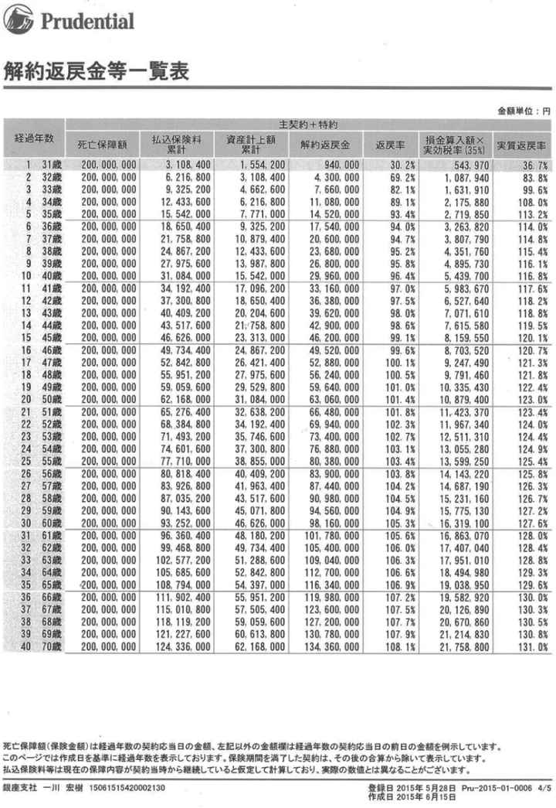
（３ ） 赤字決算を免れる術を持つことが出来る
企業にとって赤字決算というのは時に致命的です。事業を継続できるかどうかは血液である現金（キャッシュ）がうまくまわることが大切です。その源泉ともいえるのが銀行からの融資になります。そこが赤字決算ですとパッと止まってしまう可能性が高いため非常に注意が必要です。そこで登場するのが保険です。
半額損金保険の場 合、 ２千万円の払い込み保険料に対して半額の１千万円は貸借対象表（バランスシートＢ／Ｓ）の借り方で資産として計上さ れ、 残りの１千万円は簿外といって貸借対照表には乗ら ず、 損益計算書（Ｐ／Ｌ）に保険料として経費として載ることになります。
赤字の年であれば解約返戻金と相殺することで黒字化することも可能です し、 相殺した分については解約返戻金が課税されずに済みます。
たた ゙、 事業では数十年後まで読めないということもあるでしょうか ら、 契約の早い段階から解約返戻金が高率になる逓増定期保険を活用するケースが多いです。逓増定期保険と は、 ご契約 後、 保険期間満了までに保険金額が契約当初の金額から何と５倍まで増加する定期保険を言います。満期保険金がない掛け捨ての保険ですの で、 解約返戻率が契約後早い段階で高率になるもの の、 ピークを早い段階で迎え満期になると
何と解約返戻金はゼロ円になります。その代り万が一の際には支払われる保険金額が５倍にまで増加するというわけです。法人の場合は半額損金となります。
注 この早い段階で解約返戻金のピークを迎える保険を使 い、 簿外に資産をつくり赤字になってしまいそうなときに解約し赤字になることを防げるよう財務を強化 し、 また社長の退職金の準備として多く活用されています。
つまり節税しながら簿外に資産を構築しつ つ、 いざという時に簿外からお金を現実化させることができる魅力的な側面を持っています。
これら以外にも社長死亡時の事業保 障、 相続税支払のためのキャッシュが準備できるなど様々な用途を節税しながら準備出 来、 解約するときに赤字と相殺することが出来るなど企業のセーフティネット（防御網）として活用できますので良い保険のパートナーを見つけることはとても大事なことになってきます。私の最強の保険のパートナーたちも巻末でご紹介いたします。
このように個人事業主では出来なかった様々な節税しながら資産を構築することが法人では出来るようになります。そうやって攻めだけではなく守りもしっかりと行うことによって事業は健全に運営されるというわけです。経営が健全化され利益が上がるようになってきたら次に大事なのは社会貢献です。
注 被保険者の年齢や保険期間によ り、 損金として計算される割合は変わります。
（４）社会貢献
昨今では社会企業という言葉が世の中に浸透してきました。企業のサービスとは元々社会の顕在ニー ズ、 潜在ニーズを汲み取って製品化しサービスを創造していくものです。それで人々が喜んでくれればくれるほ ど、 会社の売上も上がるため大抵の企業が社会企業と言えるかと思います。ただ大事なのは方向性です。会社がうまくいくということは社会のおかげです。
そのため自分が起業する段階か ら、 なぜ自分は稼がなければならないのか や、 その先の成功することもしっかりと考 え、 利益の剰余金をどのようにして社会に還元していくのかをあらかじめ考えておくことです。
私の場合は事業や投資で稼いだお金の一部を教育のために還元させて頂いています。昨今では３００年かけてフィリピン大統領を貧民層から輩出し汚職や格差を無くすことを目的としたセブ島にあるDAREDEMO HERO（山中博さん代表） や、 オンラインの無料塾で教育格差を無くそうと奮闘しているmanavee（花房孟胤さん代表）を応援させて頂いています。
他にも生命にダイレクトにかかわる各種医療機関やホームレスの方の支援雑誌であるBIG ISSUEにも支援させて頂いています。 と、 言いますのも私自 身、 高校一年生の時にまともに学校も行かず事件ばかり起こし迷惑をか け、 生徒会の副会長もクビにな り、 高校の寮も退寮勧告を受 け、 職員会議では２人の先生を除き退学との意見が大半でした。それでも私を信じて守ってくれた２人の先 生、 棚橋康子先 生、 山口眞人先生がいらっしゃいました。彼らのおかげで私は道を大きく踏み外し反社会勢力の方向に行かなくて済みました。
ま た、 非常に内気だった私を解放してくれたのが小学 ５、 ６年生の時の担任の吉本一成先生でした。不登校の仲間のところにも一緒に足しげく通 い、 休日には釣りに連れて行ってく れ、 自由帳を毎日１ページ書いて提出する宿題では私に小説を書く才能があると褒めてくれ文章を書くことが好きにな り、 クラスの仲間たちとも話せるようにな り、 そこから今の明るい性格に変革していったことを今でも覚えています。
そして中学 ２、 ３年の時の担任の徳永雄一郎先生にもかなり可愛がって頂 き、 元からあった明るさの才能が開花したの か、 気づけば全校生徒の前でも堂々と喋れるようになっていました。
大学時代には池畠良先生から当 時、 広島大学学校教育学部へ文系で入学していた私でしたが数学の面白さを伝えて頂 き、 夏休みなども使って自主ゼミの開催に応えて下さ り、 文系からは初の北海道大学理学部数学科の大学院へ入学することが出来ました。ま た、 中村玄先生に師事し週に３回以上もゼミを開催して頂 き、 また黒田先輩には空いている時にゼミを開いて頂 き、 文系から来てしまっていたため空いていた数学の穴を埋める勉強を指導していただいていました。
後期の途中で大学を辞めてからは星屋さんに自己啓発やスヒピリチュアルの考え 方、 そしてたくさんの人をご紹介頂き今の自分の基礎を構築することで出来ました。
このように他にも挙げればキリがないほ ど、 本当にたくさんの方々のお世話になってきました。そしてそれは一様に教育という方法によって自分自身の可能性を開花させて頂いてきました。つま り、 教育とはその人が本来持っている可能性を開花させるものであ り、 この教育の格差を埋めることで人が夢を抱 き、 夢を叶 え、 夢を応援し合 う、 だからこそ差別もなくなりユートピアとしての地球の土台が出来ていくのではと考えるようになりました。
その教育に貢献したいと思 い、 どのようなものでも稼いだお金の一部は教育関連に寄付やサポート を、 国内外で積極的に行ってきました。
そしてこれが逆に稼ぐ理由ともな り、 事業や投資など現状に満足することなく上をめざし続け本気でやっていく礎となっています。
この目的をしっかりと起業の段階から持って突き進むことが出来れ ば、 その事業もうまくいく可能性が高いのではないかと思います。私たちが偉人たちから学ばなければならないことは「なぜそんなひどい状況になったのにも関わら ず、 その事業を辞めず成功まで導くことが出来たのか」です。「なぜやるのか」も大事ですが「なぜ止めないのか」も同様に大切です。
頂いた身体を大切に し、 自分の命を使って頂き世の中に貢献していく。そういった起業家を是非一緒になって目指していければと思っています。
次は会社 員、 公務員さんの稼ぎ 方、 資産構築の話に移っていきたいと思います。
私の周りではよくロバート・キヨサキの言うＳ（自営業者 ）、 Ｂ（ビジネスオーナー ）、 Ｉ（投資家）になりたいと言っ て、 「善は急げ 」、 いきなり会社を辞めて起業しようとする方々がいます。同様に学べるところは学んだからと会社をすぐに辞めて転職しようとする人々もいます。その場合は少し待って頂ければと思います。
第１章でお伝えした通 り、 あなたのお金とは口座残高がいくら残っているかということではありません。お金は信用です。あなたが会社で働き続けたことによってあなたには目には見えない信用が貯まっているということを忘れてはなりません。
所得が年間１千万円も超えるような会社であれば３ 年、 通常の会社や公務員であれば５年間以上もし働いておられたのであれば会社を辞められる前にはこの信用を使って不動産投資用物件を購入されることをお勧めいたします。
ここで間違って欲しくないのは投資用不動産であってご自身が住むマイホームではないことに気をつけてください。そのため決して住宅ローンではありません。あくまで投資用物件であることが大切です。
この銀行からの信用には所得は当然とし て、 勤続年数の方が非常に関わってきます。そのひとつの基準が通常は５年と言われています。その上で一 度、 良い不動産会社を探して不動産を紹介してもらい金融機関に観て頂くことで自分がどの程度投資用に借入出来るのかかが分かります。
ここでいうところの良い不動産会社と は 、
①
良い物件を紹介する力がある
②金融機関を紹介出来る
ということになります。私が物件を購入する際にお世話になっている不動産会社については本の最後の方に載せておきますのでご参考にして頂ければと思います。
では購入するとしてもどういった不動産を購入したら良いのでしょうか。
不動産と考えると通常お金持ちしか出来ないのではと考えてしまいます。でも何度もお伝えしましたよね？
お金持ち＝口座残高が多い
ではないことを。どれだけのお金を動かせるかが大切なのです。この場合は銀行からの借入を示します。ということ は、 良い物件かどうかのひとつの判断基準を分かりやすく言ってしまえ ば 、
良い物件＝銀行が９０％以上融資してくれるような物件
ということになります。ものによってはフルローンや手数料分まで含めたオーバーローンまで出来るような物件も稀にあります。ただしこれは不動産が優良であることと合わせ て、 あなた自身の属 性、 時代背景もあります。
そし て、 現在はとても借入がしやすい時代背景にあります。一部の銀行ではいくら貸したかによって評価されるような状況のところもあるようで大企業の従業員様宛にお金を借りてくれるよう直接電話営業も行っています。実 際、 私のパートナーの不動産会社が力があったことも理由のひとつです が、 これまで銀行から借入をやったことがな く、 初めてお付き合いする銀行さまからいきなり７億円融資しても良いと言って頂いたこと が、 不動産の方をじっくりと進めていくきっかけとなりました。大企業の従業員様ですと海外不動産でも良いからお金を借りてもらえるよう連絡が来た方 も、 私の周りの仲間ではおりました。しかしながら借入は比較的しやすいもの の、 円安ということもあり関東では海外の投資家の方々も含めライバルが多 く、 なかなか取得が難しい状況です。たくさんの買い手がつくということはその物件の価格も上昇してしまい割高といったことにもなりかねません。
実際アベノミクスがスタートした２０１２年から２０１５年は年間平均６％近くも東京２３区を中心とした主要な場所では値上がりしていると言われています。
なぜならここ数年アベノミクスと黒田バズーカによる異次緩和による円安と東京オリンピックが決まったことで世界からもいつも以上に注目され外国からの投資資金が集ま り、 物件価格や日本株価は上昇しています。株や資産価値が上昇していることでそれらを所有している資産家はより富 み、 現金しか資産を持っていない人たちはインフレによりその資産価値は落ちていく。まさに「２１世紀の資本論」のフランスの経済学者トマ・ピケティが言うところの二極化の原因です。
話を元に戻すと東京をはじめとして立地がよく知名度が高い地域の物件価格が上昇しているとはいうもの の、 世界を見渡してみると１千万人以上の人口がいるような都市では通 常、 不動産の利回りが１～２％程度しかありません。５％以上も平気である東京では海外投資家から魅力的に映るのでしょう。もちろんそれは１千万人以上もの人口がいるような都市では不動産価格は下がら ず、 むしろ上昇しているため結果的に利回りは小さくなるからです。
それに比べると東京の物件はまだまだ魅力的なものが多いた め、 今後も外国勢から買われていく可能性は高いと言えるでしょう。だからと言って不動産バブルといった状況ではな く、 あくまで立地と物件の状態によります。都心のように比較的緩やかに上昇しているものもあれ ば、 地方やその中でも駅から離れたような物件では価格は落ちているようなところもあります。このような物件は出口に困るため非常に慎重になる必要があります。ただ土地勘があれ ば、 駅から遠いものの中に も、 実はバス停が近かった り、 その地域が車社会であれば駅から遠くてもきちんと駐車場が完備していれば良かったりもします。
この状況は日本株と似ています。これだけ株高が騒がれている 中、 ２０１５年５月２７日時点で は、 東京証券取引 所、 １部上場銘柄のう ち、 株価純資産倍率（ＰＢＲ）が１倍に満たないものが４４％（８１６銘柄）もあるような状況です。ＰＢＲが１倍割れを起こしているということは時価総額が解散価値を下回っているということですの で、 イメージとして会社を解散させてその純資産を投資家に分配させると投資家が儲かるという意味です。そのため会社が不当に低く評価されており株価が不当に安すぎると考え株を買うタイミングとも言われています （注） 。
このように投資家たちがＰＢＲ１倍割れ銘柄の中から優良銘柄を探し出すよう に、 東京で十分に値上がりしたあとは他の近郊都市や地方の大都市の中で優良物件を探す動きが外国人投資家の間でも生まれてくる可能性があります。実際その動きは京都や大阪といった街の一部地域では既に見受けら れ、 私自身も２年後に広島駅直結になる物件（グランフロント）を取得しています。こちらの物件は帰省した際には私たちが滞在 し、 家族や仲間が使いたい時には無料で貸 し、 それ以外の時には１００平米以上ある大きめの部屋のため家具をしっかりと揃 え、 海外や日本各地の観光客の方々を対象に有料で貸出す予定です。
そして東京の恵比寿駅東口徒歩１分の物件では住所も良いた め、 空室になった際には通常の賃貸の募集と月額を１割弱値上げしてＳＯＨＯ可能にして個人事業主の 方、 小さい会社のオーナー様を中心としたオフィスとして活用して頂 き、 登記して頂けるようにしています。
このように都心や地方都市の主要駅の近辺といった立地が良いと空室率をグッと抑えられることはもちろんのこ と、 ホテルとして貸し出すことも出来ます し、 ＳＯＨＯとしても活用して頂けます し、 場合によっては年間２週間泊まれる権利といったものを販売するタイムシェアも行える可能性があります。もちろん土地勘かがあることが最も大切なことですので購入される前に入念に調べる必要があります。
以上のことをまとめる と、 どのような物件が良いのかというと
①
銀行から物件価格９０％以上でフルロー
ン、
オーバーローンがくめるものである
②
立地が良い
③
減価償却が取れ節税として活用できる
ということになります。③番目についてはまだお伝えしていません が、 第５原則のところで詳しく説明していきます。
ちなみに良い物件が見つかったけれど も、 借入枠がいっぱいなど で、 どうしてもお金が銀行から貸してもらえないという方もいて諦める方もいるかもしれませんがその場合は仲間たちとお金を出し合って購入するという方法もあります。私の友人でも仲間たちからお金を借入して物件を現金で取得した方もいらっしゃいます。家賃収入で仲間への返済に充て毎月不動産投資状況のレポートを出されています。
いずれにしましても必ずすぐに諦める癖をやめて何が何でも成功するという意志をしっかりと持って行動することが何事にも基本になってきます。
た だ、 こういったこともあなたに「信用」が無ければ何も成り立ちません。常に信用の貯金を仲間たちに対しても誠実に接することで貯めていくような生き方をすることがとても大切です。
注 ＰＢＲ１割れの意味
よくＰＢＲ１倍割れ銘柄は割安銘柄だから買いと安易に言われています
が、
そんな単純なものではありません。ＰＢＲが１倍に満たないということは「事業を行えば行うほど損失が膨らむ投資する価値のない銘柄」と投資家が評価しているということです。つま
り、
持っている純資産をその会社経営者がリスクに見合う分以上の利益を追加するようにうまく活用出来ておら
ず、
結
果、
会社の収益性が低すぎると評価しているということです。
第４原則 お金の稼ぎ方 トレード編
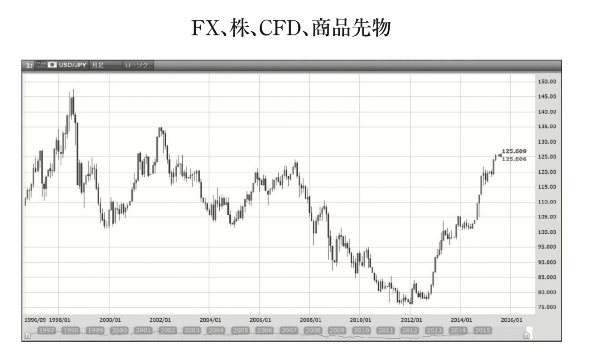
お金の稼ぎ方と考えると多くの人たちがまず最初に浮かぶのが事業で稼ぐ、会社で働くということではないでしょうか？そして次に浮かぶのが多いのがトレードではないかと思います。特に会社員をされている方ではＦＸ、株、ＣＦＤ、商品先物など、どれかをされている方は非常に多いのではないかと思います。
元々は２０１２年１１月に端を発するアベノミクススタートにより日本株は買われ、円安になりドル円も大きく上昇しました。そもそも２００７年のサブプライムショック、２００８年のリーマンショックによって日本株、ドル円ともに大きく下落しており、かなり割安な水準にありました。その下落の流れがアベノミクスにより反転し上昇に転じたことでニュースや新聞をにぎわし、多くの新米トレーダーたちがトレードの世界に参入してきました。
特に２０１４年１月からスタートしたＮＩＳＡ（少額投資非課税制度）によって取引口座を開設された方は非常に多く金融庁の調べによると２０１４年１２月末時点で８２５万３２７９口座にも上ります。参照ＵＲＬ（http://www.fsa.go.jp/policy/nisa/）
ＮＩＳＡとは証券会社や銀行、郵便局などの金融機関で、少額投資非課税口座（ＮＩＳＡ口座）を開設し、上場株式や株式投資信託、他にもＥＴＦ（上場投資信託）、ＲＥＩＴ（不動産投資信託）を購入すると、本来その利益に対して２０％課税される配当金や売買益等が非課税となる制度のことです。購入できる金額は年間１００万円までで、非課税期間は５年間のためトータル５００万円まで非課税で投資することが出来ます。アベノミクスがスタートし日経平均株価、ドル円が上昇し、それらを後押しするＮＩＳＡの制度が出来たおかげで多くの方がトレードの世界に参入してこられました。
しかしながらこの初心者がこの先トレードの世界で生き残っていけるかどうは非常に難しいかと思います。万有引力の法則で有名なニュートンにも次の有名な逸話があります。当時王立造幣局長官を務めていたニュートンはバブルの語源にもなったSouth Sea社の株で一時７千ポンド儲けたものの、その後の暴落で結果として２万ポンドの損害を被りました。その最中、South Sea社の株価の暴騰がいつまで続くのかという質問に対して、ニュートンはこう答えています。
I can calculate the movement of the stars, but not the madness of men
（私は天体の動きについては計算できるが、人々の狂気については計算出来ない）
基本的にトレードはそう簡単なものではありません。しかしながら活路が無いかというとそういうわけでもありません。ただひたすらに学び続けることです。
これは全て私が考えたわけではなく先人たちの膨大な知恵から学んだことがほとんどだと言っても過言ではありません。その先人たちの知恵と私自身の経験も含めて凝縮してまとめています。そして一部の考え方はトレードの世界に限らず全ての世界に通じる考え方でもあるかと思いますので是非ご活用頂ければと思います。
何か新しいことを始めようとした際に多くの人たちが最初に経験されるのが、「そんなのうまくいくわけがない」という余計なアドバイスです。あなたに、多くの人が失敗する起業やトレードに挑戦するのは無謀だと止めに入ります。そして失敗して欲しくないと必死に止めに入ります。しかしこれがなぜ余計なのでしょうか？
それはその友が本当にあなたのやろうとしていることを理解しておらず、寧ろ無知であることがほとんどだからです。起業やトレードをしたことも無い人からアドバイスを受けても正直それは余計と言わざるを得ません。
誰からアドバイスを聴くのかはとても大切なことです。例えば生まれながらに親や周りの人々から泳ぐことがどれほど危険なものなのかを叩き込まれてきた人は最早自分が泳ごうとしないばかりか、周りの泳ごうとしている仲間たちも必死で止めに入るのではないでしょうか？
でもあなたは灼熱の太陽の中、永遠とも思えるほどに弓状に広がった白浜のビーチと、その先に広がる限りなく透明に近いエメラルドグリーンの海に入ることを止めることは出来ますでしょうか？ それは海で泳ぐリスクをどれほど言われても、それを超える爽快感というリターンがあるのであれば行きたくなるものです。しかもその海で泳ぐリスクを語っている仲間が海に入ったことが無い人であるのであれば説得力もなく尚更海に飛び込みたくなります。
起業やトレートドについても同じことが言えるかと思います。大事なのは「自分がやろうとしていることで既に成功している人からのアドバイスを受ける」ことです。やったこともない人たちからの余計なアドバイスを真に受けているといつまでたっても進みません。
そしてリスクには「失敗するリスク」とは別にもっと大事な「チャンスをものに出来ないリスク」もあります。つまり成功できたものに気付いていたものの、最終的に手を出さないというリスクです。この後者のリスクについてあまりにも軽視されすぎているのが、この日本ではないでしょうか？
トレードの世界においてはこの無知は致命的なダメージにつながります。つまり株で言えば、どこまで下がってしまったら損切りするのかということです。損切り場所すらわからずにこの企業の株は大丈夫とずっと持ち続けていたら、いずれ資金を吹っ飛ばしてしまいます。なぜなら勝率１００％がトレードの世界に無い以上、いつか損切を出すことになります。そのため損切をおかないとうことは限りなく勝率は高くはなるものの、一度失敗してしまうと全資金を吹っ飛ばしてしまうことにつながります （注） 。
その為トレードする前にどこで損切りし、どこで利益確定するのかをしっかりと理解しておく必要があります。つまり市場やその投資商品について深い理解を持ち、自分自身の感情のコントロールまでしっかりとリスクコントロールしておくことが大切なことです。
注 通常、証券会社などで証拠金維持率というものが定められており、トレード資金がある一定割合を割り込んだら強制的に会社側から損切りされるようになっているためいきなりゼロ円になることはほとんどありません。しかしながらリーマンショックや天災など含め値が一気に飛んでしまうことで資金を吹っ飛ばしてしまうこともあるため、相場が荒れている時には休むも相場と言って手を出さないようにすることも大切なリスク管理のひとつです。
無知に関連して次の言葉を紹介したいと思います。通常相場の世界においては、「ひとつの籠に卵は盛るな」という有名な投資格言があります。これは分散投資を勧めるあまりにも有名な格言です。卵をひとつの籠に盛ってしまうと、それを落とすと全部の卵が割れてしまう。しかし複数の籠に分けて卵を盛っておけば、そのうちの一つの籠を落として卵が割れてしまったとしても他の籠の卵は影響を受けずに残すことが出来るということです。
つまりは特定の投資対象だけに投資をするのではなく、複数の投資対象に投資し、リスクを分散させた方が良いという教えを表しています。
しかしながら私の経験上そうは思えません。それには次の２つの理由があります。
①損切を置けば大ダメージは避けられる
そもそも籠を落としてしまう前の段階から損切をしっかりとおいておけば、大きなダメージを避けることが出来ますし、また次の投資に移る十分な資金も確保しておくことが出来ます。その判断基準はおおよそ投資資金の２％以下に損切を置くようにしておけばよいかと思います。１００万円の投資資金であれば一度の損切り２万円以下になるようにしておくという意味です。そのようにしておけば仮に損切にかかったとしても１００万円―２万円＝９８万円の投資資金で次の投資を行うことが出来るため、そこまで次のトレードに支障は無いと言えるのではないでしょうか？
②投資対象が絞り切れていない
ここが最も問題だと思いますが、そもそもどの投資対象が最も今投資すべきなのかの判断が出来ていないということを意味しています。しっかりと学ぶことによって今最も投資すべき対象に集中的に投資をすることが出来ます。厳しい言い方をすれば「分散投資とは無知の表れ」ということも出来るかもしれません。証券会社、銀行側からすれば、投資信託などより多くの投資対象に投資をしてもらうことは、その分信託報酬といった手数料を取ることが出来るため良いかもしれません。
例として、２０１５年１月のスイスショックによってたったの１日の１トレードで３千万円以上利益を出しましたが、それは次のような考えから導かれた結果でした。
ヨーロッパ中央銀行ＥＣＢによる量的緩和によるユーロ通貨安政策に対してスイス１か国が対抗しＥＵＲ／ＣＨＦが１・２の下限を守ることができる訳がない （注） というファンダメンタル分析と、私のトレード手法において月足でＣＨＦ／ＪＰＹ（スイスフラン／円）が最も重要な買いサインを示しており、サインが重なっていたことで積極的に投資をし、大きなリターンを上げることが出来ました。
ひとつの籠に卵が盛れるほど、投資対象について勉強をし、適切な場所に損切を置くことでリスクよりも大きなリターンをあげられるよう日々研究をすることです。
注 ＥＵＲ／ＣＨＦが１・２の下限を守ることができる訳がない
スイスは観光立国であることから自国通貨が高くなることをとても嫌っています。実際最も観光客が訪れるＥＵ諸国の通貨ユーロに対してはとても敏感です。事実ＥＵＲ／ＣＨＦの下限を１・２とするためにも無制限に為替介入するとスイス中銀は宣言しておりました。つまり、スイスフランの１・２倍以上の価格にユーロがおかれるようにと定めてありました。しかしながらユーロが本格的な量的緩和をスタートさせたことによりユーロ通貨は下落することになり、ヨーロッパのほぼ全体で取り組んでいる量的緩和によるユーロ安誘導に対して、スイス１か国が対抗することは不可能ではないかと考えました。事実この時ＥＵＲ／ＣＨＦのチャートも強烈な売りサインが出ていました。
しかしながら多くの人たちは１・２を割るはずがないと言って１・２近辺まで来るとＥＵＲ／ＣＨＦを買うという動きをしていました。そして運命の１月１５日に突如スイス中銀はこの無制限為替介入する方針を撤廃しスイスフランが強烈に上昇し、ＥＵＲ／ＣＨＦは暴落しました。
このようにファンダメンタル分析とテクニカル分析をしっかりと双方から行っておくことが、ひとつの籠に卵を盛る集中投資には欠かせないことです。
歴史を繰り返すという言葉はお聞きになったことがあるかもしれません。古代ローマの歴史家で『アレクサンドロス大王伝』の著作で有名なクルティウス・ルフス（Curtius Rufus）の言葉です。１世紀頃の歴史家と言われていますので約２０００年前から伝えられている言葉ということになります。事実先ほど出てきたSouth Sea社から端を発するバブル相場は、オランダのチューリップバブルから、高度経済成長期の日本の不動産バブル、昨今では世界中のＩＴバブル、携帯ゲーム会社バブルなど枚挙に暇がありません。世の中のルールがいくら変わったとしても、それを作っている人間の本質は変わらないため、過去にあったことは、また後の時代にも繰り返し起きていきます。
トレードの世界を見ているとまさに「歴史は繰り返す」ことを実感します。過去のこれまでのチャートを観ていると上昇相場もあれば、下落相場もあり、その中に似たようなチャートの形は繰り返し何度も出てきます。そのためトレードをするために最初にやるべきことは過去のチャート（テクニカル）と出来事（ファンダメンタル）の検証からです。
過去何度も出てきているパターンを検証し見つけることが、トレードの売買ルールを構築することにつながります。そしてチャートのパターンと同様にバブル相場からの崩壊相場を観ると過去本当に何度も同じ失敗が繰り返されてきています。
各国、対策を取るものの結局はバブルが弾けて一気に株価はじめ資産価値が暴落することになり、そしてそこがとても大切な次の買い場になっています。２０１５年６月現在、債権王と呼ばれているビル・グロス氏も指摘し始めていますが中国株がここ２年特にバブルの様相を呈しており、近い将来このバブルが弾けた際には相当強い暴落相場になる可能性があるため目を光らせています。
このバブルの崩壊のように同じ過ちの歴史を繰り返しているという意味では「人は歴史から学ばない」とも言えるのかもしれません。でも逆にこの「歴史は繰り返す」ということをしっかりと認識し理解していれば、次に同じパターンが現れた時はトレードで大きく稼げるチャンスとなります。これが本当のトレードの醍醐味です。
新聞で株が上がりまくっているという記事を見たからといって、焦って買ったというのでは話になりません。ではどういう時にトレード、投資を始めるのが良いのでしょうか。このことについて次にお伝えしていきたいと思います。
ほとんどの方にとってトレードを始めるきっかけになるのは、相場が好景気になった時なのではないでしょうか。最近で言えばアベノミクスや日銀による異次元緩和などが分かりやすい例かと思います。
しかし、過去の相場を観る限り、真にエントリーすべきタイミングはそこではありません。暴落相場後の落ち込んで底値でくすぶっている時です。事実私が株取引を本格的に始めたのは２００８年のリーマンショック後の２０１０年と、２０１１年の東日本大震災の時からです。東日本大震災の時、私は偶然にも著書『出稼げば大富豪』、映画『神様はバリにいる』のモデルにもなったバリの兄貴として有名な丸尾孝俊さんのご自宅に２週間ほど滞在している最中でした。
大震災のことをニュースで知った私はすぐにドル円のトレードをし、株の仕込み準備に入りました。そして、そこで上がった利益の一部は当時のトレード仲間たちとともに寄付させて頂きました。
では当時取引していた株の例を使ってご紹介します。まずは東京電力です。
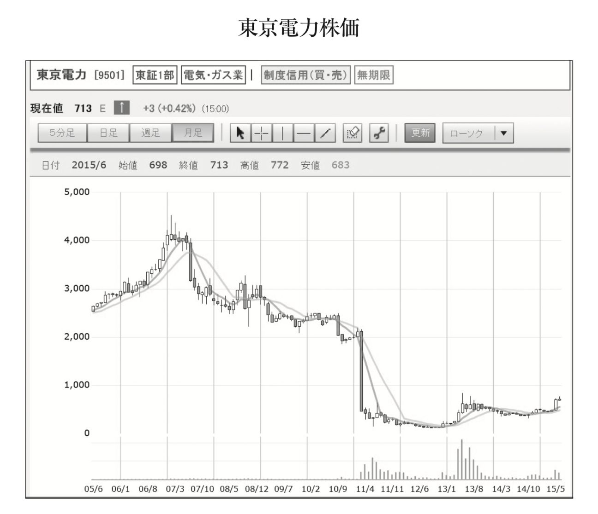
元々、２千円台で推移していた東京電力でしたが震災の影響で一気に値を落とし１００円割れまで値が崩れ落ちました。その後１００円前後で長く値がもみ合うことになり、その後徐々に値を戻してきています。
この時に拾っていれば既に７倍以上になっていることが分かります。もちろんこういった場合は上場廃止になるリスクもありますが、原子力損害償・廃炉等支援機構が１兆円を出資したことにより、東京電力は実質国有化となり国が全面的にバックアップすることなどから、そのリスクは低いと判断することが出来ました。同様に当時は配当利回りが４％を超えていたカッシーナがあります。
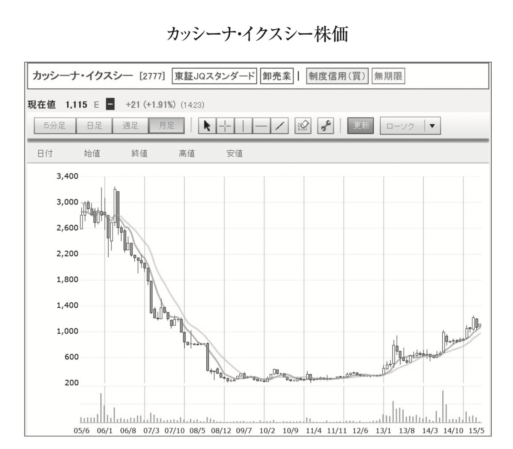
２００６年にピークをつけた高級家具カッシーナはサブプライムショック、リーマンショックによる世界的不景気のあおりを受け、どんどん業績は悪化し株価も下落の一途をたどっていました。そんな中、アベノミクスがスタートし株価が上昇していく中、株式資産を大量に持つ富裕者層の懐事情が真っ先に回復してくると考えられました。そうなるとすれば高級家具は売れるのではないかと考え底値でくすぶって揉み合っていたカッシーナを買っていきました。２００円強の株価だったものが現在では約５倍の値になっています。
この２つのように底値で張り付いているものの中にはとても面白い銘柄が眠っていることが多々あります。そして総じてその時は最悪の評価を受けているものです。皆が手を出したがらない時に、しっかりと見極められればこのように大きなリターンを上げることが出来ます。過去の話ばかりだけでなく今チェックしているものを観ていくと２０１５年６月現在チャートの形がアイフルは非常に面白いと感じています。
底値にぴたっと張り付いている状況で今少し首を持ち上げてきたかなといった状況です。テクニカル的には非常に好きな形ですが、ファンダメンタル的に観てみると、元々貸金業者のこの暴落は過払い金請求問題が大きかったです。
最高裁が過払い金の返還請求を全面的に認めたのが２００６年。そして貸金業法の改正が決まったのが２００７年です。実際チャートを観てみますと２００６年に入ってピークを付けた後は暴落が続きました。となるとこの過払い金問題はいつ頃清算されるのかと考えてみると、過払い金の時効が１０年ですので、おおよそ２０１７年頃までにほぼ全ての過払い金が時効を迎えることになります。
となると元々景気が回復してくれば上ってくるのが貸金業者であることは歴史が証明しています。また現在でも２０１５年ＡＳＥＡＮ最大の経済成長をすると言われているフィリピンでも貸金業は非常に隆盛を誇っています。日本もこのまま順調に賃金がアップし景気が回復してくるのであればアイフルのような貸金業者もまた息を吹き返してくるのではと考えています。
過払い金請求問題の参照ＵＲＬ（http://saimu4.com/kabarai/4288/）
もちろん１００％ということはありえませんが、歴史からヒントを得つつ、現在の相場に取り組んでいくことが、トレード強いては投資全般において成功するためにはとても大切なことになります。
これまでは株のことを中心にお話してきましたが、ここでは特にＦＸを中心に話してみたいと思います。前節で歴史は繰り返すということについて述べてきましたが、まさにＦＸトレードで稼ぐために必要な基本事項をお伝えいたします。
①緩和
まず緩和ですがこれは何度もこの本の中でも既に出てきていますが、日銀のサイトを引用させてもらうと、
「量的・質的金融緩和」
とは、日本銀行が２０１３年（平成２５年）４月４日に導入した政策です。日本銀行は、消費者物価の前年比上昇率２％の「物価安定の目標」を、２年程度の期間を念頭に置いて、できるだけ早期に実現するため、マネタリーベースおよび長期国債・ＥＴＦの保有額を２年間で２倍に拡大し、長期国債買入れの平均残存期間を２倍以上に延長するなど、量・質ともに次元の違う金融緩和を実施しています。
参照ＵＲＬ（https://www.boj.or.jp/announcements/education/oshiete/seisaku/b27.htm/）
とありますが何のこっちゃ分からないという方も正直いらっしゃるかと思います。
イメージとしましては世の中にたくさんの日本円を出回らせることで、円安の方向に持っていき、２％の物価上昇率を達成するということです。たくさんお金が出回るほどそのお金の価値は下がるという理屈です。
この理屈を理解することよりもトレーダーとしてもっと大事なことは、
「緩和＝通貨安、株高」
ということです。実際リーマンショック後にバーナンキＦＲＢ議長による緩和政策によって大きくドル安になり、ニューヨークダウの株価は大きく上昇しました。
同様に日本も黒田日銀総裁主導のもと異次元の緩和と称し進めた結果、日経平均は大幅に上昇し、円安になりました。
そして２０１４年末からはヨーロッパ中央銀行が緩和政策を始め、ユーロの下落が加速し欧州株は上昇しています。
正直、この緩和政策の出口はどうなるかまだハッキリとはわからないものの、歴史をみると、
「緩和＝通貨安、株高」
ということは言えるため積極的にトレードで狙っていきやすいものになります。
特にドルの方は緩和を終了し、円は継続、ユーロはスタートということですのでユーロドルの下落、ドル円の上昇というのは分かりやすい構図かと思います。
②金利 キャリートレード
次に金利ですが、元々ＦＸにトレーダーが殺到したのは２０１２年のアベノミクスの時よりも前の２００５年前後でした。この頃は何が起きていたのかと言いますと、日本が頑なにゼロ金利を維持していた中、アメリカもヨーロッパもオーストラリアもニュージーランドもどこもかしこも先進国は金利を上げているような状況でした。
そのため安い金利の国の通貨を売って、高い金利の国の通貨を買うというトレードが盛んになっていました。具体的には日本円を売って、ドル、ユーロ、ポンド、豪ドル、カナダドル、スイスフラン、ニュージーランドドルが買われるトレードが盛んでした。通貨の値上がり益だけではなくスワップ金利と言うものがドル円などのポジションを保有していると付いてきましたので、皆長期トレードで長く保有しており数年間に渡りポジションを持っているという方がたくさんいらっしゃいました。
そして物凄く大きな含み益があったものの、結局勉強していないと必ずくるのがしっぺ返し。サブプライムショックとリーマンショックが立て続けに起こり数年間貯めてきた利益が１か月もしないうちに吹っ飛んでしまったという方もたくさんいらっしゃいました。
私の周りでも数百万円から１０億円以上の利益を出していたのにも関わらず結局損失で終わった方や、逆にたったの１か月ちょっとで１０万円を１億円以上にした方もいました。それほどに相場は動くときはとことん動くため、過去の歴史からしっかりと値動きやファンダメンタルについて学んでおくことで、未来に起こりうる値動きの想定を立てておきしっかりと防御しつつ大きな利益を狙っていくことが出来るというわけです。
日本はこれまで約２０年もの間、物価が下落するデフレ下にありました。そのため貯蓄をしていればその現金の価値は上がるような状況にありましたが、これからはその動きが逆転し物価が上昇するインフレの方向に向かっていくことを安倍政権ではしきりに国民に宣言しています。これまでのデフレと全く違う動きになる為、インフレに備えておく必要があるのではないかと思います。
変化とはチャンスであり危機でもあります。変化とは経済の世界においては「富の移動と構築」を意味します。変化の時では、これまでと同じやり方を行っていると通常、経済的に貧しくなってしまいます。なぜならば経済の世界におけるルールが変わるため、これまでと同じやり方は通じなくなっているからです。逆に変化に先んじて対策を取っていた方たちにとっては資産を構築できる又とないチャンスともなりえます。
では日本におけるデフレからインフレへの変化に対してどのように対策しモノにしていけば良いのでしょうか。
私が行っているインフレ対策についてシェアしたいと思います。私の想定としてはインフレ率２％に対して資産を守らなければならないという前提に立って資産を構築しています。
インフレと言っても状況は多種多様に考えられます。私が２０１５年の段階で今後想定しているインフレの状況とは、「円安」、「景気回復」、「人口減少」、「増税」の元におけるものです。
これらを鑑みたうえでどのように構築してきたのかと言いますと、「円安」、日本より先んじたアメリカの「景気回復」と「人口増加」を活用するためにアメリカ不動産を購入しました。更に２２年以上経っている木造で状態が極めて良い不動産をドル円が９０円台の時にドル建てで購入し４年の減価償却によって大幅な節税を図っています。これについては詳しくは次の第５原則の５―２のところで説明しますが、これだけでたったの３年弱で日本円ベースで投資額の倍額以上のリターンを得ることに成功しています。
また４つ全てのことを考えて日本の一等地である東京の恵比寿と秋葉原にマンションを購入しました。このエリアの人口は減少しておらず寧ろ増えているエリアであり、増税前の駆け込み需要で更に値段が上昇することが見込まれるからです。実際、過去１９８９年に消費税は３％引き上げられ、１９９７年に５％へと増税されましたが、どちらの時も駆け込み需要が起きましたが特に不動産をはじめとした高額のものが大きく買われていたのが特徴としてありました。そして歴史は繰り返しました。
２０１４年４月に８％増税された際には日本の特に都心の物件には物凄い買いが集まり値段は一気に上昇していきました。更に２０１７年１０月に１０％へと増税が決まっていることと、東京オリンピックが２０２０年に開催されるため、少なくとも２０１７年までは下がりにくく、寧ろ大きく上昇する可能性が高いのではと感じています。
更に良いことに円安によって東京の一等地は海外の投資家が購入してくれるエリアでもありますので非常に価格が上昇しやすいエリアでもあります。更に日本のワンルームであれば土地が無いために一軒家とは異なり （注） 、古い物件でも建物に対する評価が付くため減価償却によって節税も行うことが出来ます。
また景気が良くなることを見越してのインフレ（期待インフレ）であれば、景気の先行指標である株価は最も敏感に反応するため円安に強い自動車関連株などはまさに鉄板と言えるのではないでしょうか。大事なのは今回とらえられなかったとしても長い人生のうちで少なくとも４、５回は同じような状況を経験するでしょうし、日本だけに限らず世界に目を向けることが出来ればその回数は大きく膨れ上がります。その意味でもインターネットが出来たタイミングに生を受けたことに感謝をしこの有効性、つまりグローバルに物事を進められるこの力を最大限活用していくことこそが、資産構築にとって必要不可欠となるのではないでしょうか。
またひとつ追記しておくと不況下におけるインフレ対策には金（ＧＯＬＤ）の購入を考え、好景気下もしくはそれを期待する中でのインフレ対策としては株や不動産などが良いのではないでしょうか。
注 基本的に古い一軒家だと建物の評価は大きく下がり、ほとんどが土地代となってしまいます。しかしながら土地は減価償却されず節税に使えないため注意が必要です。
先ほどもお伝えした通り経済の世界においては変化とは富の移動であり構築であることを意味しています。ではこの変化をどのようにとらえていけば良いのかについてお話したいと思います。
大きく資産を構築する際には大きな変化を捉える必要がありますが、ではそもそも大きな変化とはどういったことを指すのでしょうか？それは「国の政策の変化」を指します。基礎的なものとして次の４つをおさえておくことが重要です。
①金利の変化
②金融緩和
③天災
④人のゆく裏に道あり
花の山
ひとつずつ観ていきましょう。
①金利の変化
実際キャリートレードの時には先進国が金利を低金利で維持しているところから変化し金利を上昇させていったことで、ゼロ金利を維持していた日本円が売られて（キャリーされて）外貨が買われ空前のＦＸブームが起きました。
そしてこの上がっていた各国の金利も２００８年のリーマンショックによって一気に金利が下落し、大きくドル円、クロス円（ユーロ円、ポンド円、豪ドル円などドル円以外の円関連ポジションのこと）は大きく売り込まれました。ただ注意が必要なのはあくまで先進国の通貨であることが大切です。なぜなら新興国の場合は金利を高くしておかないと外資や銀行への資金を集められないという事情があるからです。そのため高金利だからと言ってその通貨が上昇するとは一概には言えません。
分かりやすい例がロシアルーブルです。ロシアルーブルの急落を止めるために２０１４年１２月１６日にその日のうちに１０・５％から１７％まで金利を引き上げたことがあります。これは経済制裁、ウクライナ問題、クリミア問題とありとあらゆる困難が重なりロシアルーブルが売り込まれたことによる防御策でした。
またトルコリラのような変わった例もあります。２０１５年３月１１日バシュチュ中央銀行総裁とエルドアン首相は会談し、中央銀行側は６月選挙を控えインフレが高止まりしているため利上げ維持を主張しました。それにもかかわらず大統領が中銀に大幅な利下げを迫ったことで、トルコリラは対ドルで過去最安値まで売り込まれる事態となりました。
このように新興国の通貨は極めて不安定なため金利が高いからと言って安易に買うと痛い目にあいます。
②金融緩和
こちらもこれまで述べてきたとおりです。アメリカがリーマンショック後にバーナンキＦＲＢ議長主導で行った緩和政策により、アメリカ株高、ドル安となり、日本では黒田日技総裁主導の元行った異次元緩和策で日本株高、円安となり、ドラギＥＣＢ総裁の元行った緩和策でユーロ安、ヨーロッパ株高へと繋がっています。
③天災
これまで、世界中で数えきれないほどの天災が起こってきました。その天災はひとつの重要な事実を伝えています。トレードの世界において「天災はトレンドを作らない」ということです。どんなに大きな天災が来たとしても、一瞬は平均株価など大きく落ち込むものの、その後に起こる復興需要があることと、こういった危機的状況の中では良い銘柄もつられてまとめて売り込まれるため、トレードの世界においてはバーゲンセールのように良い買い場を作ってくれるということを覚えておいてください。
相場格言に、「人のゆく裏に道あり 花の山」というものがあります。皆がもうダメだと思っていたら実はそこが大変重要な買い場であったり、２０１５年で言えば多くの証券会社が高金利ということでトルコリラの取り扱いを始めて皆が一様に買い始めた時にエルドアン首相の発言と利下げによって大きく売り込まれて対ドルで過去最安値を更新したりするものです。
④人のゆく裏に道あり 花の山
私にとってこの典型例がロシア投資でした。私は投資仲間たちと共に２０１４年の１０月にロシア視察に行きました。それはなぜかというとクリミア問題、ウクライナ問題が重なり、また経済制裁も世界中から受けているということで、実際どのような状況にロシアがなっているのかということでロシアの大企業、中央銀行、証券会社などありとあらゆるところへ視察に行きました。
その時に感じたのはロシア経済は思っている以上にしっかりとしているということでした。実際天然ガス、石油をはじめとしたエネルギーをヨーロッパはロシアに依存している状況でした。この当時は原油価格も暴落していましたが、オイル関連企業最大手のロスネフチに至っては採掘コストが１バレル当たりたったの３ドルしかないことを知り少々の下落くらいでは潰れないのではと感じました。更にロシア投資に確信を持つにいたったのはほとんどの上場企業がほぼ借り入れをしていないということです。事実上場した企業で上場廃止になった企業は何と一社もないという状況でした。
またロシアでは軍事費も増強しており「世界の警察を辞める」とオバマ大統領が発言したアメリカとは対照的です。実際、中東から撤兵したところに今入っているのがロシア軍になり、エネルギーを確保しています。もちろんアメリカが中東から軍を引いた原因はアメリカ国内で膨大な量のシェールガス、シェールオイルの資源が見つかったことと無関係ではないでしょう。ニュースでは原油価格の下落によってロシアが大ダメージを受けているかのような報道がなされていましたが、実際はシェールガス発掘コストが見合わなくなり多くの会社が運営不能になったことはあまり報道されませんでした。常に今何が起きているのかをしっかりと見極めながら投資に活かしていくことはとても大事なことです。皆が言っている状況、思っている状況と実際が異なるのであればそこは大きな投資のチャンスになります。
そこで為替の状況も見極めながら２０１５年の１月に思い切ってロシアの株に今では代表とも仲良くさせて頂いてるＳＰＲＩＮＧ社を通して買っていきました。そして結果的に４か月弱で４０％もの上昇を享受することが出来ました。このまま３００％上昇を狙って私は観ています。２０１５年１２月に経済制裁が延長されるかどうかが決まりますが、延長するためには経済制裁している国が全て延長に賛成をしないといけないため、もしかするとここで経済制裁が解かれる可能性もあると観ています。そのため更に買い増しをしたいので８月にはもう一度ロシア、ウクライナに行くことを企画しています。
ちなみにロシアが落ち込んでいる状況でたくさんの投資家が世界から視察に来られたようですが実際に投資したのはノルウェーの中央銀行と私だけだったそうです。
第４原則の最後にトレードの世界についてちょっとだけ触れて終えていきたいと思います。キーワードはこの３つになります。
①トレンド
②抵抗帯
③期間
特に①、②はとても大切です。まず相場において１番大事なポイントについて解説していきます。
トレードにおいてまず判断しなければならないのは、その銘柄や通貨ペアを「買う」のか「売る」のかどちらを選択するのかということです。それが決まらなければエントリー自体が出来ません。ではどのように「売り」、「買い」を見極めるのか。
その答えは「トレンド」を読むことです。
「上昇トレンドであれば買い」
「下落トレンドであれば売り」
これが基本になります。そして、仮に上昇トレンドの場合、次はどのポイントで実際に買うのかが問題になります。それを見極めるポイントとなるのが抵抗帯です。
つまり、「どこでこのチャートは一旦下げ止まることになるのか」ということです。そして実際にエントリーし、ポジションを持った場合、その後、決済（利益確定か損切り）する際に必要になってくるのも抵抗帯になります。上げ止まる（レジスタンス）、下げ止まる（サポート）可能性が高い抵抗帯をあらかじめおさえておくことで、
「利益確定はレジスタンスの下側」
「損切りはサポートラインの下側」
に置くことが出来ます。
ロウソク足を観ると、チャートをご覧になるとおわかりの通り、過去同じような場所で高値、安値となっており、その後も抵抗帯として機能していることが分かります。そのため現在豪ドル円が上昇しているところですが次の高値の１０５・４２７円を超えられるかどうかが大きな鍵となっていることが分かります。
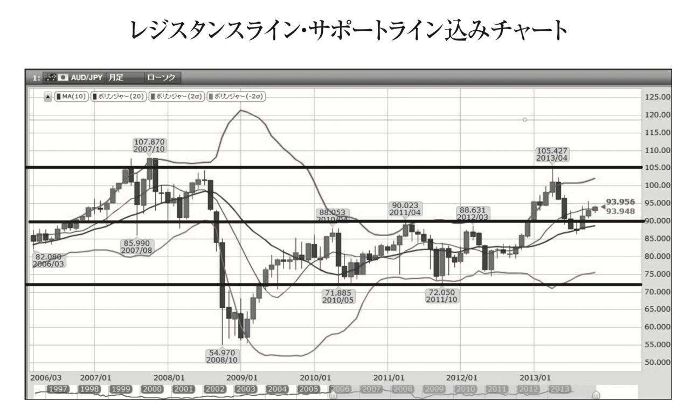
利益確定に関しては「レジスタンスライン近辺でロウソク足がもみあい状態でそこから上抜ける可能性が高いと考えれば、その次のレジスタンスラインに移動させ、最初のレジスタンス
ラインを抜けたところで買い増しをする（ピラミッディング）こと大勝を狙っていく」という方法もあります。
いずれにしましても抵抗帯は売買の仕掛けをするポイントになるということです。まとめると、「トレンドと抵抗帯」さえ分かればエントリーから決済まですべて決定出来るということです。もっと言えば、世に出回っている全てのトレードの本に書いてあるテクニカルツールや手法に関しましては、ほとんどがこの２つ、トレンドを読むか抵抗帯を探るかのどちらかに分類されることになります。私の場合はトレンドと抵抗帯を読むために移動平均線を中心にボリンジャーバンドなどな様々なツールを組み合わせて活用していますが、より詳しいことにご興味おありの方は私が主催しております日本最大規模の投資コミュニティ、ミリオネアカデミーにお問い合わせ下さい。
最後の③、期間ですが相場は上昇トレンドと下落トレンドを繰り返しながらチャートを形成していきます。そこで気になるのは今の上昇、下落はいつまで続くのか、そして次の上昇下落の波はいつ来るのかということです。有名なのはフィボナッチ数というものを使った分析手法になりますが、この期間分析手法に関してはどれも誤差が大きくバシッとはまることはあまり無いため、上記の移動平均線やボリンジャーバンドの売買サインとフィボナッチ分析が重なったところ以外ではあまり有効活用出来ないというのが現状です。
そのため大事なのは全ての相場分析手法はトレンド、抵抗帯、期間を観るためにあるということだけをまずはおさえておいて頂ければと思います。
私自身トレードを始めたのが２３歳の頃で現在３４歳のため約１２年間やってきたことになります。その間に実に様々なトレーダーさんたちを見てきました。一瞬だけ成功してすぐに消えていく人もいれば成功し続けている方もいらっしゃいます。その違いは一体何なのでしょうか？ それは私が観ている限りこの一点につきます。
トレードで稼いだお金を全てトレードにつぎ込むわけではなく、一部か大部分を資産構築につぎ込みキャッシュフローを作っているということです。しかもそれが節税しながらであれば尚良いです。同じ六本木ヒルズの先輩にもＩＴバブルの際に３千万円の元手を株式投資で１１億まで拡大させることに成功され、その１１億を元手に株式投資をやったもののＩＴバブルが弾けてから思うような成果が出なかったため、一部だけ残して他は不動産に変えられました。そのキャッシュフローでヒルズに自宅を置きながら毎年世界２周されているとてもユニークな方です。また有名なところで言えば、ジョン・テイラー氏が１９８１年に創業したヘッジファンドＦＸコンセプツはピーク時には１４０億ドル超の資産を運用し世界最大のファンドの１つであったものの投資管理事業から結果的には大きな損失を出し撤退してしまいました。
こういった例は本当に星の数ほどと言っても良いくらいたくさんあります。そのため私はトレードを始めた時から徹底しているのは稼いだら、一部を元手に銀行の借り入れのレバレッジも活用しつつ節税しながら不動産を中心に資産構築をしてきています。投資で大事なことはトレードとは違い攻めではなくヘッジ、つまり資産を守ることが最も大事だからです。そして余剰資金を活用して様々な教育機関に寄付させて頂いています。生き残っている方々をみてきた感想は、まずキャッシュフローを生む資産を構築し、世の中のためになることに寄付をしている方が実に多いということです。自分の人生経験だけでしか学部ことかが出来ないのであれば、今世で成功するには時間が足りなくなります。先人や先輩たちの行動からどのようにしたら生き残れるのかをしっかりと学び実践していくことで、今の自分を形作れましたのでとても感謝しています。次はこの本などを通して後輩や後世の方々に学んだことを伝えていければと思っています。
第５原則 お金の守り方 資産構築の５つのステップ
いよいよ本格的な資産構築についてお話しています。多くの人たちはまずはお金持ちになりたい、億万長者になりたいという思いを持って一心不乱に努力して行動を起こしていきます。そしてその稼ぐ理由かが自分のためだけではなく、家族の借金を返したい、苦労をかけている家族を楽にさせてあげたい、恋人の病気を治したい、地域復興、国の教育、世界の貧困、後世のため寄付したいなど、その思いが深ければ深いほど成功率は上がるものの、実はそこには落とし穴があります。それは税金です。
私たちは生活していく中で実に多種多様な支出を行っています。食費、家賃、レジャー交際費、など高額なものは多々ありますが、実はその中で最も大きい支出が税金であることに気付いている人はどれほどいらっしゃいますでしょうか？
外食すれば消費税がかかりますし、自宅で作る場合もお野菜、お肉、お魚など全てに税金がかかっており、自宅を購入すればマイホームといいながらも住宅の取得税や毎年の固定資産税を国に納めています。そして何より一番大きい税金は所得税です。累進課税と言いまして稼げば稼ぐほどその税率は上昇し年収が１，８００万円を超えた分に関しましては４０％、平成２７年からは４千万円を超える部分に関しましては４５％にもなりますので住民税の１０％と合わせると最大で合わせて５５％にも上ります （注） 。前述の通り９００万円を超えてきますと税率が法人税の方が安くなりますので個人事業主から法人成りするひとつのタイミングであることは述べてきましたが、会社勤めの方ですと、会社の給与を法人にするわけにはいきませんので会社で出世し稼げば稼ぐほどとんでも無い額の税金をお支払いすることになります。
そして保険のところでも述べましたが法人の社長様や役員様であれば小規模企業共済や、経営セーフティネット、生命保険を活用し節税しながら資産を構築することが可能でしたが会社勤めの方ですと大きく節税出来るものに制限がかかってきます。にもかかわらず最も税率が高くなってしまうのも会社員の方ですのでしっかりと節税しながら資産構築する方法について学ぶ必要があります。
そもそもですが、ご自身がいくら給与の中から税金を支払っているのか知らないという方ももしかすると多いのではないでしょうか。
そのためにまずは一度後自身の給与明細をご覧になってみてください。そこに源泉徴収という文字が見えるかと思います。何と給与の中からあらかじめ源泉徴収という形で引かれてお支払いされています。海外ではアメリカのようにご自身の税金を計算して毎年お支払いしているケースがほとんどで、そのため節税ということに対して意識の高い方も日本人よりは圧倒的に多いです。
この源泉徴収とは日本独自の制度でもあり元々は第２次世界大戦の際、戦費調達のために導入された制度で現在も脱税を防ぐことと、税金の支払いの簡素化を図るという名目で残っています。しかしながら、このせいであまりご自身がお支払になっている税金のことについて知らないという金融に対する理解能力（金融リテラシー）の低下を招いているひとつの原因かと思います。
この金融リテラシーを上げることがとても大切です。基本は節税しながらキャッシュフローを生んだり、価格が上昇したりしていくような資産を構築していくということです。
この第５原則では税金の中でも節税についてもっと理解を深め、それを応用することで実質の手取りの給料を引き上げ、また他からの収入も作っていくような方法について５つのステップで順を追ってお話していきたいと思います。
注 累進課税
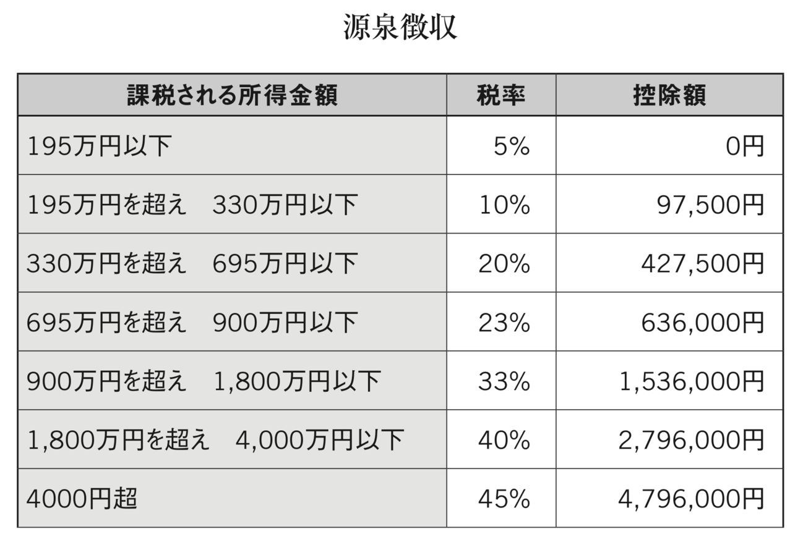
平成２７年から４千万円超の部分が追加されました。以下国税庁のＨＰからです。
参考ＵＲＬ（https://www.nta.go.jp/taxanswer/shotoku/2260.htm）
まず会社員の方々にお勧めしたいのが不動産を購入されることです。
しかし不動産を購入するにも実は順番が大切なのです。よくお医者さんをはじめとした高額所得者の方は不動産を購入する際に、ワンルームなどの小さなものではなくいきなり１億円を優に超えるような一棟物を購入されたりするケースがよく見受けられます。私の考えではこれは完全にＮＯです。なぜなら一棟物は黒字物件で所得が上乗せされ高い税率を取られてしまうからです。それに対してワンルームマンションは赤字物件になるため利回りには表れない大きな節税効果が見込めます。そのため一見利回りは小さく見えても実質の利回りはそれよりも大きくなるということが多々あります。
例として元々お医者さんの給与が２千万円だった場合、一棟物の黒字物件で月に１００万円キャッシュフローが出るものを購入したとします。（金利分などの経費は既にひかれたものとします）この場合給与が２千万円と既に１，８００万円を超えているため最高税率が適用され住民税含め５０％もの税金がかかってしまいます。そのため１００万円のキャッシュフローのうち半分が税金として納めることになりますで、年間１，２００万円のキャッシュフローのうち何と６００万円もの収入が減ることになり、実際の利回りは半減してしまうことになってしまいます。これを順番を変えてからワンルームの赤字物件を購入した後に、同じ一棟物を購入したとするとどのようになるでしょうか？最初に主要な駅前などのワンルームの物件を２つほど購入し、その年に５００万円相当の赤字を作れたとします。すると、２千万円の収入から赤字を相殺し１，５００万円の年収になります。この時点で所得税が約２２０万円ほど安くなりますのでその分年収が増えた計算になります。しかも良い立地の優良物件であれば銀行からフルローンすることも場合によっては可能なため、手元の現預金が増えることになります。また勘違いしてほしくないのが赤字物件だからといってその年にキャッシュフローがその物件から無いかというとそうではありません。きちんとキャッシュフローが出ていてもワンルームは結果的に赤字ということになりやすいのです。その理由について説明していきます。
そもそもなぜ一棟物は黒字で、ワンルームマンションは赤字として計算されやすいのでしょうか。その答えは土地にあります。１棟物の場合は国立公園などで無い限りは通常その土地もついてきます （注） 。そしてこの土地の代金分は経費として認められないというところがポイントなのです。そのため１億円の一棟物の物件を購入したとしても、そのうち５千万円が土地代だとすると経費にあたるのが上物の物件のみになってしまいます。しかも上物の５千万円分は一発で経費にすることは出来ず、減価償却という形で最低４年から最大４７年かけて経費として計上されていきます。これが古い物件ともなると土地代金が８割以上で上物が２割となってしまったり、極端な例をあげると上物価値がゼロ円として計算され丸々土地代分のみの値段となってしまうことも日本の場合はあります。
アメリカ不動産の場合はどんなに木造の築古だとしても上物価値が７０％以上として評価されることが多いため、この減価償却によって大きく節税を取ることが可能になりますので５−３で詳しく説明していきます。
同じ考えで行くとワンルームマンションの場合は土地がゼロということにはなりませんが、物件が建っている土地をマンション内のお部屋の広さに応じて按分することになりますので、通常一部屋当たりの土地の持ち分はほとんど無いに等しいものになります。そのため購入額のほぼ全額が経費の対象となる上物の価格として計算されるため、減価償却の対象となる金額の割合が一棟物と比べてずっと大きくなります。築古の一棟物ですとほとんどが経費にならない土地代として計算されるものの、ワンルームマンションですとほぼ全額が経費になり減価償却される上物として計算されるため、その節税効果は大きなものになります。
また金融機関によって多少違いはあるかとは思いますが、大きい一棟物から小さいワンルームを買うよりも、小さいワンルームから大きい一棟物を購入する方がより銀行側から借り入れ出来ることが大きくなることが多いように感じます。しっかりとワンルームで節税を取りつつ税率を下げた上で一棟物の物件を購入した方がキャッシュフローもその節税によって下がった税率分増しますので良いかと思います。
また意外に知られていないのが例えば最も強固な造りであるＳＲＣ造の新築物件ですと法定耐用年数は４７年として計算され、分かりやすく４，８００万円で購入し土地代金がそのうち１００万円として計算された場合、４，７００万円を４７年かけて減価償却するため１年あたりたったの１００万円しか経費になりません。この理由から新築マンションは耐用年数の長さから銀行の借り入れはしやすいものの、短期間での経費にはなりにくいという特徴、弱点があります。しかしながらシステムキッチンなど償却年数は実は１５年に設定されていることを知っている方はあまりいらっしゃらないのではないかと思います。これを理解しているかどうかで日本不動産の使い方の幅が大きく変わってきます。以下具体例ですが、
１７年
昇降機設備（エレベーター）
１５年
電気・ガス供給施設利用権（都市ガスの負担金）
１５年
給排水衛生・ガス設備・冷暖房・通風・ボイラー設備（集中型）
１５年
水道施設利用権（水道市納金・負担金）
８年
消火排煙災害報知設備（スプリンクラー・火災報知機）
となっており、また舗装にかかった代金も、
１５年
コンクリート舗装
１０年
アスファルト舗装
で、減価償却することになっています。
そのため新しい物件だとしてもこれらの減価償却部分をうまく活用しながら経費をこまめに取ってしっかりと節税し資産を構築していくことが大切です。
そして何より不動産の凄いところは銀行からの借り入れが出来、自分の口座残高以上のレバレッジパワーを発揮することが出来るということです。株やＦＸをやるために銀行から借り入れは出来ませんが、不動産は出来るということが最も大きな違いですので、このレバレッジを正しく活用することです。ただし、きちんと勉強していないとこのレバレッジが逆にマイナス方向にも働きますのでくれぐれも注意が必要です。実際２２年を超える木造建築物は４年で減価償却が取れるため安易に購入すると、柱がシロアリに食われていて全部つぶして土地のシロアリも退治しなければならなくなり、減価償却どころの騒ぎではなくなってしまい完全なる大損になってしまいますのでご注意下さい。また１９８１年以前の旧耐震建築物も地震大国である日本においては気を付けなければなりません。そもそも銀行からの融資が十分に受けられないような物件は避けることです。折角、銀行が無料で査定をしてくれますのでこれを使わない手はありません。
最後に不動産をいくつか持たれたら次に行うのは不動産管理会社を作ることです。
そこで入ってくる家賃の一部を管理料として取得し、そこで出来たお金で法人保険に入られると良いかと思います。それが次のステップです。
注 国立公園の場合は土地を購入することが出来ないため通常は借地権となっています。私の友人も北海道の支笏湖のほとりにかなり大きな一軒家をダイビングショップOCEAN DAYSの宿泊施設用に購入しましたが土地は購入できず国から借りるという形になりました。ただその代金は多少制約があるとはいえ年間一坪１００円で１３０坪ですので年間１３，０００円程と非常に安い価格だそうです。
こちらについては第３原則のところでご紹介した通りです。まず保険の基本的な考え方としまして、保険は保障内容が大事なのは当然として、もっと大事なのは節税しながら流動性資産（すぐに現金化出来る資産）を構築出来るというところです。個人で保険に入るより法人で入られた方が節税を含めた貯蓄性で言えばずっとお得です。そのため、第１ステップの日本の不動産を購入された後は法人保険に入られると良いかと思います。もちろん日本不動産だけでなく、事業やトレードなどで大きなお金が入ってきて税金がその年大きく跳ね上がってしまうような時は保険を検討されると良いかと思います。その場合に復習ですが基本としてこの３つの、
①小規模企業共済
②経営セーフティネット
③生命保険
に、ついて頭に入れておかれると良いかと思います。ただしこの生命保険に関しましてはその時々で商品が大きく変わり、特に全額損金扱いになるような人気の保険商品などは出来てすぐに終わってしまう傾向にあります。そして本当にたくさんの保険商品がこの世の中にはございますので読者の方にとって最も良い条件の保険というものは担当者にご提案頂きなぜそれが良いのかを理解された方が良いかと思います。私の担当者はとても優秀な方ですので、保険の見直しも含め是非一度ご相談になってみられると良いかもしれません。保険は身体だけではなく、事業をやっていく際のお財布の面での万が一において活用出来るものです。もちろん解約返戻金がまだ低い状態にある時は当然として基本は解約するのではなく保険を担保に保険会社から借り入れすることです。そうすることで、すぐに現金化出来ますし、流動性の高い資産を構築出来るということです。もちろん金利はかかりますが銀行の金利とは意味が異なり、その間も保険の運用利回りと節税効果も出ているためほぼその金利分くらいは相殺されてしまう計算になるものがほとんどではないでしょうか。
ここでは海外不動産を使った「節税＋資産構築」の仕方について特にアメリカの不動産についてお話していきます。これは日本の不動産とアメリカの不動産に対する減価償却の制度の違いを活用したものになります。違いは大きく分けて４つあります。
１つ目は減価償却年数の違いです。アメリカの税法では投資目的の不動産の場合、アパートなど居住用の不動産だと２７年半、レストランやオフィースビルなどの商業不動産だと３９年で減価償却します。
しかし、日本の税法は大きく異なります。日本の場合は不動産登記法にありますが、構成材料による区分によって
・木造
・土蔵造
・石造
・
れんが造
・
コンクリーブロック造
・
鉄骨造
・
鉄筋コンクリート造
・
鉄骨鉄筋コンクリート造
と、８つに分類され減価償却の期間が定められていますが、次の基本的な４つの減価償却の期間はおさえておかれてください。
①木造２２年
②軽量鉄骨２７年
③重量鉄骨３４年
④ＲＣ、ＳＲＣ４７年
になります。
ＲＣ＝鉄筋コンクリート造
ＳＲＣ＝鉄骨鉄筋コンクリート造
となります。
この減価償却とは言い方を変えれば、そのものがどれだけ持つか（正式には法定耐用年数）ということです。日本の場合ですと木造は２２年はもつだろうということを意味しています。
２つ目は減価償却の起算についてです。アメリカの場合、中古で不動産を購入したとしてもその減価償却期間に関しましては一度リセットされます。例えば築１０年の居住用の不動産を購入した場合にも、また改めて購入日から２７年半の減価償却が適用されます。
日本の場合ではどうなるかと言いますと木造の場合、法定耐用年数は２２年のため次のように計算されます。
（２２年 ― １０年）＋（１０年×２０％）＝１４年
つまりアメリカでは年半にリセットされてしまう減価償却分が日本の制度では１４年で減価償却されるため、税制上非常に有利ということになります。
ではなぜこのような減価償却の違いが生まれるのでしょうか？ おそらく日本は地震や津波といった自然災害が多く、また四季もはっきりしていて夏は高温多湿なこともあり物件が傷みやすいという特徴があるからではないかと思います。実際２２年以上経過している木造物件ですとシロアリをはじめ主要な柱部分など建物の傷みはしっかりとチェックしておく必要があります。
それに比べてアメリカではロサンゼルスはじめ非常に気候が安定している地域も多く、また多湿ではないため木造も日本と比べて比較的痛みにくくなっています。そのため築３０年の木造物件であったとしても、新築と変わらないような値段で出回っていることも多々あります。それは融資付けをしっかりと行うことが出来るからです。
日本の不動産は築年数が古くなればなるほど減価償却期間が短くなるメリットがある一方で、残りの耐用年数が短くなることから融資付が非常に難しくなり結果的に中古の不動産市場価格は下落しやすくなっています。また逆にアメリカでは築年数が結構古かったとしてもしっかりと融資付が出来るため中古物件の価格が値崩れしにくく、むしろエリアによっては上がっていくことになります。
この違いとリーマンショック後の円高を利用してアメリカの物件を私も購入してきました。２０１３年１０月に購入したカリフォルニアのNorwalkというエリアの物件は２８万ドルで購入しましたが、この時のドル円レートは９８円ほどでした。為替差益だけでも現在１２５円ですので７５６万円の利益が出ており、更に物件価格はzillowというアメリカの不動産評価サイトでは３７万５千ドルの評価がついており （注） 、これをそのまま計算すると１１，８７５，０００円もの利益が出ておりトータルすると１９，４３５，０００円と１，９５０万円近い利益が出ていることになります。
この物件は５０％の頭金で購入していますので１，３７２万円ほどの投資に対して約１，９５０万円となると１４０％以上にもなる計算になります。正確にはここから減価償却や家賃によるローンの支払分を含めたキャッシュフローがありますのでもう少しリターンは上がる計算になります。
ただしzillow（http://www.zillow.com/）は推定価格であってこの辺りの物件の売れ行きをみていると２０１５年６月現在３１万ドル程度が妥当な水準ではないかと個人的には考えておりますが、値段が上がっているというのは非常に心強いものです 。
３つめの違いはローンの種類です。日本はリコースローンと言いまして仮に不動産を売却して損が出てしまった場合には、その損分を支払わなければなりません。しかしながらアメリカの場合はノンリコースローンというものがありリコースローンと比べ金利は少し上がるものの物件が担保になっており、仮に売却して損が出てしまってローンの残債を賄えなかったとしてもその分は支払わなくてもよくなります。その物件を購入する際にお金を貸した側つまり銀行がそれだけ貸せると評価したという責任もしっかりと取るといった制度になっているということです。これは投資家にとっては非常にありがたい制度でもしこれが日本にもあれば１９９０年代のバブル崩壊で、あそこまで個人がダメージを食らうことは無かったのではないでしょうか。
また、このような投資家保護の制度があるため積極的に不動産投資に挑戦しやすくなり、結果的に不動産価格も日本より下がりにくくなっているのでしょう。
４つ目は上物の割合です。これに関しては若干の誤解がある可能性があるため注意が必要です。アメリカの不動産の場合、築年数が古くても減価償却期間が変わらないことはお伝えしましたが、もうひとつ特筆すべきは上物割合になります。築年数が相当経っていたとしても７０％以上の上物割合であることが多く、ものによっては築２２年以上の木造でも８０％以上の上物価値になっている不動産も珍しくありません。アメリカの方が築２２年で購入した場合は２７年半の減価償却が適用されますが、日本の税制ですとたったの４年で減価償却出来てしまう計算になります。すると２千万円で８０％の上物価値とすると１，６００万円となりこれを４年で減価償却するということは年間あたり４００万円も経費として計上することが出来るというわけです。
しかも、不動産の場合は全部現金で買うわけではなく銀行のローンを使って購入する為、例えば頭金５０％の場合でしたら１千万円の投資に対して、４年間４００万円で計１，６００万円の経費が作れるとなれば、実際に支払った額以上の節税効果がたったの３年（４００万円×３年＝１，２００万円）であげることが出来ます。これを狙ってアメリカ不動産投資を行っているが多いのではないでしょうか。実際日本では築年数が経ったものはほとんどが土地価格として評価される話は前にもしました。
そのように銀行も考える為ローンも築古物件には付きにくいという弱点がありましたが、日本の不動産投資はあくまで相対取引となります。最初に若干の誤解があるのではということで注意書きしていたのがこの部分になります。相対取引ということは物件の売主と取決めをし、例えば極端な話３千万円の土地付きの木造築２２年の物件に関しまして、上物割合を７０％、土地割合を３０％とすることも可能です。そうするとアメリカ不動産と同じように減価償却を日本の物件でもしっかりと取ることが出来ます。またアメリカの不動産を購入するよりローンは日本人にとっては日本の物件の方がもちろんおりやすく、また金利も圧倒的に低いため良いかと思います。しかしながら日本で２２年以上の木造となると借入が難しく、気候の関係上、非常に物件が傷んでいる可能性が高いためその点だけはご注意下さい。
上記のような違いからアメリカの不動産投資はじめ、世界中の不動産投資についても「節税＋資産構築」、もしくは値上がり益を狙う「キャピタルゲイン」についてもチェックしてみられると良いでしょう。ソフトバンクの経営者、孫社長がタイムマシーン経営という言葉を使われていますが、投資の世界こそタイムマシーン投資出来るものはたくさんあります。
実際、私が現在フィリピンに拠点を構えているのもこれからＡＳＥＡＮ国内で成長率が１位になることと、平均年齢２３歳、人口のピークを迎えるのが２０５０年でセブ島に至っては２０８０年と言われているため、高度経済成長期の日本のようで、投資対象がたくさんあるからです。またカジノも国策として力を入れてやっており、今後日本でカジノがオープンした際にどのように投資を進めていくのが良いのかをフィリピンにてシミュレーションすることが出来るため、この分野についても積極的に投資を進めています。
そしてアメリカでは州毎に法律も異なり、別々の国が混在しているようになっているのが特徴です。その意味でこれから高度経済成長を迎える州のひとつが州税ゼロのテキサス州です。特にPlano地区はＴＯＹＯＴＡのアメリカ本社が移転してくることもあり関連企業だけでも数万人の人口増加が見込めますので、今後かなり面白くなるかと思い私もこちらでは減価償却目当ての物件と同様に新築も視野に入れて仕込んでいます。
不動産投資家は英語でアーティストと呼ばれることもあるくらい、様々な活用アレンジ方法があるため、日々学び研究することがとても大切です。
そして、次のステップとしてイレギュラーである特別減税についてご紹介したいと思います。
注
こちらから私のカリフォルニアのNorwalkの物件について観ることが出来ます。一軒一軒これだけ詳しく観ることが出来るのはアメリカの不動産の凄いところでもあります。
http://www.zillow.com/homedetails/11856-Los-Alisos-Cir-Norwalk-CA-90650/21370589_zpid/
国内外の不動産投資を使った「節税＋資産構築＋銀行レバレッジ」について説明してきました。次はその時しか使えない特別減税についてご紹介いたします。
日本だけでなく世界中でその国が特に力を入れたいと考えている分野に対して投資を呼び込むために様々な優遇税制がその時々で適応されます。日本でここ最近で言えば最も有名だったのが太陽光発電投資を中心としたクリーンエネルギーに関するグリーン投資減税ではないでしょうか。太陽光発電の場合、通常は有形固定資産の機械装置となり法定耐用年数は１７年のため、１７年間かけて減価償却されます。しかしながら東日本大震災の影響で原発の稼働が各地で停止されたことを受けました。この際足りなくなった電力を埋め合わせるためにＣＯ２排出権が関係し特別な費用が発生し環境にも多大な影響を与える火力発電よりも、自然のクリーンなエネルギーを活用した太陽光や風力、地熱などの発電の割合を日本でも増やそうという動きが生まれました。その際に出来たのがグリーン投資減税というものでした。その太陽光発電に対するグリーン投資減税の内容は以下の通りです。
平成２５年４月１日から平成２８年３月３１日までの期間内に取得し、その日から１年以内に事業用として使用した場合、その事業年度に３０％の特別償却ができ、残りの７０％を毎年５％ずつ定率で１４年で減価償却出来るというものです。実はその年に一括で償却出来るプランもありましたが、平成２７年３月３１日で終了しました。
このように一年で大きく「節税＋資産構築」出来るため、利益がたくさん出まくっているようなソフトバンクやＤＭＭなどの大企業では、その利益を相殺するためにたくさん太陽光発電に投資を行いました。ちなみにソフトバンクが投資する際に社外取締役のユニクロの柳井氏は大反対されていました。
また別の償却の仕方としまして産業用太陽光発電を取得するのにかかった費用の７％の税額控除が受けられますが、こちらの控除額は法人税・個人事業税（所得税）の２０％が上限となります。
ただこのグリーン投資減税の目玉はやはり一括償却でしたので、これまで程には太陽光発電をこぞって買うような動きは起こりにくいかと思います。
これだけの節税を取れつつ、国が電力の買い取り保証を付け、更にはとても融資に積極的な銀行もあり、フルローンが付く例もたくさんありましたのでこぞって購入されました。その為、その年に大きな利益が出た企業や個人の高額納税者の方々が、太陽光発電投資に殺到しました。しかもフルローンで組めた場合には手元からキャッシュが出ず非常にありがたい制度でした。
また、自宅を購入される際にも自宅の屋根につけたり庭に設置させたりすることでローンの全額を太陽光発電の売電収入で賄うようなプランも日照時間の長い徳島県などでは見受けられました。また私の友人の中には１千万円以上のオーバーローンを自宅に太陽光発電を設置することで成功した者もおりました。ちなみに投資用不動産の共用部分に設置した太陽光発電の売電収入は事業所得となり、自宅に設置した場合の売電収入は雑所得となります。
このように特別減税とはその時だけのものになりますが、非常に有効に働くものが多くあります。そのため、利益が大きく出そうな年には特にしっかりとチェックしておくことです。
最後のステップとして紹介するのは資産相続に関してになります。
資産相続の際におさえておいて欲しいことはまず現金で相続しないようにするということです。それは基礎控除額と言って相続する際にこの額までは税金がかからないという基準があるのですが、平成２６年１２月まで５千万円＋（１千万円×法定相統人の数）から平成２７年１月以降は３千万円＋（６００万円×法定相統人の数）に変更されました。この変更により一般的な４人家族（夫婦＋子供が２人）の場合、
旧基礎控除額では５千万円＋（１千万円×３）＝８千万円
新基礎控除額では３千万円＋（６００万円×３）＝４，８００万円
となり、なんと３，２００万円も減る計算になります。ただこれを観ても多くの方は４，８００万円も資産は自分には関係ないと思われるようです。しかしながら都心に住宅をお持ちの方は実はその評価額が優にこの控除額を超えているということもありますので十分に注意が必要です。また資産家の方におきましてはこれまでは相続税の最大は５０％だったのですが６億円を超える５５％にも上ってしまいますのでかなり注意が必要です。ここでは最後のステップということで資産家の方やこれから不動産によって資産を築かれるであろう読者の皆様方に向けて書いていきたいと思います。
相続税対策の基本は次の２つになります。やはりここでも不動産と保険です。現金は全額、株や投資信託などは時価に丸々相続税がかかってしまうため、相続するにあたって有効な資産に変えていくことが大事であり、またこの本の中で何度も出てきている通り「節税＋資産構築＋銀行の借り入れ」を意識して、相続税対策も行っていきます。
対策その① 不動産
土地や建物は利用状況に応じて財産評価基本通達に定められた評価減があります。
更地で土地を持っている場合は、路線価というものをベースに計算しますが、その土地の値段（購入価額 注）のおおよそ８０％の評価となります。その８０％部分に相続税がかかります。そしてここに投資用の賃貸アパートや賃貸マンションを建てることで更に路線価の評価額から２０％の評価減を行うことが出来るようになりこれを貸家建付地と呼びます。更に小規模宅地の特例を適用することで貸家建付地の評価額を５０％にすることが出来ます。
また一定の条件を満たすと、特定居住用小規模宅地、特定事業用小規模宅地として何と８０％の評価減になります。詳しく説明すると煩雑なため国税庁のＨＰをご覧になるのが良いかと思います。
国税庁（http://www.nta.go.jp/taxanswer/sozoku/4124.htm）
この条件にあてはまるように持っていけば土地の評価額がかなり下がりますから、相続税額も一気に下がります。
また、建物の相続税評価額は固定資産税評価額を元に計算されます。物件により多少異なりますが、一般的には時価（価額）の５０％～６０％程度と言われています。また、土地と同様に他人に貸していると更に３０％の評価減ができます。
文字で書くと非常に分かりづらいためひとつ例を出したいと思います。
購入価額 ５千万円（土地３千万円 建物２千万円）の場合、
土地
路線価評価（２０％減）
３千万円×８０％＝２，４００万円
貸家建付地評価（約２０％減）
２，４００万円×約８０％＝約１，９２０万円
小規模宅地の特例（５０％減）
約１，９２０万円×５０％＝９６０万円
特定居住用、事業用宅地の特例（８０％減）
約１，９２０万円×２０％＝３８４万円
建物
固定資産税評価額（約５０％）
２千万円×５０％＝１千万円
貸家評価（３０％減）
１千万円×７０％＝７００万円
となります。まとめると不動産投資をして相続すると現金に比べて大幅に相続税が安くなるということです。大型マンションの中の一室のワンルームの場合ですと土地代がほぼないと考えて建物評価だけで考えれば５０％×７０％＝３５％となり現金で相続するよりも相続税評価額がたったの３５％まで落とすことが出来ることになります。
また借入金の残額は全額債務控除となるので、相続税を大きく減額する効果があります。ただしその借金は返済可能なものでないと、返済に苦労することになりますので不動産の選定は非常に大切です。
不動産の選び方に関しましては第１ステップを参考にして頂ければと思います。
ただし不動産には固定資産税などが毎年かかってきますのでその点は注意が必要です。そのため六本木ヒルズや最近では虎の門ヒルなズどの超高級物件で値段の下がりにくいワンルームを相続税対策で購入され、亡くなられた後、相続しすぐに取得価格で売却されるケースは多く見受けられます。逆に投資家目線で見れば、昨今のように値上がり相場の時にこういった物件が市場価格よりもずっと安い値段でポッと出てくることがあるのでアンテナを張っておくと良いかと思います。
ただし不動産のデメリット部分ももちろんあります。その最大の部分が相続人同士の争いになりやすいということです。現金だとすんなり当分割で分けることが出来ますが、１つの不動産を２つに分けることは出来ないからです。ということで次は生命保険を使った相続対策についてお伝えいたします。
注
価格と価額の違い
価格はpriceで価額はvalueを指します。価額とは法律や規定などを元にした絶対的価値を表し、価格は売り手、買い手の合意によって決定された相対的価値を表します。
対策その２生命保険
生命保険金は現金で支払われるため、相続人の納税資金にしたり、財産分割の際の資金としたりして活用しやすいものです。更には５００万円×法定相続人の数が非課税になります。例えば法定相続人が３人の場合、前述の通り控除額が３千万円＋（６００万円×３人）＝４，８００万円となりますが、相続資産が６千万円と評価された場合には、６千万円―４，８００万円＝１，２００万円に相続税がかかっていますが、生命保険に１，５００万円分入っておいた場合には、非課税枠が５００万円×３人＝１，５００万円と丸々非課税になるため、６千万円―４，８００万円―１，５００万円＝―３００万円となり相続税がかかってきません。もちろんゼロ円とは言わないまでも控除によって相続税対象額が減ることで税率が減ることも大きいです。
国税庁ＨＰ（https://www.nta.go.jp/taxanswer/sozoku/4155.htm）
また保険金は受取人を複数指定することが出来るため、そこに遺志が出るため遺言と同じ効果があります。そのため遺産分割協議なども必要がなく無駄な争いを避けることが出来ます。
相続は争続と言われるように本当に争いの種になりやすいものです。
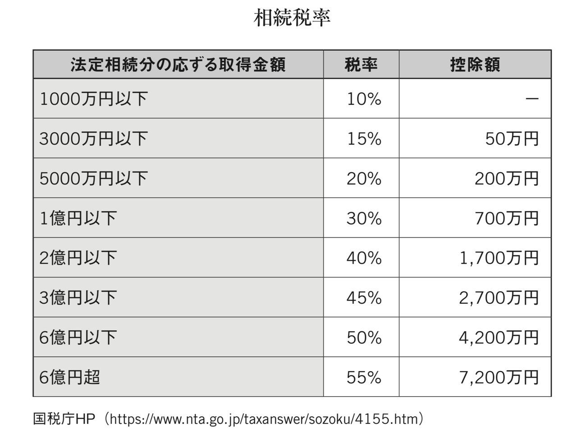
私は生まれが最寄りの駅から１００ｋｍもあるような田舎で生まれ育ったためこの相続の時には数々の残念な光景をみてきました。ほとんどの子供たちは外に働きに出て地元には顔を見せないことが多いのですが、亡くなる直前になって病院や介護施設から連絡が入り少しでも相続でお金を引っ張ろうとやっきになります。そしてこれまで介護をしてくれていた地元の周りの人たちや、親身になって介護していた兄弟を敵視して近づけないようにするなど非常に浅ましい姿を見てきました。
そのため相続のことはあらかじめしっかりと準備しておかれることが大事です。この本の読者様ですと将来の相続時に不動産を持っていることも多いかと思います。その場合には例えば次のような対策が考えられます。保険金の受取人を不動産の遺産を多く受け継ぐ長男にしたうえで、遺産分割協議の際、次男に渡す保険金を代償交付金と明記すれば贈与税などはかからなくすることが出来ます。
もし生命保険を次男にも同じように渡してしまうと、保険金とは別にそれ以外の遺産分割を請求することが出来るため注意が必要です。では保険の種類はどういったものが良いのでしょうか。まず相続税を支払うための資金としての活用も考えるのであれば、死亡保険金が一定である方が計画も立てやすいかと思います。そのため一生涯に渡り一定の死亡保障が確保でき死亡時に保険金が支払われる「終身保険」が基本となります。定期保険や養老保険の場合は、死亡保障が一定期間に限られる、その期間が過ぎれば死亡による保険金は支払われないため相続税対策としては向いていません。
次に契約の仕方ですが、「契約者、被保険者＝死亡者」、「保険金の受取人＝相続人」とすることです。例えば、
例①所得税＋住民税
契約者、保険金受取人＝相続者
被保険者＝死亡者
この場合保険を使って契約者が利益を得たと見なされ、所得税＋住民税がかかってきます。
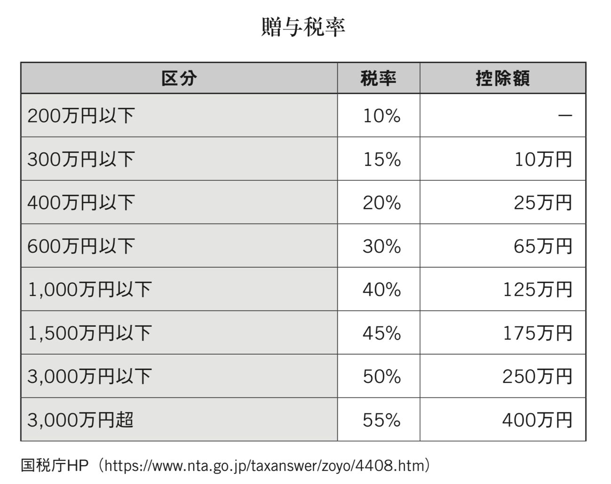
例②贈与税
契約者
夫
被保険者
妻
保険金受取人
子
この場合は妻が亡くなり夫に保険金が入り、それを子に贈与する形となりますので贈与税となり負担は重くなります。
例③一時所得
契約者
子
被保険者
夫または妻
保険金受取人
子
一時所得の最高税率は２５％のため相続税の税率が３０％を超える場合には、有効です。最後に注意点ですが相続税対策を考えるとき、すでにある程度お年をめしてから加入をお考えになるケースが多いかと思います。そのため健康状態を損ねていたり、検査に引っかかっていたりして、加入できなかったり、保険料が割高になったりする可能性があるため、早めに何でも対策をしておかれると良いでしょう。若いほど健康状態もよく、また保険金支払い期間も長くなるため支払額も毎月分はより負担を減らすことが出来ます。このようにして終身保険を活用して相続税対策をすることで全てのステップが完了することになります。他にも生前贈与をうまく活用したり、生前に相続財産に含まれないお墓やお仏壇を購入したり、養子を迎えて基礎控除額を増やしたりする方法がありますが、やはり不動産と生命保険を使ったものが基本かと思います。
この第５原則は一生を通じて使える基本となりますのでしっかりと考え方をマスターしておいてください。資産は「節税＋銀行の借り入れ」を意識して資産を守って、増やして、相続していくことです。
減価償却の落とし穴
不動産投資においてとても重要なのが出口になります。つまり不動産を売却するときです。築２２年の木造物件で上物割合８０％のものとして５千万円で購入したものを６年後４千万円で売却したとします。すると５千万円×８０％＝４千万円が４年で減価償却されますので、簿価は１千万円となります。簿価とは資産または負債について適正な会計処理の結果（この場合は減価償却）として帳簿に記入されている数値のことを指します。この簿価をその時の物件の価値としてみます。そのためローン残高を４千万円、売却にかかった諸経費を２００万円とするとこの時の不動産の譲渡所得は、
４千万円―（１千万円＋２００万円）＝２，８００万円
として計算されます。つまり減価償却で節税の利益を取った分はちゃんと、この売却の際に利益として計上されやすくなるようになっているということです。しかしながら日本の場合は売却のタイミングが５年以内かどうかで譲渡所得に対する税率が大きく変わりますので、通常は５年を超える期間持ってから売却することが多いです。実際、
５年以内は短期譲渡所で３９％（所得税３０％
住民税９％）
５年を超える場合は長期譲渡所得で２０％（所得税１５％
住民税５％）
（ただし平成２５年から平成４９年までは、上記の他、復興特別所得税として基準所得税額×２・１％が課されます）
となります。そのため仮に減価償却された分が利益として計算されたとしても、税率が２０％であればかなり低くなりますので、不動産投資は節税しながら資産構築出来る良い投資方法のひとつとなりえるかと思います。
まず４年落ちの理由ですが、新車の法定耐用年数は６年になります。そして減価償却に関しましては、以前は定額法ひとつで
法定耐用年数（６年） （経過年数×８０％）
で計算され２年未満の場合は２年と計算されますので
１年経過した中古車：６ ―（１×０・８）＝５・２＝５年
２年経過した中古車：６ ―（２×０・８）＝４・４＝４年
３年経過した中古車：６ ―（３×０・８）＝３・６＝３年
４年経過した中古車：６ ―（４×０・８）＝２・８＝２年
５年経過した中古車：６ ―（５×０・８）＝２・０＝２年
６年以上経過した中古車：２年
と計算されていました。
しかし、２００７年の税制改正により減価償却制度が大きく変わり新定率法という基準になりました。この新定率法によると耐用年数が２年の資産については１年で償却をして良いということになりました。つまり、４年以上経過した中古車を購入した場合には１年で全て経費にすることができるというわけです。ただし、使用し始めた時から１２ヶ月分ということになりますので、期の途中に購入された場合には翌期に持ち越してしまいます。その期に大きな売り上げが上がると分かっている場合には４年落ちの車を買うこともひとつの節税手段としてあげられます。
ちなみに個人事業者は所得税法が適用されますので、所得税法の法定償却方法は定額法になってしまいます。所轄の税務署長へ償却方法の届出書を提出すれば定率法に変更出来ますので４年落ちの車を１年で償却したい場合には忘れず届出を出してください。
この車の選定も、とても大事になってきます。私は様々なカーディーラーをまわっていく中で初め「節税＋資産構築」のためベンツを買おうと考えていました。しかしながら多く出回っている私が求めていたベンツですと、買った瞬間に売る際には２割まで減額されてしまうとベンツ担当ディーラーから言われてしまい軌道修正。そしていきついたのが日本では８００台ほど（ポルシェ担当ディーラー談）とあまり出回ってはいないポルシェのパナメーラでした。そのためほとんど値下がりは無いとのことでした。実際約１年たった時に当時９００万円で購入したパナメーラを査定してみたところ７００万円の値が付き実に８０％近い値が付きました。
車を買う時の考え方は保険と不動産を合体させたものです。今回の車も不動産のように全額フルローンでしかも金利は２％未満の低金利、そして手元からお金は出ていないものの、全額経費になり多大なる節税効果。法人税３５％とすると９００万円×３５％＝３１５万円もの節税になります。更にはお金が必要になった時に売ることで支払が進んでいるのであれば多少なりともキャッシュを生み出すことが出来、保険の役割を果たすことも出来ます。
ただし、当然のことですが経費とビジネスで使用するということが大前提です。私の場合は国内外のＶＩＰ、お客様の送迎やオンラインでの自己ブランディングに活用しております。つまり、ビジネス上必要な購入であって実際ビジネスと無関係なものを経費とすることは出来ないためご注意ください。
その為車買うにしても家を買うにしても大きなお金を動かす時には徹底的に調べ抜いたうえで行動を起こされることが大切です。
第６原則 お金の活かし方 社会投資
第５原則まででお金に対する富保有意識の考え方、基本的な資産構築の考え方「節税＋銀行借り入れ＋資産構築＋相続対策」について話を進めてきました。これらをおさえていくことが資産を構築していくうえでとても大事な鍵になっています。
そして次の第６原則ではいよいよ、なぜ私たちは資産を構築しなければならないのかということについてお話していきたいと思います。
よく「私はお金の亡者にはなりたくない」、「そんなに稼いでどうするの？」ということを言う方がいらっしゃいますが、こういう方たちは自分のことしか考えていないためこういった言葉が出るのではないかと思います。第２原則の富保有意識のところでもお話しましたが、まずは自分の生活を安定させることから全てが始まります。そこも、ままならない状態ですと愚痴が出たり、他人の足を引っ張ったりしてしまいがちです。つまり生活が安定しないと心も安定しないということです。もっと言ってしまえば心が安定していなからこそ、生活も安定しないということです。そして富保有意識がアップするということは心の器が大きくなり、より広範囲の面倒をみるようになっていくということです。実際富保有意識のレベルをおさらいしてみると、
レベ
ル
１
生活の安定
レベ
ル
２
自己顕示（アピール）
レベ
ル
３
自己成長
レベ
ル
４
家族、親族の生活の面倒をみる
レベ
ル
５
社会貢献
レベ
ル
６
地元への貢献
レベ
ル
７
次世代への貢献
このようになっていました。この第６原則のところでお伝えしたいの は レベ ル ５以上のところになります。社会貢献、地元への貢献、次世代への貢献ということです。
社会投資とは理想の未来を現実化させるスピードを加速させることです。
特に私は教育格差を無くすことが全ての問題の解決手段だと確信していますので、私は教育分野の方に社会投資しています。逆に言えばもっと社会投資したいからこそそれが自分自身の稼ぐ原動力、理由になっています。
ここでは読者の皆さまにも考え方をシェアすることで私と同じように稼がなければならない理由を持って頂ければと思ってお伝えさせて頂きます。
お金というとはじめに浮かぶのが「稼ぐ」ということではないでしょうか？それで事業を起こそうとしたり、トレードをしようとしたり、様々な投資に挑戦してみたり。しかしながら実はこの稼ぐことよりも使う方が難しいことはご存じでしょうか？
これまでの話を理解していればピンとくる方もいらっしゃるかと思いますが、トレードや事業、もしくはサラリーマンとして大きくその年で稼げたとしても、ただの無駄遣いではなく節税をしながら資産構築をしなければ手元にお金は残りません。また日本は予定納税の国でもありますので昨年稼いで支払った税金の半額をあらかじめ分割で納めるという制度があり、余計に手元から現金がなくなることになります。
そのため大きく稼いだ時こそ、まずは節税を考えることです。余計な見栄で身分不相応な高級ブランド物を買いあさったり、高級車を買ったり、高級物件に住んでみたりするのはその後にしなければなりません。
ちなみに私自身もファッションが大好きですので高級ブランド物の服も時に購入したりしますが、その場合もほとんどがアウトレットなどのセールの時などに８０％オフなどの品を始めほとんどが５０％以上の割引のものしか買いません。高級車に至っても節税と資産性を兼ねて限定のフェラーリやランボルギーニのように節税とプラス値段が下がるどころか上がっていくようなものも視野に入れていましたが、チャイルドシートが乗らないという理由でやめた過去があります。お金持ちの人たちが何台も乗りもしない高級車を持っているのもコレクターという面もあるかもしれませんが、こういった車は売りたい時にも比較的早めに買い手が現れることが多いため、「節税＋資産保全」の意味合いもあります。
また自宅もオフィスとして活用することによって家賃の一部を経費とし節税することも出来ます。同様に不動産を購入したり、保険に入ったり、共済に入ったりしながら資産防衛と構築を行っていき、ましてや自分が亡くなった後のことまで考えて相続対策まで行います。
使い方を一歩間違えるとその後多大なる損失があなたに降りかかってきます。ただその使い方を大切な仲間たちに食事をおごったり、日頃の感謝を込めてプレゼントしたり、自分やチームの学びに活用したりすることでより人のつながりが太くなり、そのお金が活きてくることになります。逆にお酒を必要以上に飲んで派手に騒いだり、ドラッグに走ったりしてしまう方もいます。
つまり、お金は稼ぐよりも使う方が更に難しく慎重に行う必要があります。
「偽」という漢字をみてみると、人の為とは実は「偽」であると言っています。実際にどうなのでしょう。この話をしていくにあたって私の２１歳の時に行った初海外旅行であるインドでのバックパッカー中に体験した話をしたいと思います。
当時２１歳の頃の私は広島大学の学校教育学部の学生でありつつも、このまま先生になってしまったら見聞が狭すぎて子供に語れることが少なすぎるという危機感を抱き１年間休学をしました。そして日本中を旅して回ったりする中で朝４時に起きて教会を掃除させて頂きながら聖書について教えて頂いたり、いろいろな仕事に挑戦してみたり、音楽活動してみたりしたものの何か満たされないものを感じていました。そして休学期間も残り３か月となったところで海外に行こうと思いバックパッカー小説のバイブル沢木耕太郎さんが書かれた『深夜特急』を読みふけりました。その本の中で圧倒的に面白かった国がインドでした。そしてこの１月末という時期はローシーズンでチケットも運良く８万円ちょっとで手に入ったこともあり、３万円ちょっと（ほんとにちょっと）の現金を握りしめてインドに向かいました。
そこでバスの狭い荷台に２人で寝させてもらうことで激安にしてもらったり、ヒッチハイクをしたり、食堂や駅でホームレスの人たちと密集して寝たり、世界遺産のアジャンター石窟寺院では入場料が高すぎるので地図を見て、正規の入り口ではなく山を越えて川を超えて裏側から入ろうとして警備員に銃を向けられるも交渉して格安で入ったり、危ない地域に行き過ぎて監禁されてしまったりと本当に数々の刺激的で忘れられない経験をしました。他にも船の上で銃を向けられ身ぐるみはがされそうになったりと、本当に書ききれないほどの日本では信じられないような体験をしました。もちろんたくさんの親切なインド人やバックパッカーの同志たちから食事をご馳走してもらったり、泊めてもらったりと助けてもらったことも多々ありました。しかしながらその中でも今でもダントツに印象に残っている体であります。
それはある村で見た衝撃的な光景でした。数々の物乞いやストリートチルドレンをみてきていましたのでちょっとしたことでは驚かないようになっていたのですが、ある少女たちとの出会いは本当に驚きました。その少女たちは皆、手首から先がありませんでした。なぜそんなふうに手が無いのか聞いてみると皆一様に親に切り落とされたと答えました。そしてそれを見世物にしてお金をもらいながら家族は生きていたのです。さすがにこれには衝撃を覚えました。選択肢が無い子供の頃からこのような境遇を強いられているというのは正直この時はかわいそうだと感じてしまいました。
そこで自分に出来ることは無いだろうかと考え、日本の「ぶんぶんぶん はちがとぶ」の歌を教えることにしました。最初子供たちは恥ずかしがっていたのもあったかと思いますが、歌えないと拒んでいました。しかし一人の子供が覚えて歌ってみて、チップを観光客からもらった瞬間に他の子供たちも教えてくれとせがんできました。
つまり、これまでは見世物になるという選択肢しか知らなかったのが、他の可能性を知ったということです。そしてこの時、もっと自分に教えられることがあれば、子供たちの可能性を広げられるのではと思うようになりました。これが私にとって教育に真に心から貢献したいと思い始めたきっかけでもありました。つまりその子供たちの為にやりたいというよりも、自分自身がやりたいと思ったということです。この違いは非常に大きいと感じています。内から出てくるワクワクを超えた燃える使命感のような気持ちで事に当たることが出来れば様々な外側からの力も引き寄せて働いてくるのではないかと思います。その意味で人の為にやるというよりはこの内側から沸き起こる使命感の欲求を満たすためにやっており、更には喜んでいる姿を見ることに更なる大きな喜びを感じられることにエネルギーをもらい、本気で取り組むことが出来るということです。これこそ嘘、偽りのない気持ちではないでしょうか。
今では教育に対する思いもより深くなり、教育とは子供たちはじめ人々の可能性を広げ、夢を持ち、夢を叶え、また互いの夢を応援し合うためにあると考えています。この分野に私の残りの命の時間を活用して、燃える使命感の元、今回の著作をはじめとして世の中にこれまで学ばさせて頂いてきたことをお伝えしていきます。
何よりまずは自分で出来ることはないか、周りで困っている方はいないだろうかとみつめてみることから初めてみてください。
この内からの欲求がそのまま社会投資に結びついていき、様々な力があなたの創造を超えて集まるようになってきます。
ここからがこの第６原則の本題です。投資や事業で稼いだお金を守り抜いて出来た余剰金を使って世の中をより良くする社会投資をする段階に入っていきます。
社会投資とは理想の未来を現実化させるスピードを加速させることです。
では理想の未来とはどのようにして探っていけば良いのでしょうか。その答えは実は仕事の中にあります。どのような事業や投資、そして仕事であれ、それらを成功に導いていく中で世の中で起きていること、起きてきた歴史、そしてそれらを元にして未来を読む能力に長けていきます。
世の中が見えてくるようになるからこそ、働き方、仕事の仕方などより洗練され、どういったところに問題があるのかが見え、その解決をすることで仕事のレベルが更に高いものになっていきます。また先が読める、つまり理想の未来と現実の問題点とのギャップを知ることで投資でも成功することが出来るようになります。もちろん私のように仕事以外のところで体験した様々な体験が元で社会投資のヒントを得ることも多々あります。ただし自分自身のビジネスや投資スキルが上がれば上がるほど、世の中の問題がより明確になってきますのでより的確な場所に社会投資出来るようになります。全ての未来を読むことはほぼ不可能でしょうが、ご自身が関わってこられたお仕事や投資の中で見えてきた現実の問題を解決するために、社会投資を行うということです。そして忘れてはならないのがシンクロは神様からのメッセージであるということです。
私の場合はインドでの体験が軸になりましたが、そもそも学部の広島大学時代は学校教育学部を卒業しており小中高の教員資格を持っています。そしてたくさんの先生たちによって、人生で道を踏み外すことなくこれまでやってこれたことには今でもとても感謝をしています。そして現在トレードを教えるミリオネアアカデミーという学校も主催させて頂いており、私の人生において教育という分野が非常に深い縁があることが分かります。
つまり「教育を通して命を使いなさい」というメッセージをもらっているため、そのメッセージの通りに突き進んでいるということです。
ちなみに私は投資で稼いだお金を社会投資していくことを推進するために、社会投資家普及協会 （ http://socialinvest.or.jp / ）を創設しました。当初は様々なアイデアを募集しながらビジネスなどにも投資を考えていましたが、ほとんど頂くビジネスアイデアに対してピンとくるものがなく、結局ふたを開けてみれば社会投資させて頂いていたものはフィリピンのセブ島にあ る DAREDEMO HER O 、日本の教育格差を無くすことを目的としたオンライン 塾 manavi e など教育関係のものばかりでした。
そしてやりながら気づいていったのですが教育格差を無くすことがこの世の中にはびこる不公平を取り除くことが出来るということでした。実際、フィリピンでは選挙の前になると貧困層の地区にバスケットボールコートや雨宿りを出来る場所を作り、ＴＶなどこの地区は持っている人がいないため、「何て良い人なんだ！」と思い安易にその人に投票します。
しかし、いざ当選するとその場所を柵で囲ってしまい貧困層の地区の人たちが使えないようにしたりすることはザラにあります。教育格差により情報格差が出来、しかも貧困層の人数は圧倒的に多いため、あえて情報を与えないことで政治に利用されるという悪循環を断つためには、やはりここでも教育格差を無くすことが必要だと確信しました。
このようにして人によって社会投資の内容は異なるかと思いますが、やるべき社会投資の内容を見つけるためにこれまでのシンクロである神様からのメッセージに、今一度耳を傾けてみてください。これまでの人生で出会った共通点を探ることであなたが目指すべき社会投資の形がきっと見えてくるはずです。
そして、それが見つかればあなたが稼がなければならない理由となり、更に富保有意識が上がり、より精力的にあなたが使命感を持って命を燃やして物事に取り組むようになるでしょう。
この社会投資が稼ぐ理由になり、更に仕事やお金を稼ぎ資産を構築する原動力となっていきます。そして世の中に対する見聞も深くなり、その社会投資の内容を深めていくようになります。まさにすべての物質が気の遠くなるような長い時間をかけて結晶化し宝石化していくように、あなたの思いと行動はより純粋化されていきます。
だからこそ純粋さの究極である宝石のようにあなたの魅力は増し、世代を超えて人々が集まるようになり、あなたが仮に亡くなったとしてもその魅力は著作物や口伝によって永遠に残り語り継がれていくのではないでしょうか。
そして人が見に着けている最高の宝石は志です。まさに一生をかけて命を賭していくのが志。この志について、私の尊敬する世界一の宝石商でアルビオンアートの有川一三社長がとても素晴らしい定義を与えてくださっています。
「人生において偉大なる達成を果たさんとすれば、その鍵は志にある
志は人に優先し、物に優先し、金に優先し、
場所に優先し、時に優先し、運に優先する
そしてその志が高く深く強く純なる時は
それが大いなる地場を創り、それらのすべての要素を引き寄せて結晶し
偉大なる達成を果たすのである
故に志は真に天の神々が天上にて
感嘆絶賛するものでなくてはならぬ」
いかがでしょうか。私ははじめこの言葉をお聞きした時、非常に感動しました。共通の九州の大先輩から、「この方から宝石を買いたいと思っているんだけど竹井くん一緒に会わないか」とご紹介頂いた有川一三さん。そこでした食事会は今でも忘れられません。宝石の話から人生、歴史、哲学、生きる意味、志にいたるまでその内容は多岐にわたるものの、それぞれが深く、とても贅沢な時間を過ごすことが出来ました。
それに感動した私はトイレに立つふりをしてお支払いしました。実はその価格は数十万円もしてとてもびっくりしましたが、それ以上の価値があると思い喜んでお支払しました。何よりこれだけ贅沢なお時間を頂き、更にご馳走して下さろうとしていた有川さんへの感謝の気持ちがあふれ出てきて本当に涙が出そうでした。そして帰ろうとした時に「竹井くん、僕に３日ください」と言われ、「これから竹井くんは世界で活躍するでしょ。だったら日本のことを案内し説明できなければならない。つまり京都と奈良についてしっかりと勉強しておきなさい」とお教え頂きました。その後、２月に京都、奈良の仏教建築や美術、日本の歴史を現地で懇切丁寧に説明してくださり、座禅を通して意識が外から内に入り冬の寒空を忘れ、それから意識を解放し空中に自由に気持ちよく揺蕩（たゆた）い自分の思い通りになる経験を頂きました。そこで私の志でもある「人は皆幸せであることに気付いて頂くこと」についてお話させて頂きました。全ての境遇はあなたにとって最も分かりやすい神様からのメッセージであり、常に目をかけられ愛されているということに気付けた瞬間に深い幸せを感じることが出来るからです。また有川さんには様々な雑誌などもご紹介頂いたのですがその中でも口コミだけで１０万部も売れている「致知」には非常に感動し、その気持ちをお手紙で伝えたところ、何と致知出版の藤尾社長との会食をセッティング頂きました。
このようにして互いの志を軸にして、たくさんの素晴らしい尊敬すべき方々との時間を共有させて頂いてきました。そしてこれが次の 「 Know Wh o 」につながっていきます。
世の中にあふれている情報はノウハウに少し偏りすぎているのではと思います。２０００年に入りインターネットは普及し世界中の人たちと瞬時に連絡が取れる時代が到来しました。ノウハウの多くはインターネットで調べることが出来ますし、特に英語まで使うことが出来れば、日本語よりも格段に多くのことは学部ことが出来るのではないかと思います。
何よりインターネットが生まれフェイスブックなどのＳＮＳが生まれたことによって、自分自身を発信することによって、より多くの人とつながることが出来る時代が来たということです。そしてそれこそがインターネットがこの世に生まれた意味ではないでしょうか。この時代に生まれた我々はより国境の壁を越え世界中の人たちとつながっていくチャンスに恵まれています。
また、本当に生きた情報は最先端で活躍されている仲間や先輩たちから得ることが出来ます。この本もそうですが私と出会って下さるきっかけであり、何より私にとってもより多くの皆さまとのご縁を頂き、より多くのことが学べるチャンスが得られると、とってもワクワクしています。
そして夢を叶えようと思った時に、計画を達成しようとした時に、志を果たさんとした時に一番はじめに考えなければならないのは誰とチームを組んで実行していくかということです。
「自分の弱点を挙げ、それを得意とする人たちをチームに入れていくこと」です。
一人では仕事をするうえで完璧にはほど遠くなってしまいますが、多くの才能ある仲間たちと組むことで目標を達成できる確率はぐんっと跳ね上がっていきます。まさに「だって人間だもの」（相田みつをさん）、人の間で我々は生きているのです。
また世の中から自分の内側の精神世界まで理解を深めようと思ったら人との関わりがとても大切になってきます。そして大切にしたいと思えるような仲間たちが出来ることで我々は思い遣りを学び、人の心理を学び、人のニーズをとらえることが出来、求められているものを認識し提供し成功するようになります。
そのた め Know Ho w （ノウハウ）よりも多くの人たちの才能を互いに活用し合い、本にもまだ載っていないような情報を分かちあ う Know Wh o （ノウフー）の方が大切だと思います。
かのフォードの創業者ヘンリー・フォードもあるとき記者に対して「私はどんな質問でも答えられるから何でも質問しなさい」と言い、実際に全ての質問に対して答えてみせました。目の前にある電話を使ってそれが分かる人に電話をしたのです。このようにノウハウではなくノウフーを意識していることがとても大事です。そしてお世話になったその相手に対してお返しをしていく。つまり生きるということは一生をかけて恩返しをしていくことだということです。
フィリピンで一所懸命ビジネスを始めるきっかけになったのも、元々２０１４年１１月に英語留学でセブ島に行っている時に、ミリオネアアカデミーの会員様から「お陰様で１千万円以上稼ぐことが出来ました！良かったらお礼をさせて下さい」という連絡が入り、セブ島で対談を撮らせて頂くことになりました。その 際 iPhon e で撮ろうとしているのを観て、近くにいた入月さんが「カメラマンを呼びましょうか？」と言って下さり無料で撮って編集までして頂きました。
そのお礼がしたくて日本に来られる度にご馳走したり一緒に飲みに行ったりする中で仲良くなり、今度はフィリピンに遊びに来るように言って下さいました。そして実際に肌でＡＳＥＡＮ諸国Ｎｏ．１の成長率の勢いを感じフィピンで仕事をすることに決めました。
このように人を通して繋がり導かれていくことが多く、その意味でノウフーを意識して普段の生活からひとりひとりとの出会いと、その相手の何気ない一言に対しても全てメッセージとしてとらえ敏感であることがとても大切なのではないでしょうか。
まとめるとノウハウからノウフーへ、つまり人をより意識して大事にして、つながりを作っていき成功し、ひとりひとりへの恩返しと社会投資を一生かけて行っていくことが人間界で生きる基本なのではないでしょうか。
社会投資というとお金を稼いでからしか出来ないというイメージが出来ているかもしれません。実際、お金を稼いで、節税しながら銀行の借り入れのレバレッジなども活用して資産構築し、相続対策まで行った後に社会投資をしていくというのが基本ではあります。しかしその逆の場合もあるということをお伝えしていきたいと思います。
インドの孤児院にボランティアで行った時のお話です。子供たちと遊んだり、ごはん食べたりしながら一緒に時間を過ごしとても楽しい貴重な時間を過ごすことが出来ました。しかしよくよく子供たちや施設の方のお話を聞いてみると、自分以外の肉親が全てエイズで亡くなっていたり、捨てられてきたため本当の親の顏が分からなかったり、幼児虐待がひどすぎて笑えなくなってしまったりと、実に様々な問題を抱えていました。話を聞いて心を痛めている中、施設の方に何を求めているのか聞いてみると、返ってきた答えはお金でした。結局のところ施設が運営できなくなってしまうと子供たちはそのまま路頭に迷ってしまいます。もちろん中にはしっかりと仕事をして成功していく子供も出てくるのでしょうが、大半は何も知らないうちに大人たちから麻薬密売なフォ犯罪の片棒を担がされたり、少女売春などの世界に身を落とされたりしてしまいます。
それらを防ぐためにも子供たちをかくまえるような組織が存在し維持されることは非常に大切なことです。しかしながら、全ての面倒を診ることは不可能です。そのためこの本を通して、人々にお伝えし考えて頂くきっかけを与え、また皆が少しずつご自身の納得される場所へ支援の手を広げて下さるようになればと考えています。
もちろん中には子供たちには汚い恰好をさせて、わざと人の同情を買い寄付させて、子供たちを逆に食い物にしているようなところがあることも事実です。そういったところとしっかりと見極めながら、支援していくことが非常に大切です。
このような経験を通して「お金があればもっと支援出来るのに、発言力があればもっと皆がそのことに意識を向けてくれるのに」という思いが原動力となりより精力的にパワフルに仕事に打ち込める原因にもなります。
また過去にホームレスを少しだけした経験があるのですが、その時にやさしく声をかけて頂いたり、ご飯を分けてもらったりした時の喜びは忘れようもなく、今で は BIG ISSU E のスポンサーをさせて頂くことでホームレスの方々の就業支援を行っています。
このようにボランティアの経験や過去の実体験を通して自分に出来ることを最大限にやりたいという思いから、社会投資を進めていくことももちろんあります。むしろこちらがよく言われていることではないかと思います。
人は自分の出来ることしか出来ません。だからこそ自分自身のレベルを上げていこうと思いますし、人の力を借りようともします。
お金とは、本来あなたが持っている性質を助長させます。
だからこそ、ただお金稼ぎだけを目的にするのではなく、その先の使い道である社会投資まで考えて志を立てて突き進んで欲しいという思いがあります。資産構築出来た後の社会投資の楽しさ、喜んで頂ける喜びをバネに一緒にたった一度の人生を生きていければと思います。
今すぐ何かしたいと思った方に是非やってほしいのは隣の方、周りの方に笑顔をふりまくということです。仏教の世界には和顏施（わがんせ）という言葉があり、人に和やかな笑顔を見せることが施しのひとつで徳を積むことになるというお話があります。是非人の心をほぐしてあげる心のマッサージ師にあなたの笑顔を通して取り組んで頂ければ幸いです。
何よりあなたにも経験があるでしょう？腹が立ってイライラしていた時に屈託のない子供たちの笑顔を見てふっと心が軽くなった経験が。あなたの今出来ることから是非社会投資に取り組まれてくださいね。
ワンネス （ onenes s ）という言葉を聞いたことがある方もいらっしゃるかもしれません。すべてはつながっていてひとつという意味です。その意味で今起きている出来事、出会う人々、生まれた時代含め全てに意味がありつながっており、分かりやすく言えば神様からのメッセージではないかと私は感じています。となるとその全ての出来事、出会う人々、過去の歴史を含めた時代全てがあなたに進むべき道を示してくれており、全て先生と言うことが出来るのではないでしょうか。
その意味で最高の先生はあなたが認識できるもの出来ないものを含め全てであり、「どこに？」と聞かれれば「こにでも」ということが出来るのではないでしょうか。
大ヒットしている漫画で私も大好き な ONE PIEC E （ワンピース）がありますが、このひとつなぎの秘宝 （ ONE PIEC E ）を求めて数々の海賊たちが群雄割拠で皆それを求め突き進んでいます。私はこのタイトルを観て頭に浮かんだことは、その秘宝はいわゆる「モノ」ではなく、世界をくまなく周り終えた時に、その旅の中で出会ってきた様々な人とのつながりこそがまさにひとつなぎの秘宝であり、それぞれひとりひとりがひとつのピース （ ONE PIEC E ）となっているのではないかということでした。作者の方に怒られてしまいそうですが、まさに私の短い人生において感じられるのは、人生とはまさにひとつなぎの秘宝 （ ONE PIEC E ）をつくることなのではないかと思います。
そしてひとつのピース （ ONE PIEC E ）だからこそ、上、下、左、右の全方向とのつながりがあり、支え合い、そして繋がっている （ ONENES S ）のではないかと思います。全てから学び、全てを支える人でありたいものです。
第７原則 真のお金持ちの考え方
素晴らしい方からは素晴らしい話しかきませんし、ロクでも無い方からはやはりロクでもない話しかきません。後者はよく「良い話がある」と持ち掛けてきますがほとんどがその方にとって「良い話」であって、こちら側にとってはちっとも良くないどころか悲劇的な話であることがほとんどです。その方が人を大事にするかどうかは周りの仲間たちを観れば大体分かります。昔からの地元の仲間を大切にしているか、家族を大切にしているか、仲間たちが互いに敬意を払い合っているかなど、しっかりとチェックする必要があります。
良い仲間を作りたければあなたが良い人にまずならなければなりません。では、早速お話していきたいと思います。
トレードのところでもお話しましたが、私たちは現在を含めた過去の歴史からしか未来を読むことは出来ません。そして過去の歴史を調べると人は同じことを繰り返してきたことが分かります。その意味で「人は歴史から学ばない」ということについてもお話してきました。
ただ多くの人は学ばないからこそ学んだ人にとっては大変なチャンスとなります。そこでここでは読者の皆様に最低限目を通しておいて欲しい古典についてお伝えしたいと思います。
１つ目は『論語』です。孔子と弟子たちとの言行録になります。孔子は紀元前５５１年に生まれ紀元前４７９年３月９日に亡くなったと言われているため２４００年以上も残って現代に伝えられている数少ない本です。実践的であり非常に分かりやすく子供でも理解できるものです。
最近では安岡正篤氏のお孫さんの安岡正子氏が子供向けの論語の本を書かれ素読も勧められており、素晴らしいと思います。明治時代の教育勅語など古典の素晴らしいものはそのまま子供の頃から丸暗記されると良いと思います。そして成長を重ねるに連れ昔丸暗記していたものの深い意味が理解されるようになってくると、それは悟りにも似た静かな静寂が心に生まれることになります。
私も実際、子供に実践していきたいと考えています。江戸時代の三大私塾の一つである大分県の日田にある「教育とは人間社会における最大の善行である」をモットーとした広瀬淡窓（ひろせたんそう）の咸宜園（かぎえん）の教育プランは現代人にとってとても良いかと思います。そこで小さい頃に論語を学び、最後に学ぶのが次に紹介する『伝習録』などを含む陽明学です。
二つ目の『陽明学』はあまり馴染みの無い方も多いかもしれませんが、私は孔子の思想の完成系だと考えています。創設者の王陽明は１４７２年９月３０日に生まれ１５２９年１１月２９日に亡くなった、中国の明代の儒学者であり思想家であり高級官僚であり武将でもある非常に多才で伝説的な功績を残されている方です。そのため陽明学は５００年間残ってきています。
王陽明は朱子学の読書などで知識を増やさないと真理に到達できないとする性即理を批判し、人の中に真理を求め、１つは全てに通じるという心即理を唱えました。まさに実践型の儒学であるのが陽明学です。明治維新志士たちの思想的支柱であった２９歳で亡くなった吉田松陰はまさに陽明学者でした。
３つ目は内村鑑三氏の『代表的日本人』です。西郷隆盛、上杉鷹山、二宮尊徳、中江藤樹、日蓮の五人をあげ、彼らが成し遂げた功績と何よりその人物たちの人間性に焦点が当ててあります。我々がどういう日本人としての誇りを持てば良いのかを教えてくれます。
４つ目は『聖書』です。特に新約聖書から読み進められるのが良いかもしれません。欧米の本はこの聖書の教養がベースになっているものがほとんどで理解を深めるためには必須です。何よりこの内容は世界一読まれている本というだけあって非常に何度読んでも人が書いたものとはとても思えない、まさに神様から預かった言葉、預言書なのではないでしょうか。
他にも紹介したい本はありすぎて余りあるほどですが、意識的に現代のベストセラーだけではなく一度時間をしっかりと取って古典から学ぶ機会を作られたら良いかと思います。私も毎月１回福岡に伺って、橘一徳先生から陽明学など様々な古典を学ぶ機会を頂いています。
それら古典が現代でも読み継がれているというのは歴史の荒波にもびくともしない普遍の真理だからです。折角こういった本が未だに読めるというのに、読んでいないということは現代人にとってどれほどの宝の持ち腐れでしょう。もちろん内容が難しくて理解出来ないということもあるでしょうから、私も先生をお呼びして東京でも勉強会を定期的に開き読者の皆様とも一緒に学べる機会を提供したいと考えています。
一度決めたこと、ルール、規律は徹底的にやり抜き、守り抜くという意味です。この本の中でも何度もお伝えしてきたとおりです。一度やると決めたことを本当はやり抜くべきだと分かっているのに、ストレスや負荷がかかったことが原因で諦めてしまうと、次も同時ストレスレベルで止めてしまいます。
つまり一生そのレベルから抜け出すことが出来ず成長することが出来ません。「絶対に無理だ！」と感じた時に我々が行うのは諦めることではなくどうしたら出来るかを考えることです。そしてほとんどの出来ない原因はあなた１人でやろうとすること、つまり一馬力発想が根っこにあります。
何かを成し遂げようと決め、規律をつくり一旦進みだしたら決してその動きを止めないことです。それはたとえ将来夢に描いていることとはかけ離れていることだとしてもチャンスの扉は今やっていることの先に必ずあるからです。これが本当にONENESSを理解している人の行動です。たとえうまくいかなかったとしても一所懸命にそれに取り組んでいたのであれば、必ず次につながる出来事が起こります。嫌なことでも一度決めたことはやり通すことによって精神レベル、忍耐レベルはどんどん上がっていきます。私も様々な仕事やアルバイトを通して経験させて頂きましたが、某ファーストフード店で料理部門の仕事をしたいと思って入ったところ実際は掃除の仕事を与えられましたが、最初は「え〜！」と一瞬は思ったりはするものの結局は与えられた仕事を求められる以上にやってやろうという気概で行っていました。
そして気づいたことはどんな仕事にも面白味があり、学ぶべきことがあるということです。また理不尽な環境であればあるほど一旦やると決めたことを腐らずに一所懸命やっているとそれを観てくださっている方が必ずと言っていいほどいて、重用してくれるようになります。
つまりその精神忍耐レベルに見合った仕事が天から与えられ、それをクリアすると次のレベルの扉が開かれるようにこの世は出来ているのではないかと思います。
お部屋は基本的にあなたが１番時間を過ごす場所です。そのためあなたの心の状態がそのまま投影されているものです。心が整理されていない方は部屋も無秩序に使わないガラクタもそのまま無造作に置いてあったり汚れがそのままになっていたり、逆に神経質すぎる方は異様なほどにものがなくほこり一つ落ちておらず潔癖で人を入れることすら拒むような方もおられます。もちろんどれが良い悪いというものでもないですが、大事なのはあなたが求めている結果に相応しいお部屋の状態になっているのかということです。
つまり、ただ整理整頓され見た目に綺麗にしていれば良いという訳でもありません。私がこれまで観てきた大富豪たちのお部屋はデザイナーやメイドさんがいることもあり基本的にとても整理整頓され色味や家具なども統一感があり非常に落ち着ける空間になっていました。外の景色も自分の部屋の一部のようになり開放感もありゆったりとした時間が過ごせるようにしてあるところがほとんどでした。
それとは逆のパターンもありました。特に一部の研究者タイプの方々や編集者などのオフィスは雑然としているところも多々見受けられました。数学の世界では解析系の方は特にそうで、代数系の方はとても綺麗なお部屋が多い印象がありました。ただご自宅はお手伝いさんや奥様などのおかげか綺麗に整理整頓されている方が多かったのは事実です。私の場合は集中的にやる際にオフィスは資料や書籍だらけで山のようになってしまいますが、あくまで一時的で終わったら一気に古本屋に引き取りに来てもらったりしてモノをすっきりさせてしまいますので一部研究者タイプなのかもしれません。逆に言えば私の富保有意識をアップする余地はここにあるのかと思います。
このように夢を叶え成功している人たちの部屋のタイプは様々ではありますが、ことお金持ちというところに絞ってみますとお手伝いさんがほとんどいらっしゃった為綺麗で整理整頓されていました。ただこの整理整頓には２種類あります。
よく巷に出ている整理整頓の本を拝見するといかにモノを捨てて、部屋をスッキリさせるかということを強く主張しているものが多く見受けられますが他にも方法があります。
ズバリ！ 部屋を広くしてしまうという方法です。１０代、２０代、３０代の若い方、そしてこの本の読者の皆様にはモノを捨てるよりも、そのモノをそのまま置いていても大丈夫なもっと広いところに引っ越してやる！ といった気概を是非持って欲しいと思います。オフィスや家が手狭になってきたら、より広いところに引っ越すという発想です。この発想の方が金銭的に豊かになっていくのではないでしょうか。
そしてお部屋に関してもうひとつ大事なことは目に見えない掃除、整理整頓というものがあります。もちろんお部屋を綺麗に整理することであなたの心も整理されていきます。しかしながら目に見えるところばかりではなくお部屋やあらゆる場所には気があります。世の中にパワースポットがある一方で、自殺の名所もあります。つまりそこに溜まっている気、流れている気というものがあるということです。その意味で引っ越しして来られた際には前の人の気がその部屋には最初残っています。そのためまず引っ越してすぐに行って欲しいのは、スペースクリアリングです。あなたのお部屋はあなたの夢を叶えるためのお部屋にしていかなければなりません。カレンさん（Karen Kingston）のスペースクリアリング関連の本に目を通しておかれると良いかと思います。特にオフィスなどはそうですが、前にお住まいの方が栄転されたかどうかも、私は常に引っ越しの際には確認するようにしています。クリアリングするとはいえ、前の方が栄転されたようなお部屋はゲンがいいからです。
また風水などを活用してお部屋を構築していかれるのも良いかと思います。大事なのはあなたかが夢を叶えるためのこだわりのあるお部屋にするということです。あなたがそこに住むことで自信がみなぎるような内装と気の流れのお部屋にすることです。
そして心地よい場所にしていき、家に帰ることでとても癒されかつ自信が湧いてきます。
また最後に掃除と言えばよく本に出ているのがトイレ掃除に関してかと思います。そして掃除と言えばイエローハットの創業者でＮＰＯ法人日本を美しくする会の相談役でもある鍵山秀三郎氏は最も有名なのではないでしょうか。
（http://www.nipponーshacho.com/interview/in_yellowhat/）
掃除を通して人の心を整えていかれるというこの発想は素晴らしいですし、私も実際、公衆トイレで汚いところをみつけたり、路上にごみが落ちているのを見つけたりした時にはその場で掃除し、ごみは拾ってごみ箱に入れます。ヨガの教えにShaucha（サウチャ）というものがありますがこれは「清潔を保ちなさい」という意味です。
その意味ではトイレを綺麗に保つことは基本です。その会社や飲食店が良いところかどうかはトイレが綺麗に保たれているかどうかで分かります。自宅も同じです。
そして掃除とはその場をパワースポットにすることです。神社でお参りするときに手を洗い口をすすぐことで身を清め神様と向かい合いますが、そのような気持ちで自分と家族の夢を叶える場所として自宅を掃除によって清め扱っていくことが大切なことです。
よくお金持ちは長財布を持っている、満月に向かって財布をフリフリする、高級な財布を持っているなど、ほぼ都市伝説のようなことが実 しやかに語られていますが、私が出会ってきたお金持ちの方々の印象としてはそういった共通点はありません。
二つ折りの財布やマネークリップを使っている方もいらっしゃいますし、カードしか持ち歩いている人しかいなかったり、そもそもご自身でお金を持ち歩いていなかったりとバラバラです。
ただ共通点をあげるとすれば皆、財布は整理整頓されているということです。領収書と財布が一緒に入っている方は結構見ますが、お金持ちの方でそういった方はほぼ皆無です。
私の場合も絶対に領収書は財布に入れることはありません。領収書はお金が出ていったことが印字されています。そのため領収書はお金が出ていくエネルギーのものというイメージが私の中にあります。それを財布に入れることはゲンが悪いと感じます。そのためバッグの中でも分けたところに領収書は入れるように、決して財布と触れないようにしています。
財布を含めモノをしっかりと大事に扱うことが大切なことではないでしょうか。そして何よりお金を大事にします。必ずそんなに小さいお金でもそれを出した以上の金銭的、精神的リターンがあるものでなければ決してお金を出したりはしません。そのため何億というお金をポーンと使うことがあれば、数百円を値切るということもあります。周りからみると奇異に見られがちですが、結局、見合った額以上は決して出さないからです。
財布の使い方もそうですが、それ以上にお金の使い方をしっかりと学んでいくことがとても大切です。
一般的によく言われるのはGive and Take（ギブアンドテイク）、もしくはWinーWin（ウィンウィン）もよく聞く言葉ですね。
与えたらその分の見返りを求めるという考え方ですが、これまで本を読み進めて来て頂いた方にとっては最早この考え方に違和感があるかと思います。何か見返りを求めて行動をするという行為はとても富保有意識が低く、キツイ言い方をしてしまえば浅ましいと言えます。そうではなく自分が提供できることを「好き」で徹底的に提供し貢献することです。
大金持ち、大富豪の人たちとの仕事ぶりをみたり、最近ではフィリピンで一緒に仕事させたりしてもらうようになった大富豪たちは皆、とにかく与えようとします。自分自身が儲けるよりも私のような若い世代を育てようとしてくれて、とにかく良い条件で仕事をジョイントしてくれることが多いです。つまりそこまでの信頼感を得られることがとても大切なことであるということです。彼らの考え方は教え育てようとするつまり「Give and Give（ギブアンドギブ）」を徹底しているように思います。その根底には自分自身が満たされているということがありますし、その幸せをお裾分け、つまり次世代を育てることに力を注いで下さろうとしています。そして私たちもその期待に応えようと必死で努力、精進し喰らいついていきます。
そして私自身も一部の方にコンサルやコーチングなどさせて頂いていますが、私が仕事をする時にいつも心がけているモットーがあります。それは「Give and Forget」です。与えてそれに見返りを求めず、自分が与えられることを最大限与えさせて頂き、またもっと与えたいからより努力し自分のレベルを上げていくということです。
与えて忘れてしまえば、見返りも求めないため、相手の反応が自分の期待していたものと違ってイライラすることもなくなります。むしろ反省点として自分の行動を改善させていくことになります。他人と過去は変えられません。変えられるのは自分と未来です。自分が変われば他人も変わって見え、過去の解釈の仕方も変わります。その自分を高め続けるキーワードが「Give and Forget」です。
おかげさまとは「お陰様」と書きます。この陰は誰の陰を指すかと言いますと、神様や仏様といった偉大な存在の陰で、その庇護、加護を受ける意味として使われてきました。
そしてどんな人の中にも身体と心と魂がありますが、この魂とは全ての生きとし生けるもの全ての中にあり、全てとつながっているとガの教え(Ishwara pranidhana）の中にもあります。この魂こそが人の備える神性であり、我々は生きているだけでお陰様であり、また人に親切にしてもらい心が癒され、助けて協力してもらうことでより大きな力を発揮することが出来るのもまさにお陰様です。
生きとし生けるものが関わっている以上そこには神様などの偉大な存在が魂としてあり、その力のつながりを意識することで、全ての出来事、出会いが必然であると心から理解出来るようになり、そこに感謝が生まれ全てはお陰様ということになります。
このお陰様のことを理解し体感出来るようになると、人生が導かれているかのような感覚に陥るようになります。その感覚になると全ての出来事が自分自身が今世で成すべきことを示してくれているかのうように感じます。そしてどんなにその時は嫌だと感じていたことも後々あれがあったお陰で今の自分があるということに気付けるようになっていきますし、その気付けるスピードはどんどん上がっていきます。
となるとどんな出来事も自分にとってプラスにとらえられるようになるため、「私は何て強運なんだ」という意識になっていきます。そしてその強運に感謝するようになります。すると何が起こっても感謝するようになるため、感謝に溢れ、そしてその幸せのお裾分けを周りの仲間たちにも行うようになります。つまり自分にもっと出来ることは無いだろうかと、愛を持って仲間たちをサポートしていくようになります。
そんな人は周りからどう映るでしょうか？ 当然のことながらとても魅力的な人に映り、皆があなたに惹かれるようになります。数年前に必要なものは思うことで集まってくるという「引き寄せの法則」が流行りましたが、「惹き寄せの法則」と言っても良いのかもしれません。ほとんどのチャンスはあなたに惹かれた人が運び込んでくるのですから。
そして大富豪の方々は総じて本当に魅力的な方が多く、一見普通のおじちゃんに見える方も独特の魅力と眼光の優しさと鋭さが兼ね備えられており、その立ち居振る舞いや会話から一気に惹き寄せられてしまいます。
私たちは子供の頃から勉強、スポーツや受験などで競い合うことを強いられてきました。また会社に入っても売上を個人間で競争し合ったり、課されたノルマをこなしたり、会社間で競争したりと「勝ち負け」の世界が繰り広げられているように見えます。
しかしながら本当は競争ではなく共創するといった方が正確なのかもしれません。
先ほどお伝えしました通り、私たちの存在が１つの魂を分け与えられつながって存在している、日本の言葉で言うと分霊 である以上、個々の身体と心では別々の存在として競争しながらも、魂の部分では互いの立場でより高みを目指すために違う立場から共に創造していることになるのではないでしょうか。
この意識になると世界中の人たちを友達、仲間と認識出来るようになるため、まさに最強の仲間意識と言えるのではないでしょうか。
有名な『ソクラテスの弁明』という本の中にあるお話です。
古代ギリシャの哲学者ソクラテス（紀元前４６９年頃 - 紀元前３９９年４月２７日）の弟子カイレフォンが神様から言葉を託される場所であるデルフォイへ行き「ソクラテスより知恵ある人はいない」という神託を得ました。
ソクラテスは不審に思いこれが間違いであることを証明しようと、賢者と評判のある様々な職種の人物を訪れました。その結果、彼らは専門的な知識に関しては確かにソクラテスより知っていましたが、本当に大切な「美しさや善、徳」については知ったかぶりをしていました。
彼らに対してソクラテスは「美しさや善、徳」についてはまだまだ自分は全てを理解しておらず知らないということを自覚していました。
こうしてソクラテスは「美しさや善、徳」について自分が無知であることを知っているという点で自分は最も賢い者であると、この神託を理解したというお話で、ソクラテスの「無知の知」として知られています。「自分は何でも知っている」と思うと、あなたから謙虚さが失われ傲慢さが顔を出します。傲慢になると人の話を聴かなくなり、そして人を通して得られる神様のメッセージが聴こえなくなってしまいます。パナソニックの創業者、松下幸之助氏も工場などでどんな従業員のお話にも耳を傾けられていたのは有名なお話です。
自分自身の「無知の知」を自覚し、どんな方からも出来事からも学べるようにしておくことがとても大切です。最も賢い方とはどんな方からも、どんな出来事からもありとあらゆるものから学ぶことが出来る人です。
だからこそ身の回りに起きる全てがチャンスとなり、大成功する糸口を見つけるきっかけとなります。
これまで全ての出会う人、出来事には意味があり必然的に起こっているというお話をしてきました。そしてこの必然性とは魂、分霊が全ての生きとし生けるものがつながっているからこそ言えることでした。
自分とは「自」を「分」けると書きますが、まさにこの「自」にあたるのが皆共通の「魂」と言えるのでしょう。より詳しく見るために聖書に次のような一節があります。
創世記１章２６、２７節
「人が、神のかたちとして、神に似せて造られた」
ヨハネによる福音書４章２４節
「神は霊である」
と書かれています。そのため人が似ているのは身体というよりは霊の部分であり、それを分けたのが分霊としてのあなたとなるということを示しています。これはあなたの一部分に神様が在る、宿っていることを示しています。
その一方で私たちはそれどれ異なる身体と心を神様の魂、分霊の器として与えられ、生まれてからそれぞれのやり方で育んできています。身体を粗末に扱いすぎ負担がかかってしまっている場合には病気や身体の不調という形でお知らせしてくれます。そしてあなたが叶えるべき夢はドキドキやワクワクの形で心を通して教えてくれています。
そのサインにシンプルに従っていくことで、あなたは本来の神性を伴った自分になり、使命を果たせるようになっていくのです。
メメントモリ（memento mori）はラテン語で「自分が必ず死ぬことを忘れるな」という意味です。私はこの言葉を知り常に意識するようになったことで生き方が大きく変わっていきました。
まずこの言葉の元々の意味であった「今を楽しめ！」ということです。私の場合は今世で「竹井佑介」という人生を構築し生きているわけですが、この「私」としての人生はたった一度っきりしかありません。そして肉体を持っている今しか出来ないこと、肉体を失ってからは出来ないことがたくさんあります。そのため必ず死ぬのであれば、その死ぬ際にしておけばよかったと後悔してしまうようなことをあらかじめ想い起こしておくと良いでしょう。
精一杯生きることで見えてくる世界があります。あなたが今使っている身体は決してあなたが作ったものではありません。お父さんとお母さんの２人の出会いによって形作られ、また後両親それぞれにもご両親、あなたにとっての４人のおじいちゃん、おばあちゃんがいらっしゃいます。そしてそのおじいちゃん、おばあちゃんにもそれぞれご両親がいらっしゃいます。このひとつひとつのかけがえのない出会いがひとつでも違っていたら、あなたは存在しません。
１０代遡るだけであなたの命に関わっている人々の数は１０２４人にもなり、２０代遡ると１００万人を超え、２７代遡ると１億人を超えほぼ現在の日本と同じ人々の数となります。そして３０代で１０億人を超えたったの３３代遡ることで８０億人を超え、何と地球人口を超えてくるのです。１世代を多く見積もって３０年だとしても３３代はたった千年程度の時間となります。そう考えると地球誕生からの４６億年の歴史、宇宙誕生からの１３７億年の年月までを考えると、とてつもない考えられないほどの奇跡的な確率の中であなたという存在が誕生したことになります。
また人生を８０年で考えるこれを秒数に直すと約２５億秒になります。１秒に１人ずつお会いしたとしても今の地球上に住む人々全員にお会いすることは不可能です。つまり１３７億年の歴史の中の奇跡的な確率であなたはその肉体を持ち、奇跡的な確率でこの同時時代のタイミングに生まれ、そしてまた奇跡的な確率で私はあなたとこの本を通してつながりを持つことが出来たのです。このように考えると全て起きていること、出会いすべてに意味があるように思えてきてなりません。私が以前メメントモリを意識し死を想った時、はじめは「～しておけばよかった」という後悔の念を抱きながら最後、仲間たちに見守られながら息を引き取っていました。そしてその後悔していた内容をこの身体を使って体現していこうと考えていました。
だからこそ必死の精神で使命感を持ち、自分の命を多くの人たちのために使って頂けるようにと、がむしゃらに努力し邁進してきました。他人の命は大事にしつつも、成功していく課程では「自分の命を粗末に扱うこと」、リスクをより大きなリターンを狙いどんどん挑戦していくことの大事さも気付くことが出来ました。
この考えは今までの人生を振り返った時にとても大切なものであったことは事実です。しかしながらこの本を書きながらあらためてメメントモリした時、見える景色は少し異なるものでした。
それは決して後悔ではなく「感謝」の念でした。本当に多くの人たちとの奇跡的な出会いを通じて、自分自身という存在が生きることが出来たということです。この私の死を悼んでくれている人たちのつながりには私を含めそれぞれご先祖様から頂いた奇跡的なつながりがあり、そのベースにはもちろん地球が誕生してくれた奇跡、宇宙が誕生してくれた奇跡があります。これらをひとつひとつ思うともうそこには感謝しかなく、言葉ではなく涙がありました。私たちはやったことだけではなくやらなかったことでも人生は構築されていきます。この生きるという行為はそのメメントモリによって気付くことが出来た感謝を、どのようにして命を持っている時に身体を持っている時に表現していくのかとういことではないでしょうか。そう思えた時、あなたの考え方、行動というものは神様から頂いた使命を全うする尊い本来のあなたとしての行為となっていくことでしょう。
人生は本当に短い時間しか与えられていません。だからこそあなたが出来ることは精一杯やりきることも大切ですし、あなたが亡くなったあと先人から受け取った意志のバトンをあなたから次の世代の方々にバトンタッチし繋いでいくことがとても大切なことです。
あなたが頂いた身体、心をしっかりとメンテナンスし、少しでも皆のためになるよう命を使って頂けるよう過去から未来まで含めた全ての生きとし生けるものに対して恩返しの人生を共に生きていきましょう。
マザー・テレサを知らないという方は我々の時代においてはそうはいないではないでしょうか。
彼女の次の言葉は生きるとは何かを教えてくれます。それを知っているか知らないかでどれほど人生が変わることでしょう。しっかりとかみしめて頂ければと思います。
「人は不合理、非論理、利己的です。
気にすることなく、人を愛しなさい。
あなたが善を行うと、利己的な目的でそれをしたと言われるでしょう。
気にすることなく、善を行いなさい。
よく目的を達しようとするとき、邪魔立てする人に出会うでしょう。
気にすることなく、やり遂げなさい。
善い行いをしても、おそらく次の日には忘れられるでしょう。
気にすることなく善を行い続けなさい。
あなたの正直さと誠実さとが、あなたを傷つけるでしょう。
気にすることなく正直で誠実であり続けなさい。
助けた相手から恩知らずの仕打ちを受けるでしょう。
気にすることなく助け続けなさい。
あなたの中の最良のものを世に与え続けなさい。
けり返されるかもしれません。
気にすることなく、最良のものを与え続けなさい。
あなたは、あなたであればいい。」
この言葉はまさに私たちに生きるとは何かを教えてくれるものです。
そしてもうひとつ紹介させてください。
私たちはこの世で大きなことはできません。小さなことを、大きな愛でするだけです。
あなたはこのマザー・テレサの言葉から何を感じましたでしょうか。
生きるということはあなたが出来ることを最大限の愛をもって行うということです。不幸とは相手にあなたが思う行動を求め、相手の反応があなたの思い通りにはならないことを「不快」に思うことです。つまり自分勝手なのです。
ただひたすら相手の評価を求めることなく、あなたの最大限の愛を伴った行動自体を楽しみ喜ぶことが出来るようになること、それが幸せなのではないでしょうか。
その意味で彼女の行動や言動は７０億人全員の幸せの達成につながるものなのでしょう。彼女の意思は決して絶やしてはなりません。
あとがき
これで『The Money ７つの原則』の第１原則から第７原則まで全てお伝えいたしました。今一度振り返ってみますと、まず前半ではお金の本質と愛し方から富保有意識についてお伝えいたしました。なかなか聞きなれない言葉でしたでしょうがお金や富に対する愛と意識がいかに大事なのか共有出来たのであれば幸いです。
そしてお金の稼ぎ方のところでは事業で稼ぐ方法からトレードで稼ぐ方法、そして資産構築について一般書にあるような「攻め」の姿勢ではなく「守り」の姿勢の観点からお伝えしました。大事なのは「節税＋銀行借り入れ」で資産構築し相続対策をしていくことです。またお金を稼いだ後の世界について社会投資という考え方をお伝えし、最後に私が出会って来た真のお金持ちの方々の考え方や行動についてお伝えしました。元々それぞれの原則毎に普通の本で一冊以上のボリュームになるほどお伝えしたいことがありました。しかしそのままでは読者様にとって、読みづらかったり、頭がパンクしてしまったりして本来お伝えしたいことがほとんど伝わらない可能性がありました。そこで考えたのが私自身の貧乏学生からトレーダー、起業家、投資家になるに至るまでに特に大事だったこと、そして是非学校で教えて欲しいと思った内容についてまとめさせて頂いたのがこの『The Money ７つの原則』になります。
つまり、読者として想定したのは高校生の頃の私でした。私が高校卒業前からこの内容について知っていたのであれば、もっとスピーディーに起業することが出来、社会投資の世界を知ることで早く成功しなければならない理由が出来、より意欲的に仕事に邁進することが出来たのではないかと思います。何より２０歳過ぎまでお金を稼ぐことに対する嫌悪感を無駄に持つ必要も無かったかと思います。
本文でお伝えしました通り、お金は稼ぎ方も大事かもしれませんが、それよりもずっと大事なのは使い方です。使い方によってあなたの人格は磨かれもし、汚されもする、そして社会が未来の理想に近づいていくことにつながりますし、逆に遠ざかることにもつながります。稼いだ後の使い道について一点の曇りも無ければ、あなたの稼ぐ力は本来のパワーを発揮できることでしょう。『思考は現実化する』という大ベストセラーがありますが、その英語の原文は『Think Big Grow Rich』です。「大きく考えることで、豊かになる」という意味です。大きな考え、夢、目標であれば見失うことも無いでしょうし、また壮大な考え夢には人を引き寄せる力があります。そしてその考え方や夢が大きくなるほどあなた自身の魅力が増し、人はより惹き寄せられてくるものです。つまり、一馬力から多馬力の世界に進むことが出来ます。またこのように訳すことも出来るかもしれません。
「大きく考えなさい。豊かになりなさい」
私も含め皆、地球上に住む全員は豊かにならなければならないと私は考えています。心、経済、健康、仲間それぞれの面において豊かになれた時、心の奥底から周りを助けていこうとする気持ちが湧き、私のように幸せになってほしい、幸せのお裾分けがしたいという気持ちも湧いてくるのではないでしょうか。またそういった豊かになるべき場所がこの地球なのではないでしょうか。この本がその豊かさの一助となれば幸いです。
次はこの本を通して頂いた奇跡的なご縁をより深くつなげていくために、実際に読者の皆様とお会いできるのを心より楽しみにしております。
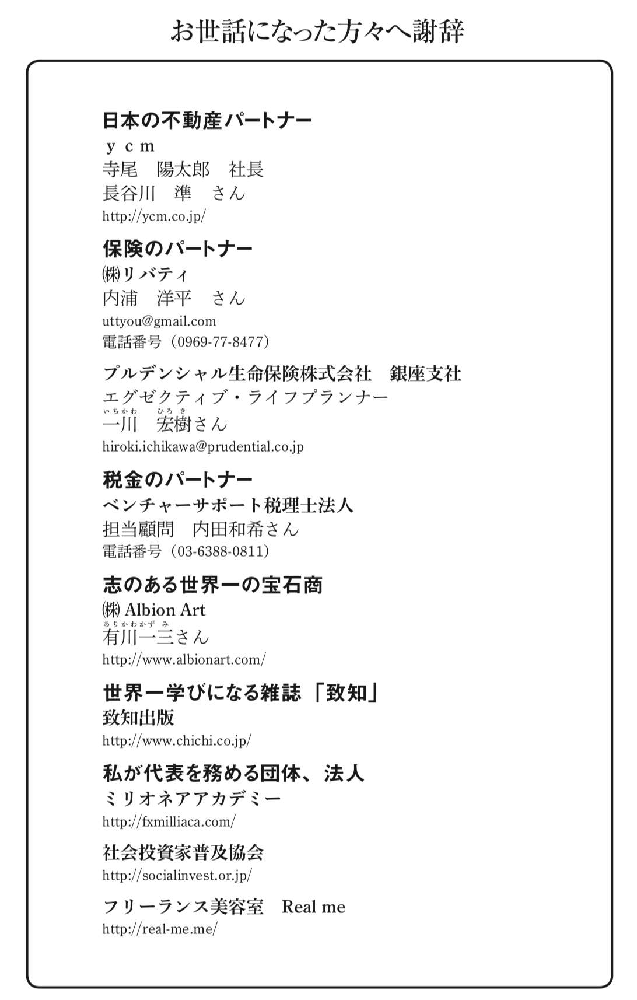
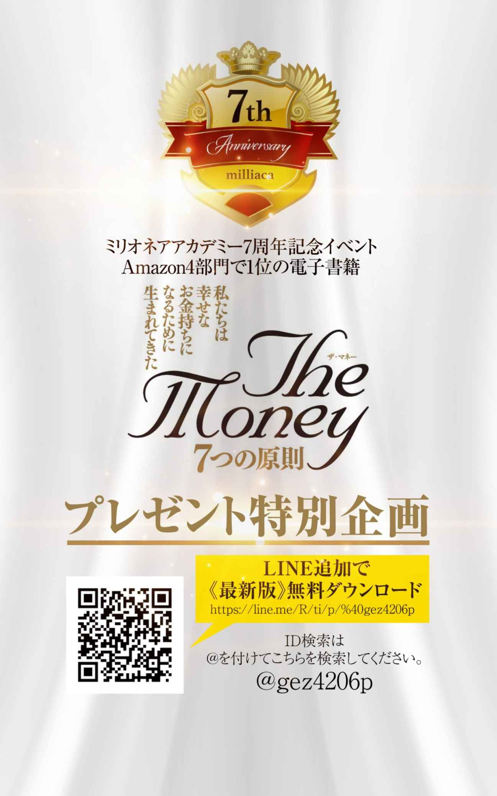 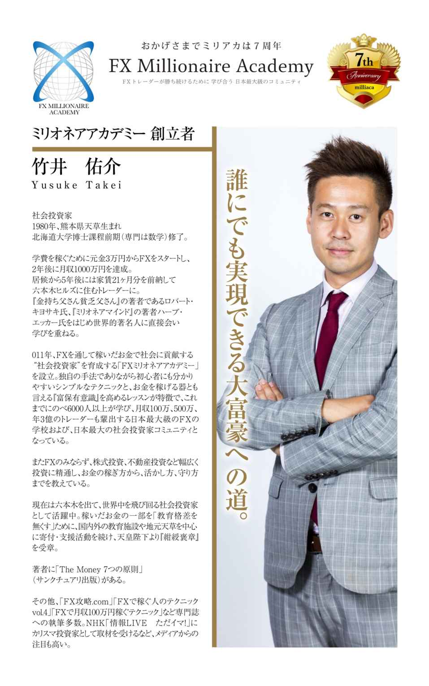